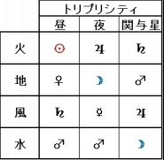

| 伝統的占星術 第一巻: その考え方とエッセンス | |
| Motoy Fukumoto | |
| UNKNOWN (2016) | |
伝統的占星術
第１巻
その考え方とエッセンス
Motoy Fukumoto MD, PhD
著作権について：
この書籍は、著作権法で保護されている著作物です。
本書の使用に関しましては、以下の点にご注意ください。
・本書の著作権はMidheaven社にあります。
・Midheaven社の書面による事前許可無く、本書の一部または全部をあらゆるデータ蓄積手段（印刷物、電子ファイルなど）により、複製、流用および転売することを禁じます。
【はじめに】
こんにちは、Motoy Fukumotoです。
現代において、自分が何座生まれか？を知らない人は皆無でしょう。
そして、12星座占いのベースは古代からある西洋占星術だろう、と思っている方がほとんどでしょう。
しかし、12星座占いは100年程度前に完成された、現代占星術が元になっています。
では、古代からの占星術（伝統的占星術）と現代占星術では、どのように異なるのでしょうか？
両者の比較をしながら、伝統的占星術の考え方とエッセンスを浮き彫りにしていきます。
"伝統的占星術"と聞いても、初耳かもしれません。
もしかすると「伝統的占星術には興味があるけれど、取っ付きにくそう・・・」、という方もいらっしゃるかもしれません。
でも、安心してください。
それらを解説するために、この本があるのです！！！
すでに"伝統的占星術"という言葉をご存知の方、もしくは、歴史とか背景とかは後回し良いから、まずは、伝統的占星術のテクニックを知りたい！と思われる方。
そういった方々は始めの方は読み飛ばして、8.【カレンダーの由来】から読まれると良いでしょう。
但し、2つだけ注意点があります。
ひとつ目は、"正しい正しくないという考え方をしない"で下さい。
この本は、伝統的占星術と現代占星術の比較を用いて書かれています。
当然ですが、伝統的占星術について知っていただきたい内容ですから、伝統的占星術よりの内容になっています。
ですから、読み終わる頃には「伝統的占星術こそが"正しい"占星術である」と考えてしまうかもしれません。
しかし、その考え方は正しくはありません。
伝統的占星術の方が理にかなっている事は事実ですが、正しいかどうかとは別の話だからです。
世の中には色々な宗教があります。
また、仏教一つとっても宗派が多数にあります。
ある信者が「私の宗教こそが正しい！」と言ったらどうでしょう？
原理主義者ですよね？
占星術も同じです。
伝統的占星術、現代占星術やインド占星術といった分け方だけでなく、伝統的占星術の中でもいろいろな種類があります。
もしかすると、あなたも占いをされているかもしれません。
正しい正しくないがきっかけで、友人の占い師さんと喧嘩をしたら？
せっかくの占いで不幸になった、と言えるのではないでしょうか？
そうではなくて、あなたにとって"面白いか面白く無いか？"という分け方をしましょう。
「私はこういうところが面白いと思うけれど、どう思う？」
そうすると友人は「私はこういうところが面白い！」という話になるでしょう。
もしかしたら、「私にはちょっと合わないかな」と言われるかもしれません。
でも、それぞれの好みだけですから、争いにはなりませんよね？
"正しい正しくないという分け方"は不毛な争いを生むだけです。
思想の正しさを他人が決める権利はありませんし、多様性を認める寛容さは、周りの人達だけでなく自分自身を幸せにします。
ふたつ目の注意点。
この本には今まで本を読んで勉強したり、占い教室で学ばれたりされた方には、受け入れ難い内容も含まれています。
熱心に占星術を勉強されてきた方ほど、気分が悪くなる人もいるかもしれません。
でも、少し我慢して読んで下さい。
なぜなら、ご自身が学ばれているものの良い面と悪い面を知っておくことは、とても大事だからです。
現代占星術だけでなく、伝統的占星術にも良い面と悪い面があります。
どんなものにも、どんな人にも良い面と悪い面があります。
日本人はどちらかと言うと、悪いことは言わないで良い面だけを見ようという傾向があると思います。
しかし、物事を深く学ぶためには、両面を見る必要があるのではないでしょうか？
この本を書いている間に、ル・コルビジェの設計した建築群が世界遺産登録されることになりました。
日本での報道は、ル・コルビジェの良い点ばかりです。
悪い面を言おうものなら、「お祭りムードに水を差すなんて」と批判されるでしょう。
一方、海外メディアでは彼がナチスの信奉者であったことなど、その悪い面も報道し受け止め方は視聴者に委ねられています。
人間ですから、良いところだけ見たいという気持ちはあります。
また故人への批判は、「死人に鞭打つ」と言われ忌み嫌われる行為です。
しかし良い面と悪い面を知っていて、「それでも私はこれが好きなのです」と言える方が、「私のやっていることは間違っているのかもしれないけれど、見ないことにしておこう」という態度よりも良いですし、何より自分自身の気持ちが楽ではないでしょうか？
ですから「今まで学んでいたことが否定されたらどうしよう？」とは思わずに、占星術ということは一度忘れて、全く新しい占いを学ぶつもりで読んでみてください。
きっと最後には、「伝統的占星術って、楽しい！」と思われることでしょう。
目次
伝統的占星術のテクニックをお話する前に、まず、占星術の歴史を知る必要があります！
なぜなら、これからお話する内容が"いつの時代なのか？"、"どんな背景で生まれたのか？"
そういった事がわからなければ、現代人の感覚で占星術を捉えてしまうからです。
この本を読まれている方で、天動説を信じている人はいないでしょう。
でも、大昔の人は天動説の世界で生きていました。
確かに、現代人から見ると無知な人達に思えるかもしれません。
でも、考え方を変えてみましょう。
"古代の人達は、天動説の世界で生きていたほうが、都合が良かった"のではないでしょうか？
現代の我々からすると、
「地動説で無ければ、ロケットを飛ばしたり、人工衛星を軌道に載せたり、宇宙旅行なんて不可能！」
と思います。
つまり、生活に困ることになります。
でも、古代の人達はそんなことをする必要がありませんでした。
それよりも大事なのは、今年の種まきの時期、収穫の時期、はたまた作物の出来具合ではないでしょうか？
そうであるならば、別に天動説の世界で生きていても問題はなかったでしょう。
実際、地球上に立って星空を見ていると、天動説の世界そのものが広がっています。
星空を見ながら、地球が回っていることを意識できる人は、現代人でも少ないのではないでしょうか？
そう、"地球から見た天体観測"を考えた場合、天動説のほうが日常生活をしていく上で、都合が良いのではないでしょうか？
地球が宇宙の中心だから、偉いとか言うつもりはありません。
しかし、実際に星空が動いているように見えるのならば、天動説や地動説にこだわる必要も無いのではないでしょうか？
前置きが長くなりましたが、ここからは占星術の歴史を少し振り返ってみましょう。
【西洋占星術の歴史】
ギリシャの哲学者 アリストテレスは 「自然学」の中で、西洋占星術の考え方を持ち出しています。
逆に言えば、西洋占星術の基礎が出来上がったのは紀元前400年前後のヘレニズム期であろうと推測されます。
実際、世界最古の誕生日占いでは、紀元前410年のバビロニア生まれのものが残っています。
西洋占星術の元が出来た後、紀元前334年のアレキサンダー大王のペルシャ侵攻がおこります。
これにより、今まで別々だった国々が一つの国になります。
そして多文化の混合があらゆる分野で、半ば強制的に行われました。
ヘレニズム文化の始まりです！
ヘレニズム文化の起こりは、とてつもない変化を人々にもたらしました。
宗教（神）一つ考えてみても、そうです。
ある場所では太陽を敬い、ある場所では火を敬い、ある場所ではライオンを敬っていたとします。
それまでは別々の国々であったため、問題はありませんでした。
ところが、それらが一つの国に強制的になったわけですから、その混乱たるや、想像に難くありません。
その当時の人々は、「本物の神様っていったい何！？」と思ったことでしょう。
これは占星術も例外ではなく、色々な文化がぶつかり合いました。
そして、それらが絶妙に混ざり合うことで、占星術が体系付けられました。
・メソポタミア：黄道12サイン、天体、天文学
・エジプト：ハウス
・ギリシャ：占星術用語、概念
これらの占星術における三要素が絶妙に結合し、西洋占星術が誕生しました。
このような激動の時代に、西洋占星術の基礎が誕生した訳ですね。
そして西洋占星術は、ローマ時代に大きく発展していきました。
このようにして誕生しましたが、現代科学の発達にともなって、17世紀以降に廃れていったのが、西洋占星術です。
まとめ：
・占星術はヘレニズム期に、文化の融合が起こり飛躍的に発展した
「西洋占星術が廃れた」と言うと、少し不思議な気がするかもしれません。
「だって大抵の雑誌には、◯◯座のあなたの運勢とか載っていますし・・・。
廃れていったというより、あちらこちらで流行っていますよ？」
はい、そうですね。
実はこれは"占星術であって、占星術ではない"ものなのです。
「何のことやら、サッパリ？？」と思われるかもしれませんが、少し我慢して読んで下さい。
現在、流行っている星占いは、本来の西洋占星術とは別物です。
その名も、"現代占星術"と呼ばれるものです。
"現代"と聞くと、
「本来の占星術は時代に合っていないから。廃れた訳じゃないの？」
と思われるかもしれません。
実は本来の占星術の廃れた理由は、諸説がありますので正確なことはハッキリとはわかりません。
この本では諸説あるうちから、現代占星術・現代科学の視点から書いていきましょう。
【西洋占星術が廃れた理由】
現代科学が生まれる以前、中世の大学では自由七科（じゆうしちか）が必修科目として教えられていました。
その中身は、文法・修辞学・弁証論 (論理学)から成る初級の3科と、算術・天文学・幾何学・音楽学の上級4科で構成されていました。
その中でも、占星術は天文学の中に含まれていました。
いえ、むしろ逆かも知れません。
つまり占星術の中に、天文学という一分野に含まれていたのではないでしょうか？
宇宙に出る手段がなかった時代に、自分と直接関わりのない天文学の重要性は低く、むしろ実生活に直接関わる占星術を重視した、と考えるほうが自然でしょう。
これは、占星術をAstrology、天文学をAstronomyと言うことからも、分かります。
Ecology（生態学）
Psychology（心理学）
Geology（地学）
といった単語からもわかるように、～logyという言葉は、～学という意味でした。
つまり、占星術というよりも、占星学。
中世では大学で教えられるような、れっきとした科学でした。
ところが、この立場は現代科学の出現によって、大きく変化していきます。
例えば、彗星です。
古代では彗星が現れる、ということは何か大事なことの前兆と考えられていたようです。
しかし、占星術ではいつ彗星がやってくるかは、わかりませんでした。
そして1785年に、占星術業界を揺るがす衝撃的な事件が起こります。
なんとハレー彗星が、エドモンド・ハレーの予言通り現れたのです。
そうすると、人々はこう思います。
「なんだ、彗星って定期的にやってくるだけじゃないか！
占星術が言う"大事なこと"とは、周期性があるものだったということか。
しかも、占星術ではわからなかった周期性が、現代科学でわかるならば、現代科学の方が、よっぽど使えるということになるよね？」
このように徐々に、人々の考え方も変化していきました。
すると占星術は一気に廃れ、現代科学が一気に表舞台に立つことになります。
しかし、ここで疑問が湧き上がります。
現代でも西洋占星術はありますよね？
その占星術は、どのように興ったのでしょうか？
その一つの要因は、現代科学に対抗するために現れました。
対抗するため？？？
そう、現代科学にも弱点はあります。
あなたにも感じたことはあると思います。
「現代科学って、なんでも理由付けできそうだけど。
観測できないものには、無力だよね。」
その通りです。
ですから現代科学では、観測出来ない要素に対しては、
"確率"を持ちだして、処理せざるを得ません。
でも・・・
占いに来られる方は、本当は確率なんて興味はないのです。
私は医師をしているので、患者さんに聞かれることがあります。
「私の病気は治りますか？」
そんなときお医者さんは、難しい病気であればあるほど、確率を使わざるを得ません。
「あなたの状態ですと、統計的に◯◯％の確率で治ります。」
でも、本当はそんなことに、興味がある人はいません。
「そうではなくて、"私"はどうなのですか？
YesかNoで答えて下さい！」
患者さんの本心としては、そう思うでしょう。
恐らく医師が患者になった場合も、心の底ではそう思うはずです。
"確率"と聞くとなんとなく科学的な気がしますが、確率を持ち出す必要性が出た時点で100%ではありえません。
仮に90%の確率で物事を説明できるものがあっても、残りの10%の多くは関連性がわからないまま切り捨てられているのではないでしょうか？
このように関連不明の10%のものには、現代科学では無力に等しいのです。
「でも、そういった目に見えないものにも、法則があるはずだ。
それを研究しよう！」
こうして神智学が現代科学に対抗して、興りました。
そのアプローチ方法は、魔術的な、まじないめいたものでした。
そしてその流れの中で、西洋占星術も神智学的に復興がなされます。
これが、"現代占星術"です。
一般的人の目から占いを見ると、どこか不思議な怪しいイメージを持ちますが、現代占星術にまじないめいた雰囲気を感じるのは、出来上がった背景を考えれば当然ですね？
でも、神智学的な占星術といわれて、不思議に思うかもしれません。
「古代の学問が、どうして神智学的？」
そうですね。
本来は、学問である占星術とまじないめいた神智学は、相容れないものです。
でも、現在の西洋占星術をされている方をみると、どこか神秘的なものを前面に出しているように感じます。
あなたも、占いというとどこかスピリチュアルっぽい感じがしませんか？
場合によっては、カルマとか輪廻転生などを、占断に持ち出す占い師もいらっしゃいます。
でも、カルマとか輪廻転生という概念は、インド思想からの影響であって、元々の西欧人には無い考え方です。
これは。、少し考えていただければわかります。
ルネサンスの巨匠ミケランジェロ作 システィナ礼拝堂の"最後の審判"という絵画がありますよね？
あの場面は、キリスト教の死生観が描かれています。
キリスト教の教えでは、世界の終わりにはキリストが再臨し、死者も土の中から蘇り、天国行きと地獄行きとに分けられる、とされています。
つまり、死後は最後の審判まで土の中で眠っている、と考えられたわけです。
比較的新しい宗教であるキリスト教を例にあげていますが、それ以前の西洋世界にもカルマ（前世の行い）という考え方はありませんでした。
ここで少し、占い師の所へ行くことを想像してみましょう。
いつも不幸なことばかりがあって、しかもあまり強くないホロスコープの生まれであったとします。
「どうして私はこのような生まれなのですか？」と占い師さんに質問したとします。
「それはあなたの前世が・・・」
と言われたら、本来の西洋占星術とはかなり違った考えだ、と思って下さい。
古代の占星術師は、物事の原因を前世のせいであるとは説明していません。
すると、ここで少し違和感を覚えられたと思います。
「つまり、今、流行っている現代占星術って・・・。
本来の占星術と別物なんじゃないの？」
実はそうなのです。
現代占星術が出来上がる過程で、占星術が本来持っていた哲学や精髄が、ごっそり捨て去られてしまったからです！！！
そして、現代占星術はより人間の内面に、そしてスピリチュアルの色濃いものとなりました。
ここでは詳しくは述べませんが、現代占星術の歴史的成り立ちとして、スピリチュアリズムと深く結びついて出来上がっているのです。
まとめ：
・現代占星術はスピリチュアリズムをベースに、近代になり誕生したもの
・伝統的占星術は、古代からあった占星術
しかし、こうも思えるかもしれません。
「現代占星術は、現代科学の欠点を補おうとしているのなら。
現代占星術って素晴らしいものじゃないですか？
本来の占星術とは別物としても、それはそれでいい訳じゃないですか？」
そうですね。
確かに、歴史の流れからだけですと、そのように思えるかもしれません。
でも、現代占星術にもやはり問題があるのです。
現代占星術の問題点は、単に本来の占星術の素晴らしい技術を捨て去った、ということだけではありません。
私が思う現代占星術の問題点を、少し書きましょう。
【現代占星術の問題点】
現代占星術の問題点は、自分中心になり過ぎてしまったことです。
これは現代占星術だけの問題では無いのですが、占いに行く場合、「"私が"どうなのか？」というご質問が多いように思います。
そのため、その人の内面にフォーカスしすぎる傾向を感じます。
ある時、「私は占星術の勉強をしているのですよ。」と外国人に話した時、「お前は心理学に興味が有るのか？」と聞かれたことがあります。
このように外国でも、同じような傾向があるようですね。
もちろん伝統的占星術でも、人の気持ちなど心理面の変化はわかります。
しかし、物事を構成しているのは、質問者の気持ちだけではなく、外部要因も大きいのではないでしょうか？
自分の内面に注目し過ぎると、物事への"こだわり"に繋がります。
それではせっかく占いに来ても、上手く解決できませんよね？
例えば悩みがあるとしても、意識が"自分"中心でいる限りは、物事に対して視野が狭窄しているため周りが見えません。
その結果、なかなかうまくいかないです。
けれど、"他人"目線になれた時、ふっと力が抜けてうまくいくことがあります。
自分中心の考え方が、物事の解決から遠ざけている事はよくあることです。
伝統的占星術では質問者の心理面だけでなく、その人を取り巻いている人々やその心理も含めて、読み取ることができます。
自分だけではなく周りの人の気持ちがわかった時、こだわりから開放され、結果的に物事が解決しやすくなるのではないでしょうか？
まとめ：
・現代占星術は自分が占いの中心であることによる問題点がある
ここまで読まれた方は、
「伝統的占星術では、主観的な気持だけでなく客観的状況もわかるということ？そちらの方が面白いかも・・・」
と思われたかもしれません。
もちろん、私は面白いと思っているので続けているのですが、あなたにもそう思っていただけると、とてもうれしいです。
それでは次に、伝統的占星術と現代占星術の違いから、「何が面白いのか？」というお話をしていきましょう！
伝統的占星術の面白いところ、そこは・・・
ハッキリ当たることです！
そう聞くと不思議に思うかもしれません。
「別に伝統的占星術で無くても、雑誌の本でもよく当たっていると思うのですが？」
そう思われるかもしれませんね。
でも逆に、こういう話を聞いたことはありませんか？
「占いの結果って、誰にでも当てはまるように書いてあるよね。」
確かにそういった傾向もあります。
その理由は、ちょっと考えればわかります。
例えば、血液型占いを考えてみましょう。
血液型がA型の人は、几帳面
血液型がB型の人は、自己中心的
血液型がO型の人は、おおらか
血液型がAB型の人は、二面性がある
そんなことを、聴いたことがあるのではないでしょうか？
私が覚えているくらいですから、結構知られていると思います。
でも冷静に考えればどんな血液型の人でも、几帳面で自己中心的でおおらかで二面性のある人はいるでしょう。
もっと言うなら、どんな人でも几帳面で自己中心的でおおらかで二面性を持っているのではないでしょうか？
パートナーに対して、子供に対して、親に対して、兄弟に対して、友人に対して、上司に対して、部下に対して、それぞれ、気分や場所によって変わるのではないでしょうか？
そう、誰にでもある性格だから、当たって居るように感じるのですね。
当たっているか、当たっていないか、という意味では当たっているわけですが、"誰にとっても当てはまる事しか言っていない"とも言えます。
これを、"バーナム効果（Barnum effect）"といいます。
【伝統的占星術と現代占星術】
では、伝統的占星術はどうでしょう？
これには、伝統的占星術を実際に行なっていた人を考えてもらえば、わかり易いです。
古代において、時計を持っているということは権力の象徴でした。
何故なら、古代の時計は"人力"だったからです。
時の記念日は、天智天皇が水時計を設置した日が由来です。
そう、古代の時計は水時計でした。
水時計とは、石製の容器の底に小さな穴を開けたものです。
そこに水を入れると、ポタポタと一定のスピードで水滴が落ちるようにできていました。
それを測ることで、時間を測っていた訳ですね。
これを使うには水時計専用に、四六時中水を入れる人が必要です。
逆に言えば、かなりの権力者以外は時計を持てなかった、ということです。
伝統的占星術師はこういった権力者に対して占いをしていました。
仮に曖昧だったり、占いが当たらなかったりしていたらどうでしょう？
・・・・・
クビですね。
実際、伝統的占星術は権力者と深く結びついていました。
そのため、相手に勝つにはどうすれば良いのか？など、戦いでも使用されていました。
私の専門は医療占星術ですが、古代では医療現場でも使用されていました。
それこそ、命がけで占いをしていたわけです。
古代の人達がそのような努力してくれていたからこそ、私達は安心してホロスコープを診ることが出来ます。
更に、現代占星術と伝統的占星術の違いを書きます。
それは・・・
"当てることに主眼をおいているかどうか？"
「占いだから、当たってなんぼでしょう？」と思うかもしれませんが、あなたの想像以上に現代占星術では当たらなくても良い、と考えている人が多いです。
その理由は様々ですが、当てることよりも自分の内面を見つめなおす方が大事、という意見があります。
確かに、内面を見つめなおすことは大事なのですが、それはある意味で自己完結型の思考でしょう。
世の中は自分の力でなんとかなるものと、他人の協力とでなんとかなるものがあります。
そして占いに来る悩み事という点では、自分の力でなんとかなるものの方が、少ないのではないでしょうか？
恋愛一つとっても、自分一人の力ではなんともなりません。
恋愛とは、相手がいて初めて成り立つものですから。
そして苦しくなる原因は、自分がなんとかすればなんとかなる、と思い込んでいるからではないでしょうか？
でも、実際は自分の力だけでは何ともならないですよね？
相手次第のものも、世の中にはいっぱいあります。
伝統的占星術の利点は、自分！自分！とはならず、他人や状況を含めた広い視野で客観的にホロスコープを読める点です。
現代占星術では、どうしても自分の内面を見つめるあまり、"気持ち"にフォーカスしすぎています。
そしてそれを防ぐには、うつろいやすい"自分の気持ち"ではなく、他人を含めた客観的事実を"当てること"を大事にすることではないでしょうか？
「でも、現代占星術でも当たっていますよ？」と思うかもしれません。
しかし、現代占星術での"当たる"と、伝統的占星術の"当たる"は随分かけ離れています。
現代占星術では客観的事実ではなく、「こんな"思い"をします」という言い方をします。
でも、伝統的占星術では、「誰が何をしてどうなる」という事を言います。
例えば友達のハウスである、11ハウスという場所をよむ場合、現代占星術では"友達に対する気持ち"を表します。
ところが、伝統的占星術では、"友達そのもの"を表しています。
「現代占星術って随分、自分中心だな！」と思われたかもしれません。
でも占星術に慣れていないと、この説明はちょっとわかりづらいと思いますので、昔話をしてみます。
アブ・マシャラー（Abu Ma' shar）という、9世紀のペルシャ人の占星術師がいました。
ある貴婦人が占星術師たちの腕を競わせるために、当てもの大会をしました。
「隠したものが何か？を当ててみなさい」というのです。
すると、占星術師たちは次々と「果物です」と答えます。
でも、アブ・マシャラーだけは「動物です」と答えます。
ところが貴婦人が取り出したものは、りんごでした。
りんご？
「アブ・マシャラーほどの占星術師が外してしまったのか・・・」と誰もが思った瞬間。
平然とアブ・マシャラーは言います。
「そのりんごを切ってみてください」
すると・・・
その中には、青虫がいました。
私がこのような質問をされたとしても、動物はおろか果物と答えるのも難しいでしょう。
食べ物、ならば答えられるかもしれません。
ですが、現代占星術をいくら勉強しても、食べ物とすら分かり得ないのです。
これが私の現代占星術を完全にやめてしまった、大きな理由の一つです。
いくら未来を予測するとしても、具体的な事実を当てなければ、対処が出来ませんよね？
「あなたは体に痛い思いをします」
と言われたとしても、何の覚悟もできません。
でも、「交通事故に遭うだろうから、気を付けましょう」
と言われたら、道を歩く時に気をつけることが出来ます。
どちらも当たっているかもしれませんが、随分と"差"があることがわかると思います。
そして、「伝統的占星術の方が面白い！」と興味を持たれたのではないでしょうか？
まとめ：
・"当たる"という言葉にも、大きな違いがある
（裸眼でもメガネを掛けていても、"見える"と言うのと同じ）
更に現代占星術をされている方には、少し耳の痛い話をします。
そもそも、"現代占星術の成り立ちからも、当てることを主眼としていない"のです。
現代占星術をまとめ上げた人物、としてあげられるのは、間違いなくアラン・レオでしょう。
彼は占星術を復興する際に、伝統的占星術の否定から行いました。
彼が思った伝統的占星術の問題点。
それは、"決定論"です。
運命論と言い換えても、良いかもしれません。
いずれにせよ伝統的占星術をやっていると、このような思いに至ります。
つまり、「世の中は予定調和によって、成り立っているのではないか？」ということです。
冷静に考えればわかりますが、"占いが当たる"ということはそういうことですよね？
でもアラン・レオは、「そんなことは無いだろ！人間は自由意志によって運命を変えられるのだ！」と考えました。
もっと言うなら、「人間は自分の性格を変えることで、人生を変えられる。」そう考えました。
その気持はわかります。
そして、正しいと思います。
なぜなら、「私の人生っていつも同じパターンで失敗するなぁ」、と思う人は、物事の受け止め方がパターン化していて、更にはそれに対する反応もパターン化しているのでは無いでしょうか？
身近な人を見て、「あの人はいつもあのパターンで・・・。」という方はいますよね？
その方の今後の人生を予想するとき、占いを使わなくてもある程度わかるでしょう。
それは、"性格が運命を作っている"、ということです。
そうであるならば、性格を変えれば運命が変わる、そう思ってもおかしくはありません。
何度も書きますが、私自身はその理屈は正しいとは思います。
しかしだからといって運命を、そうそう変えられるものではありません。
なぜなら、"気質はほとんど変わらないから"です。
性格というのは、心の反応の一部ですよね？
伝統的占星術で言う気質とは、もっと大きな意味を持ちます。
それは、体格、顔つき、姿勢、好む食事、どんな人が気と合うのか、更に言うなら好きな趣味も含まれます。
性格も気質のひとつの構成要素ではありますが、逆に気質が性格を形作る元になっているのです。
日本国民の個人個人は日本を構成する要素ですが、日本という大きな枠組が日本の国民性を規定しているのと似ています。
そして、日本という枠組みのほうが個人よりも大きな枠組と言えます。
つまり性格を変えようと思うならば、その根本である気質を変える必要があります。
なぜなら気質は性格の元ですから、気質をそのままにして性格を変えようとしても、すぐに元通りの性格に戻るからです。
しかし、気質を変えることは、ほぼ不可能ではないでしょうか？
気質を変えるということは、
体格を変え
顔つきを変え
姿勢を変え
好む食事を変え
付き合う人間を変え
趣味も変える
ということです。
ダイエットだけでも難しいのに、そんなことが出来る人間がどれだけいるでしょうか？
私は、運命は変えられるとは思います。
しかし出家して悟りを開くくらいの修行をしなければ、なかなか難しいでしょうし、悟りを開いても気質が変わる保証はありません。
すると、「運命は決まっているのですか？」そう思うかもしれません。
こんなことを書いたら、差別主義者と言われそうですが・・・
私は正直に申し上げて、「運命は皆さんが思っている以上に決まっている」と思います。
この考え方になじめない理由はわかりますし、嫌な気持ちにもなるでしょう。
「運命が変わらないなら、日々の苦しみは何の意味があるの？」
「運命が決まっているなら、金持ちか貧乏かも決まっているということ？」
「運命が変わらないなら、人生に努力する意味は無いの？」
「運命が決まっているなら、占いなんて必要ないでしょう？」
そう思いますよね？？？
そのお気持ちは、よくわかります。
私も西洋占星術を研究するまでは、そう思っていましたから。
ですから、かつての私は占いが嫌いでした。
でもなぜ私は、運命が皆さんの思っている以上に決まっていると思うのか？
その根拠をわかりやすく説明するために、少し占星術の話をしましょう。
誕生日で占う場合、必要な情報というのがあります。
それは、
・生まれた場所
・生まれた年月日と時間
ここで問題になるのが、生まれた"時間"です。
でも、この時間というのが曲者で・・・
「生まれた時間を、ご存じの方はいますか？」と聞くと、大抵の人は「わかりません・・・」となるわけです。
母子手帳を見れば書いてありますが、その時間そのものが信用出来ない場合があります。
産婦人科にあった時計の時刻がずれていた。
先生が一服してから、出生証明書を書いた。
そもそも出生時間を、証明書を実際に書く時間にした。
という可能性も無きにしもあらず、です。
ですから「ネイタル占星術よりもホラリー占星術の方がいいよ」と言う方もいます。
ネイタル占星術とは誕生日占いのこと、ホラリー占星術とは質問をもらった場所と時間で占うものです。
それは一理あるのですが。
実はネイタル占星術には、「誕生時間補正」というテクニックがあります。
つまり、生まれた時間を推定するのですね。
それを、どうやって行っているのか？
まず、その人の容貌や体の特徴を見ます。
そして職種、趣味、親はどんな人か、兄弟はいるのか、付き合った人はどんな人であるか、などを聞きます。
ここらで大体、誤差2時間位の枠におさまります。
そして結婚した時、子供が生まれた時、昇進した時など、人生で起こったイベントを聞きます。
すると、更にその精度が増します。
凄い方は、20秒の誤差の中に収めることが出来ます。
誕生時間を秒単位で当てるなんて、凄いですね！
そして、ここで気付いた方もいらっしゃると思います。
「つまり、その人の容貌や職種だけじゃなくて・・・
人生で起こるイベントまで生まれた時に決まっている！！ということ？？？」
はい、その通りです。
そうでないと、補正ができませんよね？
ビジネスや開運などで、占いを"利用する"とうたう方もいらっしゃいますが、占いを利用しているつもりが、実は運命の手の平の上にある。
そうは思いませんか？
まるでお釈迦様の掌の孫悟空のように。
そういうことを言うと、「運命は全く変わらないの？？？」
と絶望するかもしれません。
【決定論と自由意志】
更には、こんなことを言われそうです。
「運命が変わらないなんて、差別主義者の意見だと思います。
だって、金持ちが金持ちなのは運命。
貧乏人が貧乏なのも運命、ということですよね？
今の苦しい状況は自分の生まれが悪いから、ということになりますよ。
それって、人を生まれで差別していませんか？」
う～ん、なんだか説得力があります。
「そうかもなぁ」と言ってしまいそうです。
でも、私はそうは思いません。
むしろ、そういう考え方のほうが、
差別主義的ではないか？と思うのです。
ちょっと考えてもらえれば、わかるのですが。
お金持ちのみんながみんな幸福でしょうか？
そんなことはないですよね？
商社ビジネスで大儲けした方に、質問したことがあります。
仮にAさんとしましょう。
私「そんなに成功されて、悩みなんて無いのでしょう？」
すると、Aさんは大真面目な顔をして、うつむき・・・
Aさん「そんなことないです・・・悩みだらけですよ。」
私「えっ？それって何ですか？」
Aさん「友だちがいないのです。
いえ、ビジネスを教えるような人はいますし、パートナーはいますよ。
でも、心を完全に許して話を出来る人がいないのですよ。」
うーん・・・
これは深刻ですよね。
そんな例は、枚挙に暇がありません。
海外の例ですとギリシャの海運王「アリストテレス・ソクラテス・オナシス」という方がいます。
この方は、難民から這い上がつて、海運王になりました。
なんと、あのマリア・カラスを愛人にしていた人です。
ケネディ大統領夫人だった、ジャクリーンと結婚もします。
お金で手に入るものは、何でも手に入った人です。
でも、その人生が幸せだったか？と言うと、そうでもありません。
いやむしろ、真似したくない方がほとんどかも知れません。
ジャクリーンとの結婚後、オナシスの息子は飛行機事故で亡くなります。
ショックを受けた前妻は、睡眠薬の飲み過ぎで死亡。
マリア・カラスも睡眠薬の飲み過ぎで心臓発作に。
オナシス自身は肺炎で亡くなります。
ところが不幸はこれだけに留まりません。
娘のクリスティーナは娘を産みますが、37歳の時に薬物中毒で亡くなります。
残ったのが孫娘のアティナ。
彼女が18歳になり遺産の一部を相続し、その額なんと・・・
3000億円！！！
多少のお金ならば幸せでしょうが、これだけ巨額になると幸福なわけがありません。
なぜなら、彼女の財産を狙う連中が寄って来たからです。
彼女は幼いころから誘拐事件などに巻き込まれたり、遺産を巡ってオナシス財団と裁判で争ったり。
本当に、ろくなことがありません。
ここで私は、
「自分さえ良ければいいという考え方だと、自分自身は良くても次の世代に不幸が撒き散らされる。」
ということを、"言いたいわけではありません"。
むしろ私が言いたいのは、
「金持ちでも、貧乏でも、悩みがある」
ということです。
悩みには大きい小さいがあるように見えますが、それは非常に主観的な考え方です。
ですから誰しも自分の悩みは大きく、他人の悩みは小さく見えるものです。
先ほどのAさんの悩みの話を読んで、「友達がいない悩みなんて、贅沢だな！」と思うのはかなり主観的ではないでしょうか？
悩みは悩み。
本人にとっては、大きな問題です。
そして、人間は誰しも何らかの悩みがあります。
ですから運命論者に対して、
「今の状況は自分の生まれ次第、ということは人を差別していませんか？
だって不幸なのも運命、ということですよね？」
なんて言うこと自体が、差別主義的ではないでしょうか？
なぜなら人間には全員悩みがあり、そこに貴賎はないからです。
そう、誰だって悩んでいるのです。
それを不幸というなら、誰もが不幸です。
社会的に成功している人でも、悩みがあります。
それは、その人にとって大きな問題です。
もしも、「そうは言っても金持ちは幸せですよ。」と思うのならば、"自分中心の考え方"にはまっているのではないでしょうか？
客観的に物事を捉えようとする伝統的占星術とは、真逆の考え方です。
そして悩みが悪いことかというと・・・？
そうではありません。
むしろ悩むことは、その人の人生において最も大事なことです。
悩みがなければ、学ぶことも出来ないからです。
つまり悩むことが、その人の人生のテーマとも言えます。
そう考えると、"運命論者≠差別主義者"ではないでしょうか？
だからこそ本当の運命論者は、人の悩みを馬鹿にしたりはしないです。
つい人の悩みを見ると、「つまらない事で、悩んでいるな」と言いたくなりますが、逆もまた真なりです。
自分の悩みもその人から見たら、小さな悩みでしょう。
そう、大自然の下では誰もが平等ではないでしょうか？
占星術を研究しているうちに、私は徐々にそういう考え方になりましたが、実はこういった考え方は昔の哲学者達の中にもありました。
それは、ストア派の決定論に似ています。
ストア派は、こう考えます。
「運命は人間にはコントロール出来ないものだ。
だから自分の周りに起こっていることに、あれこれ悩むことはあまり意味が無い。
むしろ、何があっても動じない心（アタラクシア）を得よう。」
人間は誰しも、自分の周りの出来事に振り回されているのです。
それには貴賎はありません。
運命を"根本的に"変えるということは、習慣化されていなかった筋トレなり、ダイエットなりを"一生続ける"ということです。
でも、そんなこと出来る人がどれだけいるでしょう？
"老年期"に入ってまで、ダイエットや筋トレを続けられるか？というと。
かなり難しいですよね。
なぜなら、痩せる意義がなくなるからです。
周りも同じような体型ならば・・・
どうして痩せる必要があるのでしょう？
どうして筋肉を付ける必要があるのでしょう？
それでも運命を根本的に変えるには、継続する必要があるわけです。
人間は周りの環境に流されてしまいがちですが、気質を変えるには常に人は人、自分は自分と考えなければなりません。
自分の問題点から目をそらすと、気質は変わらないということです。
でも、これはなかなか難しい・・・。
人間は本当のことを言われる方が、傷つきますから。
自分自身でも認めたくないものです。
ですから、自分の性格やパターンはなかなか変えられません。
自分の性格が原因で何かしらのトラブルがあって、はじめて治そうと思います。
けれどそれを矯正し続けるというのは、かなり難しいですよね？
三日坊主であるのがほとんどでしょう。
喉元過ぎればなんとやら、です。
ですから、ほとんどの方の運命は"根本的には"変わらないわけです。
そして間違いなく、私も三日坊主の一員です。
性格やパターン、そして根本的には気質を矯正しないのなら・・・
「どうして運命が"根本的に"変わるでしょうか？」
また、根本的に運命を変えるということは、自分一人の問題ではありません。
他人も巻き込むことになります。
全員が得をするようになればいいですが、そう都合良くなることは、あまり無いですよね？
受験にしても誰かが合格した分だけ、誰かが不合格になります。
決まった運命を変えようとして、もがいて結局は傷つく。
そういったことも、十分にありえます。
そして私はこうも思います。
「運命が変わらなくても、占いには活用法がある！」
少し話をずれますが、「あなたは集中力がありますか？？？」
「集中力ですか？
う～ん、ちょっと苦手かもしれません。
映画とかドラマだと、長時間見られるのですけれど。
どうも、仕事とか勉強とかは苦手で・・・」
と言うのは、私の心の声です。
でもどうして、集中力が無いのでしょう？
映画とかなら、大丈夫なのに。
仕事だと、あれこれ考え事をしてしまう。
それは・・・
過去や未来を考えているからです。
仕事をしている時、上司から小言を言われたら、「何もあんなことを、言わなくてもいいのに」と思います。
そのことを考え始めると、仕事に手がつきません。
これは、過去の出来事を考えていますよね？
テスト勉強中に、「あ、そういえばあれもやっておかないと！」
なんて、思い出したりしますが。
それは、未来を考えていますよね？
でも映画やドラマに集中している時は、そのストーリーの中に完全に入っていますよね？
だからこそ、「ヒー」とか「ひゃ～」なんて声をあげます。
その時その人には"今"、その場しか無いわけです。
集中している＝今を生きている、とも言えます。
もちろん過去にあったことや、未来に起こるであろうことを考えるのは大事です。
同じことを繰り返さないように。
でも、大抵の場合は、「杞憂」ですよね？
明日、地球が破滅するかもしれません。
でも、そんなことを考えていても仕方がありません。
実際問題として、本当に起こるかどうかわからないことや、今さらどうしようもないことに、悩むことって多いのではないでしょうか？
わかっちゃいるけど、やめられない。
そう思うかもしれません。
でも、ホロスコープを見て、
「自分はこういうことになりがちなのだな」、とか。
「この案件はこうなるのだろうな」、とか。
未来なり過去なりのパターンがわかったときに、「くよくよしても仕方がないよね。結果が駄目でも"今"、頑張ろう！」。そう思えます。
たとえ占いで試験に受からない、と出ていてもやる意味はあります。
むしろ、大丈夫かな？駄目かな？と悩みながら、行動する方が、
集中していない分だけ、ろくなことがありません。
悪い結果になるとしても、それはそれでいい意味のあきらめがつくのです。
例えば大自然の中で、吸い込まれるような星空を見た時、「なんか自分って、ちっぽけだな」と思ったり、「つまらないことに、くよくよしていても、仕方ないな」と感じたりすることはありませんか？
それと似ています。
運命を変えるように頑張るのも一つですが、運命を変えるということはどこかがねじ曲がった分だけ、別のところに"ねじれ"が生じます。
「有名になりたい！」と心では思っていたとしても、気質として人前に出るのが恥ずかしい人がいたとします。
それなのに有名になってしまったとしたら、傷つくことになりますよね？
こう考えると、気質に反した生き方をするのは、結果的に自分が不幸になるのではないでしょうか？
運命を変えることに頑張るよりも、「今を生きる」のが大事ではないでしょうか？
更に言うなら、占いで運命を変えている人はほとんどいません。
なぜなら「執着」というものがある限り、運命は変わらないからです。
「運命を変えたい！」という強い思いも、執着に繋がります。
運命を変えるには、現状を直視して執着しているものを手放し、それで初めて変わるものだと思うのです。
それは、苦しいことです。
なんといっても自分の今までの生き方を、根本的に変えるということですから。
そんな過酷な道を、誰もが選ぶ必要はありません。
そういう心持ちよりも、「運命が決まっているとしても、やりたいと思ったことはやる」、という生き方のほうが、私は良いと思うのです。
アラン・レオの言う自由意志によって運命を変えようとしても、結局は空回りし「やはり運命は根本的には変わらないのだ。」と絶望するのではないでしょうか？
むしろ自由意志とは、「駄目と決まっていても、それでもやる！」と決める意志ではないでしょうか？
そして、結果はどうあれ"逃げずに経験すること"こそ人生にとって大事なことだと思うのです。
過去と未来に悩むこと無く、今を生きる手助けとなる。
それが、占い活用法ではないでしょうか？
まとめ：
・占いを利用しようと思っても、なかなか上手くいかない
・占いによって運命を変えようと思うよりも、今を生きる自由意志を持つ方が良い
私が思う伝統的占星術の面白さは、"ハッキリしている"という点です。
ハッキリしているというのは、「こうなるよ」というのが、Yesか Noかで言えるということです。
例えば恋愛の質問で、うまくいくかどうか？も、Yesか Noかで出るわけです。
そして外れたとしても、「運命が変わったから」などと言い訳しない。
「何故、外れたのだろう？」と反省できる。
それが伝統的占星術の良いところだと思うのです。
伝統的占星術では、「70%の確率でうまくいきます！」とは言いません。
「うまくいきます」もしくは、「うまくいきません」どちらかです。
ある意味、統計データを用いる現代科学よりもハッキリしているのが、伝統的占星術と思います。
もちろん、伝統的占星術にもわからないこともありますし、デメリットは有ります。
それは、・・・
"ハッキリしている"ことです。
ハッキリしている、というのは、一見メリットのようですが。
それはそれで、デメリットが有ります。
【伝統的占星術の問題点】
それは2つあります。
ひとつ目は・・・
「占いが結果を、ハッキリ言ってしまう」
伝統的占星術はハッキリした質問には、ハッキリした結果を伝えます。
ですから、依頼者（カレントといいます）にもハッキリ結果を言いがちです。
その結果、どこか冷たい人のように思われがちです。
占い師としては、「今回はそういう結果ですけれど、次頑張りましょうよ。きっぱり諦めないと、次のチャンスを掴めませんよ。」という気持でハッキリ言うのでしょう。
しかし、カレントにショックを与えない言い回しなのかというとそうではないですよね？
優しさが空回りしています。
せっかく時間とお金を使って占いを依頼されているわけですから、良い方向へ導くなんらかのきっかけを作って頂く方がいいです。
そのためには、相手が受け入れられる言い回しが必要となります。
カレントが受け入れ難い内容だとしても、オブラートに包みつつ相手に受け入れられるように話をする。
これが苦手です。
もしかするとこの問題点は、私だけかもしれませんが・・・
現代占星術をされている方のほうが、得意なのではないか？と感じます。
ふたつ目は・・・
「占いが外れた時も、ハッキリしている」
これはヘコみますね。
初心者が伝統的占星術を、嫌になってしまう理由の一つと思います。
「本に書いてあるとおりに読んでみたけれど、当たっていないのですが・・・」
そういった相談をされたこともあります。
そして私も初心者の頃は、そう思ったことがあります。
でもそう思ったら、悪循環が始まります。
「伝統的占星術なんて当たらないじゃないか！」
そう思ってしまうわけです。
せっかく学び始めた占星術を、やめてしまう人もいるかもしれません。
でも・・・
本当は占星術のせいではないのです。
必ずどこかに見落としがある訳ですね。
でも、初心者ゆえに気付けない。
いえ、熟練者でも分からない事があります。
なぜなら人類が始まって以来、「占星術の全てを身につけた人はいない」からです。
実際、百発百中なら"神"以外ありえません。
人間は神ではないので、どんなに優秀な占星術師でも、何かしらの間違いをします。
占星術でもわからない事はいくらでもあります。
でも、それが人間というものです。
ところがそれを受け入れられず、やめてしまう人もいます。
私を含めて、人は他人から批判されたり、間違っていると言われたりするとかなりヘコみますもんね。
でも、こう考えてみてはどうでしょう？
間違いをすることで、天は我々に「何か大事な見落としがありますよね？」というヒントを、教えてくれているのではないでしょうか？
この考え方は、なかなか受け入れるのが難しいかもしれません。
でも、"人間は完璧ではない"そして"学ぶことを怠けてはいけない"ということを占い師自身に教えてくれるのも、伝統的占星術の良いところです。
「私の占いは、外れることがあります。」
なんて言う占い師は、世の中では皆無に近いでしょう。
でももし100%の確率で当たるならば、神であるか、誰にでも当てはまることをばれないように言っているのか、占う前から調べて知っているのかのどちらかでしょう。
でも、間違ったら「間違えました。」と言える。
そんな謙虚な姿勢を持てるのが、伝統的占星術師です。
そして、間違いを通して"成長"のチャンスを与えられます。
そう考えると、伝統的占星術のデメリットは、メリットに思えてきませんか？
前章でも書きましたが、やはり嫌のことでも逃げずに経験することが大事なのです。
まとめ：
・伝統的占星術はハッキリしているため、カレントにきつくなりがちたが間違えを認めることで謙虚になれる
「伝統的占星術の利点は良くわかりました。
でも、その違いをどう見分ければいいのですか？」
そう思われるかもしれませんね。
確かに、占星術に全く馴染みのない人には、難しいかもしれません。
そして、伝統的占星術と銘打っていても、教えている中身は現代占星術のテクニックという方もいらっしゃいます。
でもそれだと、誰から学べば良いのかわからない・・・
そこで現代と伝統の違いの中で、わかりやすいものを一つだけご紹介しましょう。
伝統的占星術と現代占星術の違い。
初心者から見て最もわかりやすいのが、「天王星、海王星、冥王星をどう使うか？」です。
【伝統的占星術と現代占星術の違い】
もし、天王星、海王星、冥王星を使っていたら、ほぼ間違いなく現代占星術の要素が含まれています。
確かに伝統的占星術をされている方でも、こういった惑星を使用している方もいらっしゃいます。
しかし、水星や金星などと同列に扱う人はいません。
そういう方は惑星ではなく、恒星のように扱います。
「惑星と恒星がどう違うの？」、と思うかもしれません。
ざっくり説明しますと、惑星はそのものが力を持ちますが、恒星は惑星などを介してのみ力を持てる"ポイント"と考えてもらって良いです。
恒星には惑星ほどの力は、無いのですね。
伝統的占星術で天王星等を使う方もいますが、それ単独で占断はしない、ということです。
まとめますと、
伝統的占星術では、太陽、月、水星、金星、火星、木星、土星、の7天体を使用します。
しかし現代占星術では、天王星、海王星、冥王星を加えて10天体を使用します。
そう聞くと現代占星術の方が、色々読めそうな気がしますよね？
でも、実際はそうではないのです。
天王星、海王星、冥王星をあわせて、トランス・サタニアンといいます。
土星（サターン）より外（トランス）の星ということです。
これらはほとんど肉眼では見えませんので、望遠鏡が発達してから発見されました。
天王星は「離婚、電気、エキセントリック、コンピューター」
海王星は「錯覚、策略、眼に見えないもの、スピリチュアリズム」
冥王星は「一般的な凶星、破戒と再生、大きな変化」
現代占星術では、こういった意味があります。
現代占星術ではこれらの惑星も、金星や木星といった他の惑星と平等に扱いますから、その意味合いの比重が1/10ずつ（10天体のうちの一つ）あります。
でも、伝統的占星術では滅多に使いませんし、使わないのにはきちんとした"理由"があります。
伝統的占星術で使わないのは、古代の人々は"光＝エネルギー"と考えていたからです。
トランス・サタニアンが見つかったのは、望遠鏡が出来てからです。
一番明るい天王星でも６等星です。
ということは、ほとんど肉眼では見えないわけです。
肉眼で見えない星、つまりはエネルギーの少ない星にどれだけの意味があるのでしょう？
ですから先ほど書きましたように、伝統的占星術ではむしろ、レグルス（獅子座）、スピカ（乙女座）といった明るい恒星を使います。
7天体しか使わない伝統的占星術、と思われたかもしれませんが、そうではないのですね。
恒星を含めると、現代占星術で扱う10天体以上のポイントを見ています。
そして、一等星のほうがトランス・サタニアンよりも、重視されます。
目に見えない星は重視せず、目に見える星を大事にしているからです。
これは、伝統的占星術と現代占星術の違いにも似ていますね。
目に見える客観的事実を大事にする、伝統的占星術。
目に見えない自分の内面を大事にする、現代占星術。
もちろん伝統的占星術でも、目に見えない"気持ち"を読むことは問題なく出来ますので安心して下さい。
まとめ：
・伝統的占星術では、トランス・サタニアンを重視しない
それでは、これからもう少し具体的に、伝統的占星術の考え方についてお話していきましょう。
まずは、あなたの身近にある占星術から。
それは、"カレンダー"です。
私たちの生活の中で、特に曜日を意識するのは何度もあります。
金曜日だとウキウキ！
日曜日の終わりにはズーン・・・
という感じですね。
では、その曜日の名称は、一体どこからきたのでしょうか？
曜日は「月・火・水・木・金・土・日」と並んでいます。
でも、太陽からの近さならば「水・金・地（月）・火・木・土」になるはずです。
すると、地球からの近さで考えてもおかしいですね？
実は、ここにも伝統的占星術が隠れているのです！
伝統的占星術の重要な考え方の一つに、"カルディアン・オーダー"、と呼ばれているものがあります。
カルディアンとは、"カルディア人の"、オーダーとは、"順序"
つまりカルディアン・オーダーとは、"カルディア人の作った順序"ということです。
具体的には、「土星→木星→火星→太陽→金星→水星→月」、の並びの事をそう呼びます。
あまり見たことがない並びですね。
といいますか、初めて見るものかも知れません。
実はこれは、地上から見たときの天体の速度を遅い順に並べたものです。
そして、これが曜日に関係あるのです！
と言われても・・・
でも、これも曜日の順に並んでいませんね？
その謎について、ご説明します。
そして、その中には日常生活に隠された、伝統的占星術の謎があるのです。
まず、古代の時間についてお話ししましょう。
古代も現代も、一日は24時間でした。
でも、違いが2つありました。
ひとつ目は、時間間隔が違います。
現在では、一日の始まりから終りまでの時間を、24等分にして一時間としています。
古代では、日の出から日の入りまでを12等分、日没後から夜明けまでを12等分していました（合計で24等分）。
そして、カルディアン・オーダーの順に、惑星時間を当てはめていました。
現代では一時間は一時間で、長さは変わりません。
ところが古代の一時間は、日が出ている時と沈んでいる時で異なったわけです。
つまり、夏は昼の一時間が長く、冬は夜の一時間が長かったのです。
現代と同じ位置時間となるのは、春分の日と秋分の日だけでした。
この時間の割り方は、西洋だけでなく日本でも同じでした。
そして、名称も金星時間とか木星時間といった言い方をしていました。
ふたつ目の違いは、一日のスタートの違いです。
古代は日の出とともに、次の新しい日が始まるとされていました。
真夜中の0時に日が変わる現代とは、ちょっと違いますね！
そして西洋占星術では、「始めよければ、全て良し」という考え方があります。
逆に言えば、始まりがその後のことを支配しているとも言えます。
誕生日占いも、誕生した日（始め）が人生を左右するという考え方ですよね？
つまり、スタートの時間の天体がその日を支配することになります。
【カレンダーの語源】
ちょっとわかりづらいので、具体的に説明します！
例えば"土曜日"なら、そのスタートの時間は"土星時間"からとなります。
そしてカルディアン・オーダーでは、土星の次は木星。
ですから、土星時間の次は木星時間となります。
次に、カルディアン・オーダーでは、木星の次は火星になっています。
つまり、木星時間その次は火星時間、といった具合です。
土曜日からのスタートを簡略化すると、このようになります。
（カッコの番号は順番）
土(1)→木(2)→ 火(3)→ 太(4)→ 金(5)→ 水(6)→ 月(7)→
土(8)→木(9)→ 火(10)→太(11)→金(12)→水(13)→月(14)→
土(15)→木(16)→火(17)→太(18)→金(19)→水(20)→月(21)→
土(22)→木(23)→火(24)→太(25)
ちょうど土曜日の土星時間から始まった一日の終わりは、火星時間。
そして翌日が始まる25時間目には、太陽時間になります。
太陽時間がスタートの曜日は？
はい、"日曜日"になります！
つまり、"土曜日の次は日曜日"になります。
これを続けると、日曜日の次は月曜日、月曜日の次は火曜日となるわけです。
なんと、現在でも使われている曜日はここから由来していたのですね！
図にすると、もっとわかりやすいかもしれません。
これは、右回りにカルディアン・オーダーを円状に並べたものです。
例えば、「土曜日の翌日は何曜日かな？」と思った場合。
図を見れば、土星から右下に線をたどると太陽に届きます。
日曜日ですね！
その次は、太陽から月に線が出ていますよね？
つまり、月曜日です。
こうして続けていき、最後に金曜日まで来れば、また土曜日に戻るのです。
占星術を知らない人でも、曜日の並びは誰でも知っています。
意外ですが、知らず知らずのうちに、全ての人達は占星術の世界で生きているのです。
そして、このカルディアン・オーダーは、何かに発音が似ていませんか？
そう、"カレンダー"です！
実はカレンダーの語源は、占星術用語が由来なのですね。
ここで少し立ち止まって、考えていただきたいのですが。
もしトランス・サタニアンを、カルディアン・オーダーに入れ込むとどうなるでしょうか？
カルディアン・オーダーは速さの順ですから、
冥王星→海王星→天王星→土星→木星→火星→太陽→金星→水星→月
になりますね。
すると、とても困ったことが起きます。
そうです。
これでは曜日が設定出来ません！！！
カルディアン・オーダーの意味が分かっているなら、新しい天体を入れ込もうとは思いません。
伝統的占星術にはきちんとした理由があって、体系付けられてきたものなのです。
まとめ：
・カルディアン・オーダーによって曜日の順番は決まっている
・カレンダーの語源は、カルディアン・オーダー
それではここから少しずつ、占星術の深い話に入っていきましょう。
恐らくこの本を読まれている方で、"占いが嫌い"という方はいらっしゃらないと思います。
ですから、雑誌の中とかテレビに出てくる星占いも、時々チェックされるのではないでしょうか？
かく言う私自身、「こんなん当たってないよね。」なんて言いながらも見ていますから。
良い事言われれば嬉しいですし、悪いこと言われればドキッとしたりします。
ところで雑誌の星占いを見ると、「◯◯座のあなた」と書いてあります。
恐らく日本人の中で自分が何座か知らない人は、ほとんどいないでしょう。
では○○座とは、どういう意味なのでしょうか？
「夜空にある星座のことに決まっているでしょう？」
と思うかもしれません。
でも、これは正確には違います！
カルディア人たちは、太陽の通り道（黄道）にある星々から12の星座を作りました。
これが黄道12星座です。
皆さんお馴染みの星占いにある、牡羊座、牡牛座、双子座、蟹座、獅子座、乙女座、天秤座、蠍座、射手座、山羊座、水瓶座、魚座、ですね。
太陽はこの12星座を一年かけて回ります。
【星座とサインの違い】
西洋占星術ではこれら黄道12星座から名前をもらって、空には12サインというものがあると考えました。
そして、サインを"神々が住んでいる世界"と考えました。
つまり、星座とサインは全く別物なのですね。
天文学で使うのは◯◯座、占星術で使うのは◯◯サイン、と呼びます。
ちょっと不思議に思うかもしれませんが、例えば実際の、星座を考えてみましょう。
天秤座のような小さな星座もあれば、蠍座のような大きな星座もあります。
実は天秤座は、蠍座のハサミから分離してできた星座と言われています！
それくらい大きさに差があります。
太陽がどのサインと同じ方向にあるのか？が、星占いの◯◯座なのですが、星座をそのまま使ったら蠍座生まれは多くて、天秤座生まれの人は少なくなってしまいます。
でも、そんなことはありませんよね？
星占いの◯◯座生まれというのは、実は"サイン"というものを使用しているのです。
英語では星座はconstellation、サインはsignと完全に区別されています。
ただ、日本語ではどちらも○○座となってしまっているので、混乱の原因になってしまいます。
サインと実際の星座の位置や大きさとは、全く関係がありません。
では、サインはどのように決まっているのか？
答えは、春分の日の太陽の位置（春分点）を牡羊サインの0度として、そこからスタートして30°ごとに等分しているのです。
そして黄道12星座から名前をもらい、牡牛サイン、双子サイン・・・と順に名付けました。
ちょっとわかりづらいですか？
もう少し具体的に説明しますね。
太陽は毎日、東から西に向かって移動しているように見えます。
（西洋占星術ではプライマリー・モーションと呼びます）
でも、もう一つ大きな動きがあり、太陽は西から東に向かって1年をかけて天空を一周します。
（西洋占星術ではセカンダリー・モーションと呼びます）
つまり太陽は、一日約1度ずつ東にずれています（360度÷365日）。
その影響で、日の出の時刻が毎日変わります。
一日に約1度ずつ東にずれているということは、一年かけて元に戻ることになります。
ですから、その基準となるスタート地点として、春分の日に太陽がある場所が牡羊サインの0度ということにしたのです。
一日という単位で考えると、太陽が動いているように見えますが、天空自体も逆方向に動いているのですね。
ちなみに現在の牡羊サインは、天空上は魚座にあります。
更に言うなら、歴史的に星座とサインは別物のようなのです！
ギリシャ・ローマ神話はご存じの方が多いと思います。
ゼウスとかヴィーナスとか、人間臭い神々が色々なことをする話です。
ギリシャ・ローマ神話では、始めに名前もない神がいました。
そしてその神と自然が、この世を形作っていったことになっています。
その後に登場する神々が、大きな働きをした人間や動物を天空にあげて星座にしました。
これが、オリオン座とか蠍座とかですね。
ギリシャ神話の中で、アポロンの息子であるパエトーンがアポロンの神殿にやってくる話があります。
そして、アポロン神殿の銀の扉の両側には、左右6つずつ既に12サインが刻まれていたことになっています。
つまり、星座が出来る前に12サインというものがあったようなのです。
神話の話ではありますので証拠としては弱いかもしれませんが、ますます、サインと星座は別物だとわかっていただけでしょうか？
これからは、生まれの星座を聞かれたら、「○○サイン」と言ってみましょう。
「占星術を勉強している人なのですね！」ときっと一目置かれますよ。
まとめ：
・占星術では、◯◯座ではなく◯◯サインと呼ぶ
ホロスコープをご覧になったことはありますか？
すでに占星術に慣れ親しんでいる方には、いまさらという感がありますが、全くはじめての方には馴染みがないどころか、訳がわからないでしょう。
まずは図がどのような意味を持っているのか？を説明していきましょう！！！
丸いバウムクーヘンのような図がありますね。
これがホロスコープです！！！
【ホロスコープに描かれているもの】
まず一番外側のものを説明します。
これは"サイン"を示しています。
それぞれのマークは、次の表を参考にしてください。
例えば、♈のマーク＝牡羊サイン、となります。
次の、♉のマーク＝牡牛サイン、となります。
そして、これらの12サインは4つのエレメントに分けられます。
エレメントとは、"火"・"地"・"風"・"水"のことです。
古代ギリシャでは、世の中は四元素で成り立っているという考え方が生まれました。
エレメントとは、この世界を構成している四元素のことです。
そして、12サインは"火"・"地"・"風"・"水"に分類できます。
「火」のエレメント：牡羊サイン・獅子サイン・射手サイン
「地」のエレメント：牡牛サイン・乙女サイン・山羊サイン
「風」のエレメント：双子サイン・天秤サイン・水瓶サイン
「水」のエレメント：蟹サイン・蠍サイン・魚サイン
火のエレメントの人は行動力意志の力が強いので、考える前に行動します。
地のエレメントの人は安定を求めるので、慎重です。
風のエレメントの人はコミュニケーション能力が高く、やることにスピード感があります。
水のエレメントの人は感情や感覚が鋭いので、想像力が豊かです。
このように、サインを4つのカテゴリに分けることが出来ます。
もちろん、それ以外の分け方はいくつかありますが、アスペクトの章で少しだけ説明します。
では、サインの内側の数字は何でしょう？
これは、「ハウス」というものです。
ハウスは12サインとは別に、ホロスコープを12に分割したものです。
サインは天からどんなエネルギーが降ってくるか？を示しています。
ハウスはその降り注ぎ方がどのような場面か？を示しています。
ハウスは、地上で起こっている様々な出来事を12に分けたと考えてもらってもいいです。
ちょっと違いがわかりづらいかもしれません。
実は私も伝統的占星術を学ぶまでは、ハウスの概念が今ひとつ理解出来ませんでした。
そして、占星術を学ぶ上で伝統と現代で一番差が出るのが、このハウスの考え方かも知れません！！！
このことについては、ハウスの概念の時に詳しく説明します。
まずは、一番外側の記号がサイン、その内側の数字がハウスを示す、という事がわかっていただければいいです。
それでは、さらに内側を見ていきましょう。
オスのマークとか、メスのマークとかが有りますね。
これは、惑星を示すシンボルです。
その意味は、以下の表のようになります。
オスのマーク＝火星
メスのマーク＝金星
となります。
また、少し戻ってホロスコープを見てください。
「火星はどこにありますか？」
二本の角のようなサインにオスのマークがあります。
これは「牡羊サインに火星がある」という意味になります。
さらにここは12番目のハウスです。
ですから「火星は第12ハウスにもある」という意味にもなります。
いかがでしょうか？
見方は意外と簡単だと思います。
少しホロスコープに親しみを持っていただけたでしょうか？
まとめ：
・ホロスコープを構成している要素は惑星、サイン、ハウスの３つ
それでは惑星の話です。
惑星といっても、占星術での惑星は太陽と月も含みますし、地球は含みません。
しかし、そのような言葉を表す日本語がないので、便宜上、惑星と言っています。
惑星の説明は、古典的にはバラから行います。
バラと聞いてどのようなことを思い浮かべますか？
バラにはトゲがある。
バラの香りは甘い。
バラは植物である。
始めに、バラのトゲに注目しましょう。
トゲは痛いですね。
そしてそれは火星が担当します。
物事を切る役目をするのは、火星だからです。
次に、バラの香りに注目しましょう。
甘い香りです。
これは金星が担当します。
金星は甘美なことを表すからです。
最後に、バラは植物であることに注目します。
植物は土から生えています。
ですから土星が担当します。
土星は土地を表すからです。
ホロスコープ上でバラを探す必要があった場合・・・
注目するのがトゲなら火星。
香りなら金星。
植物なら土星。
このように、同じものなのに注目する部位により、見るべき惑星が変わります。
こういった「◯◯と言えば◯◯」を、"ナチュラル・ルーラー"と言います。
例えば、「トゲのナチュラル・ルーラーは火星である」と言います。
どうでしょうか？
ちょっとリアルに、惑星に親しみが出てきたのではないでしょうか？
せっかくですから、次の特徴からそれぞれどの惑星に当てはまるか考えてみましょう。
・玉葱は辛い
・玉葱は白い
・玉葱をスライスする
では、答えに参ります！
・玉葱は辛い
辛さは火星です。
刺激的なものは火星です。
タバスコの辛さもそうですね。
・玉葱は白い
これは月です。
白さは月なのですね。
・玉葱をスライスする
スライスした時の形に注目！
そう、半月状です！
ですから、答えは月です。
こういう風に考えると、毎日の何気なく見ているものも、また違った視点で見られます。
なかなか楽しいのではないでしょうか？
「そうは言っても、惑星の意味なんてわからないです・・・」
そう思われますよね？
次に、どのようにして惑星のマークが、出来たのか？
そして、それぞれの惑星の特徴を説明していきましょう！
惑星のマークの由来がわかれば、覚えるのが随分楽になります。
また、それぞれの惑星の意味も想像できるようになります。
シンボルの意味には色々な説明がありますが
シンプルかつわかりやすいものをご紹介しましょう。
また、"ハウス"の話がところどころで出てきますが、詳しくはのちほどの章で説明します。
よくわからないと思ったら、軽く読み飛ばして下さい。
ハウスの章を読まれてから読み直されると、きっと理解しやすいでしょう。
さて惑星のマークの由来ですが、実は惑星のマークはたった3つのパーツから成り立っています。
それは、 ＋ 、 ○ 、 （ です。
それぞれの意味は以下のとおりです！！！
＋ ： 物質
◯ ： 魂
（ もしくは ） ：心
ちょっとわかりづらいですね・・・
惑星ごとに具体的に説明して行きましょう！
【惑星】
まず月☽です。
これはカッコが2つ組み合わさっています。
） ＋ ） ＝ 月のマーク
です。
つまり心を表しているのが、月なのですね！！！
実際、占星術では伝統・現代を問わず、心を見るときに多用します。
いきなり質問ですが、月が一番弱い時期、一番強い時期はいつだと思いますか？
恐らく一番弱い時期＝新月、一番強い時期＝満月、と思うかもしれません。
これは、半分正解で、半分間違っています！
新月の時、太陽と月は非常に近くにいます。
ですから月は地球から見えません。
太陽のほうが明るすぎるからですね。
そしてこの時間帯には月は、太陽にコンバストという弱い状態になっています！
（コンバストについては、太陽で詳しく書きます）
ですから、新月の月は弱いのです。
一方の満月。
これは太陽と月は反対側にあります。
実は反対側というのはオポジションと言って、お互いを邪魔しあってあまり良くないです。
（オポジションについては20.【コンジャンクションとアスペクト】で説明します）
意見が真っ向から対立して、いがみ合っている感じです。
驚きかもしれませんが、一般的に思われているほど満月は良いわけではないのですね。
皆さんがお馴染みの占星術といえば、誕生日の占星術でしょう。
「牡羊座の運勢は・・・」
などは、よく見ますよね？
これは「太陽が地球から見て、牡羊サインの方向にある」、ということなのですが、いつのホロスコープを使っているか？というと・・・
"誕生日"ですよね？
誕生日の占星術は、ネイタル占星術と呼ばれます。
でも占星術は、誕生日以外の日時でも占います。
その一つにホラリー占星術というものがあります。
ホラリー占星術というのは、質問が生まれた時間と場所でホロスコープを作成します。
質問が生まれた時のホロスコープから、その質問事項が今後どのようになるのか？を占うものです。
誕生日の占星術は、その人が生まれた時間と場所。
ホラリー占星術は、質問が生まれた時間と場所。
どちらも、生まれた時間と場所が大事なのです。
そのホラリー占星術は、"月の占星術"と言われます。
やはり、人の心や気持ちに関する質問も多いからでしょう。
ホラリー占星術では多くの質問で、月は質問者を表します。
月は質問者の心を表すからです。
ですから、かなり月を多用します。
と言いますか、月を使わない質問のほうが少ないです。
そして月にとっては、ちょっと注意するべき場所があります。
蠍サインの15度から天秤サインの15度は、"バイアコンバスタ"（Via Combusta）と言います。
ここは、非常に危険に満ちたエリアなのです！
ここに月が来ると、カレントの状態は非常に深刻な場合が多いと言います。
ちなみに、ネイタル占星術（誕生日で占う）は太陽の占星術。
マンデン占星術（国家を占う）は恒星の占星術と言われます。
占星術によって重視する天体が違うのは面白いですね。
現代占星術といえば、十二星座占いを見れば明らかなように太陽を非常に重視します。
その原因は、現代占星術ではネイタル占星術をメインに行うから、かもしれませんね。
とはいえ、日常生活では"心"が一番大事ですから、ホラリー占星術を抜きには語れません！！！
次に太陽☉です。
太陽は○のなかに・があります。
○は魂でした。
では点は何でしょうか？
これは種です。
何の種かというと、真実を求める種です。
この種は誰にでもあるものです。
占星術では太陽が王様です。
これは太陽の出ている昼間には、他の星が見えないことからもわかります。
その太陽には、魂の中に種がある。
占星術とは心ではなく、真実を求める学問なのですね。
太陽は王様というだけではなく、エッセンスも表します。
エッセンス？
オレンジを例に挙げます。
オレンジのエッセンスは？？？
オレンジジュースです！
わかりやすいですね。
では、ぶどうのエッセンスは？？？
そう、ぶどうジュース！と言いたいところですが・・・
ワインの方が代表的でしょう。
エッセンスの他にも、王様ゆえに百獣の王（ライオン）、金、鳥の王（ワシ）、ダイヤモンドを表します。
太陽は、そのものらしさを象徴するものです。
動物といえばライオン
金属といえば金
鳥といえばワシ
宝石といえばダイヤ
そしてカルディアン・オーダーを見ると、とても面白い事がわかります。
土星→木星→火星→「太陽」→金星→水星→月
そうです。
太陽が真ん中になります！！！
こんなところにも太陽は「自分が王様だ！」と主張しています。
もしここにトランス・サタニアンが入ってきたらどうでしょう？
もはや太陽は王様ではありません・・・
天王星、海王星、冥王星が入ってくるなら、木星が王様になるはずです。
これはなんとも変な話です。
新しい惑星が見つかる度に、王様が入れ替わることになるからです。
太陽以外にも王様の役を与えたら良いのでは？と思うかもしれませんが・・・
そうは簡単には行きません。
太陽はあくまで王様らしく振る舞おうとします。
王様の心配事といえば？
"革命"です。
占星術では、それを嫌がっていることが如実に現れることを、太陽は行います。
近づいてくる他の惑星を切り捨てようとします。
つまり他の惑星の力を削ごうとします。
これを、コンバスト（Conburst）と言います。
コンバストとは、"焼きつくす"という意味を持ちます。
占星術には、コンジャンクションという配置があります。
コンジャンクションとは、2つ以上の星がほぼ同じ場所にあることです。
例えば天秤のサインの15度に、火星と太陽があるならば。
「火星と太陽はコンジャンクションである」と言います。
実は、コンバストもコンジャンクションも配置は同じです。
つまり「コンバスト＝太陽とその他の惑星のコンジャンクション」ということです。
太陽だけは例外なのですね。
普通は惑星が隣同士になれば、その力を良い意味にも悪い意味にも強めます。
その距離が近ければ近いほど強力です。
密着度が高いほうが、協力しやすいですよね？
ところが太陽の場合は隣との距離が近ければ近いほど、力を削ごうとします。
その距離が、近ければ近いほど強力です。
密着度が高いほうが、うっとうしいですよね？
力を"削ごう"とする、"強めよう"とする、全く逆ですね！
もちろん、太陽がコンバストを起こさない場所もありますが。
多くの場所で、太陽は切って捨てます。
では、どういう場所でコンバストは起こらないのでしょうか？
それには3つあります。
ひとつ目はカジミ（Cazimi)です。
カジミとは太陽そのものと、ちょうど重なる事を言います。
太陽は他の惑星に比べて大きいですよね？
ですから、他の惑星が太陽の中にすっぽり入る事があります。
この状態がカジミです。
コンバストとの違いは、惑星が太陽の大きさからはみ出しているかどうか？です。
太陽の中にあれば、カジミ。
少しでも出れば、コンバスト。
カジミとなる範囲は、緯度にもよりますが大体50分くらいの大きさになります。
分とは、度の一つ小さな単位です。
60分が1度と同じです。
600分は10度と同じです。
分はこれだけ小さい単位です。
ですから、太陽と同じ度数であってもカジミにならない事があります。
カジミはまるで太陽の玉座に座らせてもらっている状態です。
コンバストという砂漠の中のオアシスとも言えます。
ここでは弱くなるどころか、虎の威を借る狐の如く、太陽のバックアップを得られてかなり強い状態となります。
2つ目は、獅子のサインや牡羊のサインです。
獅子サインでは太陽は自分の家です。
（太陽は獅子サインの支配星とも言う）
言ってみれば、太陽のホームグラウンドです。
自分の家がどうなっているか？を知らない人はいません。
同じように、ここでは太陽はのびのびと居られます。
刺される心配はしません。
3つ目は、近づいている惑星のホームグラウンドに太陽がいる場合です。
例えば、蟹のサインで月と太陽が一緒にいるとしましょう。
そうすると、蟹のサインでは月がホームグラウンド（支配星）です。
そして、そこでは月は太陽の接待役をします。
歓迎されているのに、攻撃するお客はいません。
まずは接待を受けるでしょう。
ですから、ここでも太陽はコンバストになりません！！！
ちなみに・・・。
特に悪影響を受けやすいのが水星です！
水星は、太陽の近くをなかなか離れられません。
ですから、しょっちゅうコンバストになります。
つまり、水星の状態が悪い人はとても多いです。
良い状態の人が少ない、と言った方が良いかもしれません。
水星は左脳的コミュニケーションの惑星です。
つまり、自分の思いを口に出して伝える惑星です。
「私のことを、全然わかってくれていない。」
「私ってよく誤解されるのよね。」
「ちゃんと伝えたのに、わかってくれていなかった」
そう思っている人は多いと思います。
その原因は、もしかすると太陽のいたずらのせいかもしれません。
次は土星♄です。
土星は＋の下に）がついています。
これは「物質が心を支配する」という意味です。
典型的な悪魔の方手法ですね・・・
「心を売ってくれたら、代わりに物をあげるよ～。」
悪魔が釈迦やキリストを誘惑する手口はこれでした。
逆に言えば「心を支配するには物質が魅力的」とも言えます。
ですから土星は最強の凶星と言われます。
土星は"境界の惑星"という意味もあります。
8.【カレンダーの語源】で、カルディアン・オーダーの話をしましたが。
実はこれはスピードだけでなく、天球の高さも表しています。
下の図を見て下さい。
トレミーの天球構造では、このような配置になっています。
惑星では月が一番地球に近くて、土星が一番遠いです。
そして土星の外側には恒星の天球や、サインの天球があります。
つまり土星は、恒星界と惑星の世界との"境界"なのです。
「それって現実的じゃないですよ！」と言われそうですが、
あくまでも、そういった概念と考えて下さい。
それはさておき、土星＝境界です。
ですから土星はナチュラル・ルーラーとして、皮膚を表したりします。
ナチュラル・ルーラーという言葉を、初めて聞いた方もいるかもしれません。
これは「◯◯といえば、☓☓！」という考え方です。
例えば「彼氏といえば、火星！」です。
なぜなら火星のマークはお馴染みの、オスのマーク（♂）だからです。
もちろん、彼氏がいつも火星とは限りませんが。
ホロスコープの中で、彼氏を表す星を探す時に一つの参考にします。
では、土星はなぜ皮膚を表すのでしょうか？
ある物体と別の物体があるとします。
それらを区別する境界はどこでしょう？
もっと言うと、人と人の境界はどこでしょう？
答えは皮膚ですね。
ですから、土星＝境界＝皮膚です！
現代占星術では、土星というのは主観的意識の境界を表します。
言ってみれば、土星より地球側は顕在意識、外側は潜在意識ということになりますね。
土星が境界である、ということを広げれば、そう思っても仕方がないかもしれません。
でも、そんなわけはありえませんね。
なぜなら我々の眼は、土星の更に外の世界（恒星の世界）も見えるからです。
現代占星術の考え方が正しければ・・・
"夜空に見える恒星たちのことを、私たちは無意識でみている"
ということになります。
いくらなんでも、それはありえません。
そして、この考え方にはもう一つ重大な欠点があります。
それは、外惑星（天王星、海王星、冥王星）の存在です。
現代占星術でも、土星に境界という意味が与えたのであれば・・・
どうして天王星が発見された時に、境界という意味を与えられなかったのでしょう？
どうして海王星が発見された時に、境界という意味を与えられなかったのでしょう？
どうして冥王星が発見された時に、境界という意味を与えられなかったのでしょう？
境界であるならば、その外側に惑星が見つかった時点で、どんどん外側の惑星に役割を与えるのが自然です。
加えて現在では冥王星が惑星ではありません。
ですから、海王星に境界という意味を与え直す必要があります。
しかし、そのようなことはされませんでした。
そうするとトランス・サタニアンを使うことに、あまり意味が無いことがわかりますね。
「トランス・サタニアンを使わなくても大丈夫なの？」と不安にならないで下さい。
大丈夫です！！！
でも、まだ不安な方もいるかもしれません。
もしかしたら、「土星が境界ということ自体が、間違いなのではないですか？」と思われるかもしれません。
実は占星術では、土星はこの世とあの世の境界でもあります。
つまり、生まれることと死ぬこととの境界です。
昔の人は、肉体に魂を入れるのは神様だと考えました。
そうすると、それをやり取りするルートが必要です。
では、「それはどこにあるの？」というと・・・
はい、土星ですね。
境界の惑星です。
そして、入り口は第1ハウス、出口は第8ハウスが担っています。
生まれること＝第1ハウス
死ぬこと＝第8ハウス
ということです。
（ここは順番だけ分かっていただければいいです）
ですから、やはり土星は古代から境界の惑星で大丈夫なのですね。
次は木星♃です！
土星とセットで覚えると覚えやすいです。
何故なら・・・
土星と逆だからです！
）の下に＋がついています。
つまり、「心が物質を支配」しています。
これは標準的な考え方ですし、人間のあるべき姿です。
非常に人間的で、おおらかとも言えます。
ちなみに、ギリシャ・ローマ神話で木星を表すのはゼウスです。
おおらかです。
あっちこっちで女の子に手を出します。
挙げ句の果てには美少年にも手を出します。
でも、本妻のヘラにいつも怒られます。
とても人間臭いですね。
さて、木星は土星の逆で、最強の吉星と言われます。
非常によく対比されます。
土星というのは凝集の惑星ですが、木星は拡散の惑星です。
土星は小さいものを表しますが、木星は大きなものを表します。
ここでちょっと話を変えて、第2ハウスの話をしましょう。
伝統的占星術では、第2ハウスは木星が支配しています。
ところが、現代占星術では金星が支配しています。
なぜなら現代占星術では、サインとハウスが混同されているからなのです。
その結果、2つ目のハウスである第2ハウスは、2つ目のサインである牡牛サインとほとんど同じ意味となっています。
このため現代占星術を学んだ当初、ハウスとサインの違いについて、私自身は全く理解できていませんでした。
ハウスの説明を見ても、サインの説明を見ても、同じ順番にあるものは同じようなことが書いてある。
「じゃあ、ハウスとサインの違いはなんだろう？」とかなり悩みました。
今ではその違いはハッキリわかるのですが。
私と同じように、悩んだ方もいらっしゃるのでは？と思います。
第2ハウスの話に戻りますが、第2ハウスはお金も表しますから、現代占星術もあながち間違ってはいないようにも思えます。
金星の意味として"楽しみ"があるからですね。
でもお金についてよくよく考えれば、楽しいことばかりではありません。
お金で苦しむ人もいます。
お金そのものが楽しみであるならば、多くても少なくても楽しいはずです。
でも、多くても少なくてもお金で苦しむ人がいます。
一方、木星の意味として"食べ物"や"富"があります。
そしてお金は、食べ物の購入や貯蓄に使われます。
ですから第2ハウスは、やはり木星がふさわしいです。
木星は"拡散"を表しますから、なんとなく想像出来ると思います。
木星の働きで、体を大きくしてくれる（拡散させる）からです。
次は火星♂です！
火星はオスのマークですね。
先が尖っていますが、これは元々＋でした。
つまり、＋の下に○があります。
これは「魂を物質で支配している」ということです。
凄そうですね！
本当に出来たら、土星より凄いかもしれません。
でも、出来ません！
そう、不完全にコントロールしているのですね！
つまり「魂は物質では支配できない」のです。
心は物質で支配できます。
「お金あげるから、信仰を捨てなさい」と言われて、魂から「はい」という人はいないでしょう。
最終的には大丈夫としても、そういう誘惑はあまり良くないですよね。
ですから、火星は凶星と言われます。
ですから火星はあまりいい意味がありません。
土星は境界を作って、制限を加える惑星でした。
火星はその逆で、作るのではなく切る惑星です。
「切る」とはどういうことでしょう？
例えられるのが手術です。
火星がいい状態だと、切るように勧めます。
悪いものは切ったほうがいいのはわかっています。
でも痛いのが好きない人はいません。
でも、切るように勧める働きをするのですね。
火星は苦痛を伴いますが、有益なことを勧めてきます。
そして人間関係にしても、そのようなことを言ってきます。
「あなたのためには、縁を切ったほうがいいですよ。」
そう勧められたとしても・・・。
自分からすすんで縁を切ろうという人は、あまりいないと思います。
では、その苦痛を受入なければどうなるのか？
もし火星の申し出を拒否したらどうなるでしょう？
これも手術を考えればわかりやすいです。
悪いところは切ればいいのはわかっている。
でも、そのままにしておくと・・・。
そう、大きくなったり、別のところに広がったりします。
最終的に命を奪われてしまうかもしれません。
人間関係で言うと、関係を断ち切らなかったことによって、
トバッチリを食らうことになります。
つまりは、火星の切る剣は片刃ではありません。
両刃の剣です。
剣をとることを拒否すれば、自らが切られるものです。
そして、火星はよく物事の進行を邪魔します。
物事の進行を切ってしまう訳ですね。
火星そのものには悪気はないのでしょうけれど。
しょっちゅう寄ってこられると、ストレスになってしまいそうですよね？
これで、どうして火星が凶星なのかが分かっていただけたと思います！！！
火星とセットで覚えると覚えやすいのは金星♀です。
例によって逆です！
○の下に＋があります。
これは、「魂のもとに物質を支配している」ということです。
これは木星に似ていて、一見良さげです。
でも、魂と物質はあまりにもかけ離れています。
支配したつもりがうまく出来ない。
やはり心で物質を支配するのが王道です。
ですから金星は木星と同じく、吉星と言われます。
ギリシャ神話の愛の女神、ヴィーナスは金星に対応します。
ですから、金星は美的なものや芸術的なものを表します。
甘さや柔らかさも表します。
思わず抱きしめたくなるような動物もそうです。
ウサギとか山羊とかですね。
また、ナチュラル・ルーラーとして母親も表します。
母親というと、月のイメージかもしれません。
もちろん、それも正解です！
しかし時間帯によって違うのです。
母親を表す星でも、
・夜の母親＝月
・昼の母親＝金星
なのです！
月といえば、どちらかと言えば、"夜の女王"というイメージではないでしょうか？
金星も月も、夜の方が力を発揮できますが、どちらがより夜にふさわしいかというと？
やはり月ということになります。
すると、日中を担当するのは金星のほうがふさわしい、ということです。
金星は、第5ハウスと言う場所に当てはめられます。
そして、第5ハウスは、喜びとか快楽を表します。
ハウスの話で詳しく説明しますが、実は現代占星術ですと、"サインの意味＝ハウスの意味"で構成されています。
どういうことかというと、
・第1ハウス＝牡羊サイン（一番目のサイン）
・第2ハウス＝牡牛サイン（二番目のサイン）
・第3ハウス＝双子サイン（三番目のサイン）
・第4ハウス＝蟹サイン（四番目のサイン）
・第5ハウス＝獅子サイン（五番目のサイン）
・・・・・
・第12ハウス＝魚サイン（十二番目のサイン）
このようにハウスとサインが同じ順番であれば、同じ意味を持つということです。
そうすると現代占星術では、第5ハウスは獅子サインですから。
第5ハウスの意味は、太陽（獅子サインの支配星）となります。
しかし、これでは楽しみの意味が出て来ません。
太陽が楽しみ？？？
太陽は占星術では、王様です。
王様といえば、デーンと構えているイメージです。
楽しんでいる王様や快楽に溺れる王様も、というのはちょっと違いますよね？
太陽はエッセンスという意味を持ちましたが、楽しみとはどうも縁遠いようです。
普通に考えて、甘いモノとか美しいものは楽しみですよね！
やはり、5ハウスはヴィーナスの星、金星がふさわしいのではないでしょうか？
では、その5ハウスが行き過ぎるとどうなるのでしょうか？
その反対側の12ハウスに答えがあります！！！
実は、12ハウスも金星が担当しています。
そして快楽が行き過ぎると、ちょうど反対側の12ハウスに連れて行かれるのです。
12ハウスのもう一つの主は土星です。
土星は凶星の親玉です。
つまりは"快楽が行き過ぎると身を滅ぼす"ということです。
お酒、異性関係、お金、・・・行き過ぎると不健康になります。
また、土星は制限を表す星でしたからお楽しみはある程度、制限するのが大事ということですね。
占星術は、奥が深いですね！
いよいよ惑星の最後、水星☿です！
水星は風見鶏です。
変装のプロです！！！
占星術でも、近くの星の影響を受けやすいです。
ですから、すべての要素を持ちます。
）も○も＋も。
そう、上に付いているのはツノではなくて、心が2つ"）"と"（" なんですね！！！
水星の職業は、どんな人にも合わせられる職業です。
メッセンジャーとか医者とか弁護士ですね。
果物だと、ブドウです。
同じ塊が房になっていますよね。
水星の示す星は、神様だとヘルメスとか北欧神話のオーディンです。
共通点は賢いことと、よく旅に出ることですね。
両者とも軽薄な部分が目立つところも共通点です。
ヘルメスは神々のメッセンジャーで、変装も得意です。
盗賊の神様でもあります。
オーディンも変装しますし、巨人族をついつい騙してしまったりします。
賢くもおっちょこちょい、水星はそんな星です。
水星はコミュニケーションの星と言われます。
現代占星術では、コミュニケーションといえば水星だけを表します。
しかし伝統的占星術では、更に深く堀下げていきます。
・左脳的コミュニケーション＝水星
・右脳的コミュニケーション＝月
左脳タイプとか、右脳タイプとか言いますよね？
論理の左脳、感覚の右脳。
水星は論理派です。
水星は通訳のような働きをします。
ですから、聞いた話を"自分の言葉にして"第三者に伝えます。
一方の、月。
月は相手の思いも全て含めて伝えます。
手紙をそのまま届ける郵便局員みたいなものです。
自分の感情は挟まず、そのまま思いを伝えます。
同じ思いを伝えると言っても、全然違いますね。
ですから、水星と月は実は仲がよくありません！！！
ハウスの章で説明しますが水星は第1ハウスでJoyとなります。
一方の月は第7ハウスでハウス・ルーラーになります。
Joyとはその場所にいると、星が喜んで小躍りしそうになるハウスです。
ハウス・ルーラーとは、自分の家のようなものです。
（ただしドミサイルとは考え方は異なる）
でも、逆に水星が第7ハウスにいると嬉しさは失われます。
なぜならJoyの反対側にいるということそのものが、星には悪影響だからです。
その場所は取りも直さず、月の家なのです。
つまり水星と月は、仲が悪いのですね。
水星は真似っこが得意な星ですから、どの惑星と仲良くなるかで性質も変わります
昼の惑星になったり夜の惑星になったり、男っぽくなったり女っぽくなったりします。
その時のホロスコープ次第です。
これだけ変化するのも、なかなか激しいですね。
実はそうなのです！
水星は"変化の激しいもの"を表します。
例えば、乾燥剤。
湿ったところにおいておくと、すぐに使えなくなります。
柑橘系の精油もそうです。
すぐに酸化するからです。
よく蓋を閉めて、更に冷蔵庫に保存するくらいしなければいけません。・
変化の激しいもの＝水星なのですが、例外があります。
形の変化の激しいものは水星ではありません。
これは、月が担当します！
ちょっと考えてみれば分かります。
月は毎日、形を変えますよね？
新月になったと思ったら、半月になったり、満月になったりする。
欠けたり満ちたり。
毎日、その大きさが目まぐるしく変わります。
ですから、形の変化の激しいものは月なのですね。
きのこ類は一夜で急に成長するそうですから、月が担当するにふさわしいといえるでしょう。
最後に、惑星のエレメントについて説明しましょう。
この説明は現代占星術では、ほとんどなされません。
理由は単純で、トランス・サタニアンはエレメントが確定して無いからです。
では、実際にどのように分けるかというと、以下のようになります。
火星・太陽＝火
土星・水星＝地
木星＝風
金星・月＝水
なんだか変だな、と思ったかもしれません。
そうです、これだと風のエレメントだけ一つで不公平ですね？
では、何を足せばいいでしょう？
答えは、地球です！
地球を足すことでちょうど、どのエレメントも2つずつバランスよくなるのですね。
惑星のエレメントは、医療占星術で特に重要となります。
これの理解がなければハーブを使いこなすことも出来ません。
ここからはハウスの話をしていきます。
ハウスは、自分から見た太陽の動きをホロスコープ上に表したものです。
ホロスコープで言うと、数字の書いてあるところです。
でもハウスとは一体、何でしょう？
私も現代占星術を学んでいた頃は、ハウスの意味が今ひとつわかっていませんでした。
そしてその意味をクリアに説明してくれる人も、使いこなしている人もいませんでした。
私自身がかなりつまずいたことですが、まずはその違いについて。
・どんなエネルギーが宇宙からやってくるのかはサイン。
・実際どのような影響が、地上で起こるのかというのがハウス。
そう考えてもらえれば、わかりやすいと思います。
では、実際どのように占断で使うのか？
私自身、現代占星術を学んでいた時は、全く分かりませんでした。
その当時の先生に聞いても、「両方のバランスを見て」と言われた事を覚えています。
【ハウス】
ハウスが良くわからない理由は大きく分けて２つあると思います。
ひとつ目は、"現代占星術では、サインの意味＝ハウスの意味"という点です。
実は私が占星術を学んでいた時に、つまずいた一番の理由です。
例えば、金星が牡牛サインに入っていれば、どういう意味を持つか？という説明と、
金星が第2ハウスに入っていれば、どういう意味を持つか？という説明で、
書いてある内容が、ほぼ同じだったのです。
そうでなくても、牡牛サインの説明と第2ハウスの説明そのものが似たようなものでした。
実は、似ている理由は単純です！
現代占星術では"サインの意味＝ハウスの意味"で解釈するからです。
金星の説明でも少し書きましたが、
・第1ハウス＝牡羊サイン（一番目のサイン）
・第2ハウス＝牡牛サイン（二番目のサイン）
・第3ハウス＝双子サイン（三番目のサイン）
・第4ハウス＝蟹サイン（四番目のサイン）
・・・・・
・第12ハウス＝魚サイン（十二番目のサイン）
というように、ハウスの意味はそれに対応するサインの意味と、ほぼ同じだったからです。
これでは訳がわかりません。
どういうことでしょうか？
実際にホロスコープを見てください。
この図では、第1ハウスが射手サインです。
現代占星術で解釈すると、ここにある惑星は、
"射手サイン的"な意味も、
"牡羊サイン（＝第1ハウス）的"な意味も、
両方あるわけです。
これでは、射手サインのように読むべきか？牡羊サインのように読むべきか？
混乱するのも仕方が無いでしょう。
私の経験ですが、ある現代占星術師にハウスの解釈を尋ねたところ・・・
「サインのほうがよっぽど重要ですよ。ハウスなんて不要です。」という人もいました。
もちろん、これは非常に極端な例です。
しかし"サイン＝ハウス"での解釈が混乱の元になっているのは事実でしょう。
そのため、ハウスでの解釈を諦めた人も、多いのではないでしょうか？
実際、占い雑誌などではハウスの話はほとんど触れられず、「◯◯座のあなた」の方が話題として多いのではないでしょうか？
そうすると、「ハウスの重要性がわからないな。ハウスって本当に必要な考えなの？」と思ってしまっても仕方がありません。
しかし伝統的占星術では、ハウスがなければ占うことすら出来ません。
ハウスがわかりづらい（そして信用されない）、ふたつ目の理由。
それは「ハウス・システムには、数々の種類がある」からです。
ちょっと占星学をかじったことがある人には、こう言う人がいます。
「ハウスって、いっぱい種類があるから、それだけいい加減ってことですよね」
・・・・何を隠そう、かつての私でした。
今から思えば、かなり浅はかでした。
確かにハウス・システムは多くのものが開発されており、100種類以上あるという人もいます。
現在、主に使われているものは、プラシーダス、レギオモンタナス、コッホ、イコール、ホール・サイン、でしょうか。
ハウス・システムとは、ホロスコープの切り方です。
例えば、これはホールサイン・ハウス・システム。
こちらは、レギオモンタヌス・ハウス・システムです。
よく見ると、ホロスコープの切れ方が違いますよね？
ピザを切り分けるなら、ホール・サインのようにきっちり切ってほしいと思いますが。
レギオモンタヌスの方が、難しいテクニックを使っているようにも見えます。
どうしてキッチリした形になったり、いびつな形になったりしているのでしょうか？
実は、どちらのハウス・システムにしても"キッチリ"切っているというのが正解です。
せっかくですから、ピザを切り分ける事を考えてみましょう。
・大きさで切り分けるのか？
・年齢を計算に入れて切るのか？
・体重に応じて分けるのか？
それぞれ基準がありますが、それぞれきちんとした"基準"で切っています。
ハウス・システムも同じです。
・サインに合わせて切るのか？
・空間に合わせて切るのか？
・時間に合わせて切るのか？
それによって、ピザの切れ端と同様、ホロスコープの切れ方もバラバラなのです。
ですからハウスは、本当はいい加減ではありません！
用途によって、切り方が違うだけです。
そしてこれらの切り方でも、共通している部分があるのです！
・サインは地球の公転サイクルを元に、黄道（太陽の通り道）を12に分けたものです。
・ハウスは地球の自転サイクルを元に、地上を12に分割したものです。
ですから、地球の自転とハウスは関わっています。
地上で住んでいて、一番、星の動きが目立つのは？
そうです、日の出と日の入りです！
占星術では、ここが一つの大きな基準になっています。
つまり"日の出"と"日の入り"は基準になっています。
・日の出は"第1ハウス（アセンダント）"
・日の入りは"第7ハウス"
と決まっています。
ですから、どのようなハウス・システムでも、アセンダントのサインは同じです！
同様に、第7ハウスのサインも同じです。
そして、第1,4,7,10ハウスのスタート（カスプと言います）は、ほとんどのハウス・システムで同じサインなのですね。
ちなみに、第1,4,7,10ハウスのことを"アングル"といいます！
「それはわかったけど、だからどうなの？」
そう思うかもしれません。
それでは、逆に質問させて頂きます。
「人間の幸せってなんだと思いますか？」
「そんなこと言われても、人それぞれじゃないですか？
若い時はやりがいのある仕事だろうし、結婚適齢期であれば良好なパートナーシップ、子供ができたら十分な経済力、歳をとったら健康。
そんなところではないでしょうか？
もちろんで全て揃っていればベストですが、幸せと呼ばれるものは仕事、パートナーシップ、財産、健康のバランスの良い充足感ではないでしょうか？」
恐らくほとんどの人は、この意見に賛成していただけると思います。
逆に「あなたのお悩みはなんですか？」と聞いた場合、やはり仕事、パートナーシップ、財産、健康のどれかに当てはまるのではないでしょうか？
一見、占星術と全く関係ない話をしているようですが・・・。
実はこれらが物凄く占星術に関係しているのです！
占星術で用いる、ハウスで置き換えると、
1.健康＝第1ハウス
2.仕事＝第10ハウス
3.パートナーシップ＝第7ハウス
4.財産＝第4ハウス
となります。
実際の所、依頼はこのカテゴリに入っているのがほぼ100%です！
そう、ほとんどのサイン・システムで共通の"アングル"ですね？
驚くべきことに、どんなハウス・システムでも、ほとんどの質問に同じように答えられてしまうのですね。
こういったことは、ホラリー占星術をしない方にはなかなか重要性が分かりません。
そう、実は"ハウスでも強弱がある"のです！
例えば12ハウスですと、惑星の意味合いが弱くなります。
12ハウスに太陽があって、他の惑星がアングルにある場合、アングルの惑星のほうが太陽よりも強い効果を発揮することがあります！
一般的な星占い（太陽星座占い）が、今ひとつ当たった感覚がない理由の一つです。
太陽がアングルに入っていない人は、その人にとって太陽が人生に与える影響が少ないため、あまり当たらないのです。
では、どのハウス・システムがいいのでしょうか？
日本で一般的なのは、ソーラーサイン・ハウス・システムか、プレシーダス・ハウス・システムです。
ソーラーサイン・ハウス・システムは、非常に乱暴なシステムですので・・・
残念ながら、私は全くお薦めできません。
"ネイタル占星術では、ホール・サイン・ハウス・システム"が最もオススメです。
なぜなら伝統的占星術では、ホラリーからマンデンまで、全ての分野の占星術において、"最も基礎となるハウス・システム"だからです。
これはジェームス・ホールデン氏が、現代に入って初めて言及し始めたと推定されます。
それも1980年代からですから、かなり最近のことです。
少なくとも現存している伝統的占星術は、ホール・サイン・ハウス・システムをベースに構成されています。
安心して使って良いハウス・システムです。
もちろんそれ以外のハウス・システムを用いている本もありますが、あくまでもホール・サイン・ハウス・システムがベースであることには変わりありません。
常に意識しておくべき、ハウス・システムなのですね。
では現代最もポピュラーな、プレシーダス・ハウス・システムはどうでしょうか？
これは、現代占星術の祖アラン・レオが用いたシステムです。
プレシーダス・ハウス・システムでは、"時間によって"ハウスを切っています。
つまり、
"アセンダントから天底まで"
"天底から第7ハウスまで"
"第7ハウスから天頂まで"
"天頂からアセンダントまで"
をそれぞれ"時間によってさらに三等分"にしています。
4つのセクションを3等分ずつにしていますから、合計12のハウスに分けられるわけです。
しかし詳細は避けますが、本来ハウス・システムは空間を切る手法です。
時間で区切るのは、サインです。
ですからプレシーダス・ハウス・システムは、占断では全くお勧めしません。
では、何が良いのでしょうか？
ホール・サイン・ハウス・システム以外を用いるならば、私はレギオモンタナス・ハウス・システムをオススメします。
これは天の赤道にそって空間を12等分したものです。
ですから、より正確なハウスとなっています。
レギオモンタヌス・ハウス・システムでは、"エネルギッシュなポイント"がわかります。
これはネイタル占星術ではあまり必要ではないですが、ホラリー占星術では非常に重要なものです。
ですから、まとめますと、
・ホラリー占星術＝レギオモンタヌス・ハウス・システム
・それ以外の占星術＝ホール・サイン・ハウス・システム
これで作成すればOKです。
ただしホラリー占星術でも、ホール・サイン・ハウス・システムを用います。
いつもではありませんが、必要に応じて使います。
ホール・サイン・ハウス・システムは、一見、単純に見えるハウス・システムです。
古臭くて使い勝手が悪そうですが、決して侮れない破壊力を持っています。
全てのジャンルの西洋占星術のベースには、ホール・サイン・ハウス・システムがあります。
初期の西洋占星術の要素を残しているインド占星術も、ホール・サイン・ハウス・システムで占います。
ですから安心して使ってよいですし、絶対に覚えておいた方が良い知識でしょう。
ちなみに、欧州で伝統的占星術をされている方は、レギオモンタヌス・ハウス・システムを使用している方が多く、米国で伝統的占星術をされている方は、ホール・サイン・ハウス・システムを使用している方が多いです。
その理由は、伝統的占星術の復興の仕方が異なったからです。
欧州ではウィリアム・リリーなど、伝統的占星術の衰退する直前の輝かしい時代の占星術が流行です。
一方の米国では、ヘレニズム期の西洋占星術を中心に、初期の伝統的占星術の復興が行われています。
ですから欧州ではホラリーが、米国ではネイタルが、メインとなっています。
伝統的占星術と言っても、時代が違えば差が出てきて当然ですよね？
私自身、ホラリーは欧州の先生からの、ネイタルは米国の先生からの知識を重視しています。
まとめ
・ホラリー占星術＝レギオモンタヌス・ハウス・システム
・それ以外の占星術＝ホール・サイン・ハウス・システム
さて、ここからはハウスの意味を知るために、もっと深掘りしていきましょう。
まずは、ハウスのルーラー（支配星）についての話です。
サインにルーラーがあるのは書きましたね？
そう、牡羊サインならば火星、牡牛サインなら金星がそのサインを支配していました。
実は、ハウスにもルーラーがあります！
それは・・・・
【ハウスを支配するもの】
以下のようになります。
良く見て下さい。
何か法則が見えませんか？
そうです、"カルディアン・オーダー"です！
カルディアン・オーダーとは、地球から見た星のスピードの並びで、
「土星→木星→火星→太陽→金星→水星→月」でした。
これを単純に、第１ハウスから並べているのですね。
月が終わったら、また土星からスタートです。
ハウスが14ヶ所あれば一番いいのですが、12ヶ所なので金星で終了です。
現代占星術ですと"サインの意味＝ハウスの意味"ですから、随分違いますね。
実はハウスを理解するには、もう一つ大事なものがあります。
何かというと"Joy"です！！！
Joyは"喜び"という意味ですが。
・ハウス・ルーラーは、不動産の持ち主。
・Joyはそこに遊びに行った時に、喜んでしまう仲の良い友人。
そのように考えれば、わかりやすいでしょう。
Joyの場所は以下のとおりです！
ちょっと見て頂ければわかりますが、ハウス・ルーラーと違って歯抜けです。
Joyがない場所もあります。
ちょっと物足りない感じがするかもしれませんが、こういうものだと理解して下さい。
Joyに関してはもう一点、注目しておくべきことがあります。
Joyはその真反対側のハウスで、弱くなります。
つまり第1ハウスのJoyは水星ですが、真反対の第7ハウスでは喜び（Joy）とは逆に、悲しんでしまいます。
まとめ：
・ハウスはハウス・ルーラーとJoyの二重支配。
前章ではハウスを支配する者について説明してきました。
「でも、どうしてこんな話をするのだろう？」と思われたかもしれません。
私が現代占星術を勉強していた時は、ハウス・ルーラーやJoyのような説明もなく、いきなり・・・
「ハウスとはこういうものだよ」という説明がありました。
その内容は、サインの焼き直しのように感じられました。
現代占星術では"サインの意味＝ハウスの意味"だからですね。
興味深いことに現代占星術では、"惑星とハウスを結びつけて理解する"という考え方はありません。
現代占星術では、なぜそのように"簡略化"されたのか？という理由は、占星術の歴史に求めることが出来ますが、現代占星術の本ではありませんのでここでは割愛します。
伝統的占星術では、"惑星の理解があって初めて、そのハウスの意味が理解できます"。
「どういうことか？」というと、ハウスの意味というのは、
"ハウス・ルーラー"と"Joy"の2つの意味を合わせ持ったものだからです。
例えば、第1ハウスは土星（ハウス・ルーラー）と水星（Joy）の両方の意味を持ちます。
第2ハウスは、木星（ハウス・ルーラー）の意味を持ちます。
第2ハウスにはJoyとなる惑星が居ないので、木星だけの意味になります。
だからこそ、始めに惑星のお話からしたわけですね。
でも、概念的なものだけではわかりづらいでしょうから、もう少し具体的にお話します。
現代占星術におけるハウスの意味は以下のとおりです。
第1ハウス＝セルフイメージ
第2ハウス＝所有・財産
第3ハウス＝コミュニケーション
第4ハウス＝居場所
第5ハウス＝楽しみ
第6ハウス＝雇用・健康
第7ハウス＝結婚・敵・人間関係
第8ハウス＝性・パートナーの収入
第9ハウス＝旅・専門性
第10ハウス＝社会的地位
第11ハウス＝将来・友人
第12ハウス＝過去・秘密
例えばホロスコープでは、第3ハウスはコミュニケーションとなっています。
そこを見れば、"コミュニケーションでどのようであるか？"、がわかるわけです。
どうしてコミュニケーションかというと、牡羊サインから三番目は双子サインだからです。
現代占星術ではここに水星（双子サインの支配星）が入っていると、コミュニケーション能力が抜群！となっています。
では、伝統的占星術ではどうでしょう？
伝統的占星術における、ハウスの意味は以下のとおりです。
第1ハウス＝本人、本質
第2ハウス＝食べ物、自分のポケットマネー
第3ハウス＝コミュニケーション、兄弟、近所の人、日々のコツコツした努力、小旅行
第4ハウス＝両親、不動産
第5ハウス＝自らの楽しみ
第6ハウス＝病気、切る、自分の厄介事
第7ハウス＝パートナー、一緒に何かをする人
第8ハウス＝死
第9ハウス＝大旅行、人生、信仰、真理
第10ハウス＝仕事、給料、母親
第11ハウス＝友人、他人の与えてくれる喜び
第12ハウス＝見えない敵、他人からの厄介事
「随分、似ているな」と思うところと。
「随分違うな」というところがありますね？
例えば、第3ハウスを見てみましょう。
現代占星術では、第3ハウス＝双子サインです。
双子サインには支配星というものがあり、それは水星です。
ですから双子サインの意味として、左脳的コミュニケーションがあります。
双子サインは三番目のサインですから、同じように三番目同士の第3ハウスにも、双子サインと同じ意味が付加されています。
こういった理屈で、現代占星術ではハウスの意味を構成しています。
一方で、伝統的占星術では第3ハウス＝火星（ハウス・ルーラー）と月（Joy）です。
そのため、第3ハウスの意味は。
右脳的コミュニケーション、兄弟、近所の人、日々のコツコツした努力、小旅行
といった意味になります。
ちょっと意味がわからないかもしれません。
それは惑星がどういう意味を持つのか？が、ピンと来ないからではないでしょうか？
ですから、ハウスを理解するには惑星の意味を知ることが必要なのです！
まとめ
・伝統的占星術ではハウスの意味の裏には惑星がある
・そのためには惑星の意味をまず知る必要がある
【ハウスの意味】
ここからは、一つ一つのハウスの意味について説明していきましょう。
第１ハウスはアセンダントとも言います。
第１ハウスは、ルーラー（支配星）が土星で、Joyが水星です。
第１ハウスは、本人のハウスです。
土星の説明をした時に、魂を入れたり抜いたりするのは土星だ、という話を書きました。
人生のスタートとして呼吸を始める、まさにその一息で魂が入るのでしょう。
ですから、第1ハウスのルーラーとして土星が当てはまるのも、納得です。
土星は魂の通り道だからです。
正直言って、土星はあまり良くない意味が多いです。
土星はマレフィック（凶星）の親分ですから。
ただ、ネイタル占星術では第１ハウスに土星が入っている事で、いい意味もあります。
土星は時間を司りますので・・・。
ズバリ、寿命が長いのです！
普通なら肉体を表すところに、凶星の土星が入っていてほしくないものですが、寿命に限って言えば、第１ハウスに入っていることが望ましいです。
恐らく、土星の節制する力の働きのおかげなのでしょう。
寿命を延ばすには、「何事も8分目で良し」とするのが大事なのかもしれません。
次にもう一つの大事な星、水星です。
水星は、土星と同じで土のエレメントです。
そして水星は、第1ハウスでJoyになります。
ここにいると喜ぶ訳ですね。
水星は、左脳的コミュニケーションを表しています。
ですから、頭に思い浮かんだことを言葉で表現します。
水星が第1ハウスにあって、状態がいい人は雄弁家です。
また、アセンダントはその人の見た目や印象を表します。
・アセンダントにどのような星が入っているのか？
・アセンダントのサインは何なのか？
・アセンダントのルーラーは何か？
によって、その人がとどういう人なのか？が分かるわけです。
太陽星座占いでは、太陽がどのサインにいるかで性格などを判断しています。
「太陽星座が◯◯の人は、こう言った見た目」と書いてある本もあります。
ところがどっこい、なかなか当った感じが無いと思います。
その理由の一つがこれです。
つまり、見た目に関しては「アセンダント＞太陽星座」なんですね。
まとめ：
・第1ハウスは本人のハウス
・外見に関してはアセンダント（第1ハウス）の方が重要
次に第2ハウスの話です。
第2ハウスの支配星は木星です。
Joyはありません。
以前に少しだけ書いたのですが、"第1, 4, 7, 10ハウス"の事を、まとめて"アングル"といいます。
そして、"第2, 5, 8, 11ハウス"の事を"サクシダント"と言います。
アングルに比べて、サクシダントは力が弱いです。
アングルに惑星が入っているのと、その他に入っているのでは、意味合いが全く違います。
アングルはサクシダントに比べて力が強いため、そちらのほうが目立ちやすいです。
太陽星座占いが当たらない一つの理由でしたね。
サクシダントの特徴としては、アングルを支える役割があります。
ちょうど隣（2つ目）のハウスだからですね。
？？？？？？
ちょっと、わかりづらいでしょうか？
ボクシングで、選手を支える人を何というでしょうか？
そうです、セコンドといいます！
これは、セカンドと同じです。
隣（セカンド）の人は、その前の人を支える働きをしているのですね。
選手とセコンドを比べると、メインは明らかに選手です。
でも、セコンドがいないと選手は戦えません。
アングルとサクシダントは、ちょうどそのような関係になっているのです。
では第2ハウスはホロスコープで、どのような意味を持つのでしょう？
第1ハウスは本人でした。
それを支えるものですから・・・
なんでしょう？
それは、現金、財産、食べ物、家畜を表します！！！
実は、お金と一言で言っても、担当するハウスは色々です。
例えば、第4ハウスや第10ハウスもお金に関わります。
でも第2ハウスのお金は、その他のハウスと大きく違う意味を持ちます。
それは"その人の自由になるお金"です。
親が持っているお金や会社が持っているお金は、自由に使えるお金ではありません。
お金持ちと結婚したとしても、奥さんが自由に使えるわけではありません。
でも第2ハウスのお金は、本人が自由にできるお金なのです。
だからこそ、その人を支えることができるのです。
言い換えるなら、"ポケットマネー"とも言えます。
親のお金でも、その人の懐に入れば自由です。
あるいは、借金したお金もその人が自由に使えます。
それらは全て懐に入った瞬間、第2ハウスとなります。
まとめ：
・第2ハウスはセコンド
・第2ハウスは自由に使えるお金
次は、第3ハウスの話です。
第3ハウスの支配星は火星、Joyは月です。
第3ハウスは"日常の旅行"を意味します。
日常の旅行というのは、通勤、通学のことですね。
つまり"日常的に行なっている移動"のことです。
ですから、ちょっと買い物に行ったり、部屋を移動したりするのも第3ハウスです。
近くの温泉地に行くのは、例え10分で行けるとしても、第3ハウスではありません。
でも日常的にそこに通っているのならば、第3ハウスが担当します。
そして第3ハウスは、火星が担当しています。
火星はマレフィック（凶星）で、剣を意味していました。
物や関係を切る剣です。
今では随分、安全になりましたが、昔は旅をするのは命がけでした。
ですから、護身用の剣が必要だったのです。
剣といえば、火星ですね。
ですから、第3ハウスには日常の旅行の意味があります。
次に、もう一つの惑星である、月です！
月は右脳的コミュニケーションであることは、水星の説明の際にも書きました！
コミュニケーションは、相手と自分の間を目まぐるしく情報が行き交います。
同じように、月はそれぞれの惑星の意味を、頻繁にあっちこっちに運びます。
ですので、第3ハウスは"通信"の意味を持ちます。
ちなみに現代占星術でも、通信の意味はあります。
でも、その根拠は違います。
第3ハウス＝双子サイン＝水星という理由なのですね。
コミュニケーションでも、現代占星術では左脳的にとらえています。
そして、第3ハウスには兄弟姉妹の意味があります。
もし太陽を気球の大きさとしたら、地球がりんご、月はキンカンくらいの大きさです。
そして、月は地球から分離して出来た天体という説もあります。
その説が正しければ、地球と月は兄弟なのですね。
古代の人も、月と地球は兄弟だと考えていたようです。
地球と兄弟の月がJoyとなるため、第3ハウスは兄弟姉妹の意味を表すこととなりました。
また火星でも書きましたが、第3ハウスには日常の旅行という意味がありました。
月にも旅行者という意味があります！
質問ですが、天球において一番素早く動く星は何でしょう？
そう、月です。
月は、2日強かけてサインを次々と変えていきます。
ですから、月も旅行者なのです。
これほど第3ハウスにふさわしい星はありません！
まとめ：
・3ハウスは日常の旅行、兄弟を示す。
次は、第4ハウスです。
7ハウスのルーラーは太陽で、Joyはありません。
4ハウスはちょうど、ホロスコープの一番下にあります。
ホロスコープを見てください。
第4ハウスのカスプ（スタート）は、ちょうどホロスコープの最下部にあります。
ですから、第4ハウスはホロスコープの"根っこ"（ルーツ）です。
アセンダント（第1ハウス）は本人でした。
では、その本人のルーツは何でしょう？
それは、ご先祖様ですね！！！
ですから、第4ハウスは父親やご先祖様を表します。
母親は父親の逆ですから、第10ハウスです（第4ハウスからみて真反対側）。
ところが現代占星術では、第4ハウスは母親、第10ハウスは父親です。
どうしてでしょうか？
現代占星術は"サイン＝ハウス"だからですね。
つまり、第4ハウス＝蟹サイン＝月です。
母親は月だから、第4ハウスは母親なのですね。
しかし、ここで大きな問題があります。
第4ハウスのルーラーは太陽です。
ということは、どう考えても父親が第4ハウスなのですね。
母親が太陽ということは考えづらいですよね？
第4ハウスはホロスコープの"根っこ"（ルーツ）ですから、財産も表します。
財産と言っても、不動産のように"持ち運びの出来ない"ものです。
根が張っているからですね。
そして、親からの財産も示します。
持ち運びのできる財産は、第2ハウスです。
第2ハウスはポケットマネーでした！
そう、物理的にも精神的にも持ち運べるものは第2ハウスなのです。
また、無くし物も第4ハウスです。
どうしてでしょう？
思い出してください。
第4ハウスは、ホロスコープの最下部です。
無くし物＝どこに行ったかわからないもの＝自分の目からは隠されたもの。
無くし物は、何かが覆っていて見えないことが多いですよね？
そうでなければ割とすぐ見つかります。
ということは、ホロスコープの一番底である第4ハウスとなるのです。
これは、無くし物をホラリー占星術で探すときに頻用します。
ちなみに、第2ハウスも無くし物の候補です。
ウィリアム・リリーは第2ハウスを多用していました。
その理由は、自分の持ち物だからですね。
どちらが無くし物を示すかは、カレントの話をよく聞き、ホロスコープを見て判断する必要があります。
ですから、ホラリーで探しものを当てるのはなかなか難しいです。
まとめ：
・第4ハウスは自分のルーツ
・運べない自分の持ち物や探しものも第4ハウス
次は第5ハウスです。
第5ハウスのルーラーは金星、Joyも金星です。
ハウス・ルーラーとJoyが、両方とも同じ星というのは第5ハウスだけです！
そして、第5ハウスの意味は"喜び"です。
正に金星そのものです。
デートをすること、キスをすること、性交渉をすること、妊娠すること、子供が生まれること、子供そのもの。
全て第5ハウスです。
こう書くと、疑問に思うかも知れません。
「子供は5ハウスですけど、性交渉は8ハウスなのではないですか？」
そう思われたら、それは現代占星術での考え方です。
現代占星術では、性交渉に関しては第8ハウスだからです。
そうなってしまった理由の一つは、頭を牡羊サイン、首を牡牛サインと分担していくと・・・
陰部が第8ハウスになるためでしょう。
もう一つの理由は、第8ハウスは死のハウス（現世から冥府への門）と言われているからです。
すると"生死に関わること"と、こじつければ第8ハウスとなります。
しかし、いずれにしてもおかしな話です。
性交渉は喜びのハウスが担当するべきですし、ましてや死のハウスには関係ありません。
そして、冥府から現世への門（第8ハウスと逆方向）は、第2ハウスが担当します。
第2ハウスに性交渉の意味が与えられるならば、まだ理解できます。
なぜなら、性交渉は生命の誕生につながるからです。
ところが、生命の誕生と第8ハウスの間には、何の関係もありません。
まとめ
・第5ハウスは喜びのハウス
ここからは、第6ハウスです。
第6ハウスのルーラーは水星です。
Joyは火星です。
ところが、第6ハウスに水星の意味はほとんどありません。
Joyの火星がメインです。
火星は切る星でしたね？
その働きは、"断舎離の星"ともいえます。
断捨離とは、不要なモノなどの数を減らし、生活や人生に調和をもたらそうとする生活術や処世術のこと（Wikipediaより）。
そう、物を減らしたり捨てたりするのです。
ちょっと身体で考えてみましょう。
火星が身体に働きかける場合、身体の中で要らないもの、とは何でしょう？
それは、ガンやデキモノなどですね。
外科では摘出するガンは、切除します。
正に断舎離です。
でも、誰も手術は好きではありません。
飲み薬でそのままで治るなら、そちらの方がいいですよね？
第6ハウスは、断舎離に効力を発揮する場所です。
マルクス・マニリウスは第6ハウスを"他人からの厄介事のハウス"だと言っています。
他人から来た厄介事は、"断ち切る"ことで解決します。
例えば"病気"です。
病気は自分が原因ともいえますが、感染症は他から来た厄介事です。
また、ガンの事を別名"悪性新生物"とも言います。
まさに6ハウスは他人からの厄介事です。
そしてその解決手段は"取り除くこと"、ですよね？
でも、もしその解決手段をとらなければ？
自らが傷つく結果となります。
火星の刃は両刃なのです。
まとめ
・第6ハウスは"他人からの厄介事のハウス"
次は第7ハウスです。
第7ハウスは、月がハウス・ルーラーです。
月は太陽のパートナーです。
サイン＝ハウスであれば、7番目のサインは天秤のサインですが、天秤サインの支配星である金星の意味は、ほとんどありません。
月は太陽のパートナーですから、第7ハウスはパートナーを表します。
それは恋人でもあるし、友人でもあるし、ライバルでもあります。
ここで重要なのは、恋人は第5ハウスではない、ということです。
第5ハウスは楽しみのハウスであると、説明しました。
それならば恋人のハウスは第5ハウスなのか？というと違います。
よく考えてみてください、恋人と"いること"は楽しみです。
でも、いつも楽しいわけじゃないですよね？
ケンカをします。
犬も喰わない楽しいケンカ、というのもあるでしょう。
でも、多くのケンカはできればしたくないものです。
ですから、第5ハウスが恋人というのは、正しくはありません。
占星術では、第7ハウスは非常に多用されます。
ほとんどの質問の中で、第7ハウスを見ないですむことは、滅多にありません。
あらゆる意味の"パートナー"だからですね。
どのような相談事にも、相手のない質問はほとんどありません。
月は、裁判の質問ではその経過の推移、恋愛の質問では気持ちの変化を表します。
そして、しばしば他の星の気持ちを別の星に運んだりします。
本当に月は色々な役割を果たします。
まとめ
・第7ハウスはパートナー
次は第8ハウスの話です。
第8ハウスのルーラーは土星です。
Joyはありません。
第8ハウスは"死のハウス"です。
これは、土星がハウス・ルーラーというだけでなく、アセンダント（第1ハウス）から見えない位置（アバージョン）にあるからです。
見えない位置というのは、アセンダントからみてアスペクト・コンジャンクションがない場所です。
アスペクトについては、後の章で詳しくします。
第8ハウスは死のハウスですから、そのカスプ（ハウスのスタート）とか、患者を示す惑星とのアスペクトは重要な意味になります。
死の質問は、
「この病気は治りますか？」
「手術はうまくいくでしょうか？」
「戦闘地域に仕事で行きますが、生きて帰ってこられますか？」
こういったものになります。
この場合、現代占星術で頻用される"キロンや冥王星は死に関わっていません"。
またホラリー占星術で、第8ハウスとアセンダントにアスペクトがあるとしても、必ずしも死を示すわけではありません。
第8ハウスがワークするかどうか？については質問そのものの質にもよります。
実占で第8ハウスを見る場合、死について見ることは少ないです。
むしろ多いのが、パートナーのお金、です。
なぜなら第7ハウスにとって、第8ハウスは2ハウスにあたるからです。
第7ハウスの2ハウスですから、"パートナーのお金"、ということになります。
これは「賭け事で勝てますか？」や「銀行からお金を借りられますか？」というホラリー占星術での質問の時に見ることになります。
「相手（パートナー）のお金（第2ハウス）とコンタクトをとれるのか？」という質問だからですね。
ですから第8ハウスだからといって、必ずしも悪い意味を意味するわけではありません。
質問者の質問内容によるわけですね。
良く質問者のお話を聞くことが大事です。
これはネイタル占星術（誕生日占い）でもそうです。
ネイタル占星術でも、質問次第で見るべきポイントが違います。
恋愛の質問をしているのに、生死の話をしても当たりません。
占星術では読もうと思えば色々読めそうな気がしますが、そうではありません。
コンピューター占いがいまひとつ当たった感じがしない、一つの原因がこれなのです。
まとめ
・第8ハウスは死のハウスだが、それ以外の意味を示すこともある
次は第9ハウスです。
第9ハウスのルーラーは木星です。
Joyは太陽です。
どうして太陽が第9ハウスなのでしょうか？
第9ハウスはどちらかと言うと、弱いハウスです。
隣の第10ハウスの方がはるかに強いハウスで、人生において強い影響を与えます。
その理由は、気温を観察すればわかります。
気温が一番上がるのはいつでしょう？
12時ちょうどならわかりやすいのですが、13時を過ぎた頃からです。
その時間は、ちょうど9ハウスになります。
つまり、太陽が最も存在感（暑さ）を増すのが第9ハウスなのです。
太陽のハウスですから、第9ハウスには"人生の目的"を表します。
人生の目的とは何でしょう？
これは一言では難しいですが、人生の目指すべき方向性とも言えるでしょう。
ですから、師匠、学問、大学、宗教といった、自分にとって崇高な存在を表します。
同様に占星術も第9ハウスが担当します。
占星術は人生の目的となりうる存在なのですね！
そして、もうひとつの木星。
これは上述しました師匠や宗教を表すだけでなく、"旅"も表します。
旅というと、第3ハウスでした。
実は、第3ハウスと第9ハウスには旅に違いがあるのです。
第3ハウスは、日常の旅行と書きました。
その逆で、第9ハウスは非日常の旅行です。
非日常旅行と言っても、そんなに大げさなものではありません。
普段行かないような所に出かけるのは、非日常旅行です。
例えば、大阪在住で東京まで新幹線で行く場合、これはどのような旅行でしょうか？
多くの人にとっては、これは非日常的な旅行でしょう。
ところが、これは人によって違います。
もしその人が、大阪に住んでいたとして、毎日、新幹線通勤で大阪から東京まで行っているとしたら、
それは、第3ハウスの日常の旅行です。
近場にある温泉に行く場合も、日頃からちょくちょく行っている場合は第3ハウスが担当します。
しっかり準備して行くようならば、第9ハウスとなります。
その人にとって、どれだけ普段とかけ離れているか？が問題なのですね。
そして面白いことに、第3ハウスと第9ハウスは真反対にあります。
これからわかるのは、第3ハウスの繰り返しが、第9ハウスに繋がるということです。
日々の積み重ねが、崇高なものへの道に繋がっているということです。
まとめ
・第9ハウスは人生の目的、非日常的な旅行
次に第10ハウスです。
第10ハウスのルーラーは火星です。
Joyはありません。
マルクス・マニリウスは、第10ハウスのJoyとして金星を当てはめていました。
ちょっと不思議ですね？
月の説明をした時には、夜の母親＝月、昼の母親＝金星と書きました。
もちろん、そういった分け方もありますが、昼の惑星・夜の惑星という区分で言うなら、金星は夜の惑星です。
ですから、金星は夜の方が力を発揮できます。
ホロスコープを昼と夜で分けると、アセンダントから右回りに第7ハウスまでは昼を表します。
逆に、第7ハウスから右回りにアセンダントまでは、夜を表します。
これは、アセンダントと第7ハウスを結んだ線が、地平線だからです。
マルクス・マニリウスの当てはめた第10ハウスは昼です。
ですから時代が下り、よりふさわしい夜の第5ハウスに移ったのです。
第10ハウスはホロスコープのどこからでも見えます。
なぜなら、ホロスコープの一番てっぺんにあるからです。
では、第10ハウスは何を意味するのでしょう？
答えは、"仕事のハウス"です。
なぜでしょう？
それは、社会において一番目立つことを考えればわかります。
人々が一番社会に貢献している時間は、いつでしょう？
そう、仕事です。
日本では、「働く＝端（はた：側の人）を楽にさせる」が語源と言われます。
一方の西洋。
自分の才能を隠しきれずに世の中に表出したものが、仕事と考えました。
隠せない才能です。
火星らしいといえば、火星らしいですね。
ネイタル占星術では、仕事の質問をされた時には、第10ハウスの中の惑星を見ます。
つまり、第10ハウスの中の惑星によって、向いている職業を占うのですね。
もし、第10ハウスに惑星がなかったら？
その場合は、第10ハウスのカスプのルーラーを見ます。
つまり、第10ハウスがスタートしているところにサインがあります。
そこの支配星ということです。
しかし、第10ハウスだけで適職を占うのには、少し問題があります。
古代には、トレミー（プトレマイオス）という学者がいました。
トレミーはテトラビブロスという本を書き、その本は占星術の教科書のように扱われてきました。
とはいえ、トレミー自身は占星術師ではなかったため、色々、間違ったことを書いていて、後の占星術師を混乱させる原因になったのですが・・・
トレミー自身は、なんと書いているのでしょう？
第10ハウスについて、「主題となっている人の全人格とその追求は、大部分不活発のままである傾向を示す」と述べています。
つまり、職業はその惑星で示されることはめったにないと言っています。
でも、よく考えて見ればその通りです。
古代において、職業選択の自由はありませんでした。
つまり、親の職業をそのまま継ぐのが普通でした。
現代とは、時代が違ったわけです。
では、どうすればよいでしょうか？
ロバート・ハンド氏の研究によれば、通常は無視される"第12ハウス"にある惑星によって職業が示されることが多いそうです。
ただし、天職はわかりません。
あくまでも、適職だけわかります。
天職と適職の違いが、わかりづらいかもしれません。
天職とは、その人が大きなことを成し遂げられる職業です。
一方の適職は、やっていて難なくこなせる職業です。
似ているようですが、全然違います。
そして、ホロスコープをいくら見ても天職はわかりません。
仮に、先ほど定義したような天職がわかるならば、ちょっと怪しい人です。
なぜなら、どんな優秀な占星術師でも、その人が何をして大事を成し遂げるかはわからないからです。
例えば、生まれたばかりのスティーブ・ジョブズのホロスコープを見て、
「あなたは、IT革命を起こす仕事に向いています」
などと、言える占星術師は一人もいない、ということです。
スティーブ・ジョブズが生まれた当時、インターネットはおろかコンピューターも一般的ではありませんでした。
そのような時代に、スティーブ・ジョブズの天職を予想できるでしょうか？
つまり、天職は自分で作り出すものであり、占いではわからないものです。
第10ハウスは仕事でどう振る舞うのか？人々からどう評価されるのか？を示しているだけなのです。
まとめ
・第10ハウスは仕事のハウスだが、天職はわからない
次は第11ハウスです。
第11ハウスのルーラーは太陽です。
また、Joyは木星です。
このハウスでは、木星の意味合いが非常に強いです。
マルクス・マニリウスはアストロノミカで、"木星の神殿"と書いています。
木星は吉星の中の吉星でした。
つまり、最も幸福なハウスなのです。
幸福というと、第10ハウスの方が良いように感じるかもしれません。
なぜなら、その人の最も目立つ場所だからです。
確かに、第10ハウスはかなり強いハウスです。
まるで王様です。
第10ハウスに星が一杯ある人は、そうでない人に比べて目立ちます。
しかし王様になる前と、王様になった後では、どちらが幸せでしょう？
王様というのは、一度なってしまえば、それ以上の地位は望めません。
逆に、下に落ちるだけです。
ですから、王様になる直前の第11ハウスが、最も幸福なハウスなのです。
「第10ハウスの方が、第11ハウスよりも、前じゃないですか？」と思うかもしれませんが、
それは、数字だけです（数字上は10の次は11）。
ハウスは時計回りに出来ているので、第11ハウスのほうが第10ハウスよりも前になります。
便宜上、ハウスのネーミングがそうなっているだけです。
例えるなら、電子はマイナス極からプラス極に流れますが、電流はプラス極からマイナス極に流れる、と"便宜上"しているようなものです。
では、「電流は電子の流れか？」、というと、違いますよね？
あくまで、言葉の定義でそうしただけです。
この"便宜上"ということを知らないために、現代占星術では違った解説をされることがあります。
つまり、第1ハウスから第12ハウスに向けて、ストーリーで説明しているものがあります。
本著では馴染みやすいように、敢えて第1ハウスから第12ハウスに向けて書いていますが。
本来は、逆です。
ハウスは、地球から見た太陽の動きをホロスコープに表しているものだからです。
言い換えてみるなら、"ハウス＝地球の自転の動き"です。
太陽は東から昇り、西に沈みます。
東はアセンダント、南は第10ハウス、西は第7ハウスです。
そのため、アセンダントから第7ハウスに向けて右回りで回るのが、ハウス本来の並びなのです。
ですから、第11ハウスは第10ハウスの直前のハウスとなり、"幸福のハウス"です。
何かしらの勝利を勝ち取る、そういったものを占うときに見ます。
また、第11ハウスは友人も意味します。
友人といえば、第7ハウスもそうです。
でも、第11ハウスと第7ハウスでは友人は友人でも、意味合いが全く違うのです。
どのように違うのでしょうか？
一言に友達と言っても・・・
"ただの知り合い"という意味で使ったり、
"大親友"という意味で使ったり、
"会社の同期"という意味で使っているのかもしれません。
友達も色々ですよね？
まさに、それくらいの違いがあります。
その人物がどのハウスで示されるのかは、よくよく話を聞く必要があります。
アドバイスをくれる人なら、第2ハウスを見たほうが良いですし、尊敬している人であれば、第9ハウスでしょう。
でも親友なら、第11ハウスです！
では、恋人は？？？
これは、面白いことに第7ハウスになります！
パートナーだからです。
親友と思っていたのだけれど、恋心をいだいてしまった！
そんな時は第7ハウスを見なければなりません。
ですから、質問者のお話をよくよく聞く必要があります。
まとめ
・第11ハウスは勝利や大親友を表す
お疲れ様でした。
最後のハウス、12ハウスの話です。
12ハウスのルーラーは金星です。
Joyは土星です。
以前、金星の時にも書きましたが、12ハウスは自堕落のハウスです。
金星は楽しみの意味がありますが。
快楽を貪りすぎると、堕落してしまうからですね。
それでは、もうひとつの土星の意味は何でしょう？
第12ハウスはアセンダントから、見えないハウスです。
"灯台下暗し"と同じで、アセンダント（本人）も第12ハウスのことはよく見えないのです。
ですから、"よく見えない敵"を表します。
そして、第6ハウスとの対比がとても重要なハウスです。
第6ハウスは、他人からの厄介事のハウスでした。
その解決方法は、"切除する"ことでした。
一方で第12ハウスは、自分の厄介事のハウスです。
では、その解決方法は何でしょうか？
答えはずばり、"閉じ込める"のです。
制限や節制が解決策です。
タバコをやめる、不摂生をやめる。
辛いでしょうが、不健康の解決策は節制ですよね？
これは、Joyである土星の働きです。
他にも、第6ハウスはペットを表します。
一方で、第12ハウスは乗ることのできる動物（馬やラクダなど）を表します。
第6ハウスと第12ハウスの対比は、とても重要なのですね。
まとめ
・第12ハウスは、自分の厄介事のハウス
ハウスの終わりの最後に、とても大事なテクニックを書きます。
それは「チャート（ホロスコープ）を回す」です。
ここまでさんざん、ハウスの説明をしてきました。
第1ハウス（アセンダント）は本人のハウス、などです。
でも、今までに説明してきた知識だけでは、全ての質問に答えるのは不可能です。
例えば、「ペットが居なくなったのですが、戻ってきますか？」という質問を考えてみましょう。
これは、ネイタル占星術では難しいので、ホラリー占星術で答える事になります。
ペットですから、第6ハウスがひとつの候補として上がります。
仮に第6ハウスを使うとして、それでOKでしょうか？
でも第6ハウスは、あくまで"相談者の"第6ハウスです。
もし両親や子供、はたまた奥さんの財布なら、別の場所を見る必要があるのです。
ペットは第6ハウスというのは、必須の知識です。
しかし、もうひと工夫必要なものがあるのです。
【チャートを回す】
では、なにが必要か？
それは"ハウスを回す"という行為です。
大事なのは、第6ハウスというのは、アセンダントのペットということです。
ですから、第2ハウスの人物（アドバイスをくれる人など）のペットは、第7ハウスになります。
なぜなら、第2ハウスの第6ハウス目だからです。
ここで注意するのは、「2＋6＝8だから、第8ハウス！」"では無い"ということです。
第2ハウスから数えて、6ハウス目ですから、第7ハウスになります。
慣れないうちはかなり戸惑いますが。
はじめのうちは、ホロスコープを指で押さえながらやっていきましょう。
それでは、一つ一つやっていきましょう！
・両親のペット：
両親は第4ハウスです。
更にその6ハウス目ですから・・・
第9ハウスが、両親のペットです。
・子供のペット：
子供は第5ハウスです。
更にその6ハウス目が、子供のペットです。
つまり、第10ハウスですね。
・奥さん（もしくは旦那さん）のペット：
パートナーは第7ハウスです。
更にその6ハウス目が、パートナーのペットですね。
ですから、第12ハウスになります。
・親友のペット：
親友は第11ハウスです。
更にその6ハウス目が、親友のペットですね。
ですから単純に計算すると、第16ハウスになりますが・・・
そんなハウスはありませんよね？
ですから13ハウス目は、またアセンダントに戻るため、第4ハウスが親友のペットになります。
いかがでしょうか？
ハウスの概念がこの考え方だけで、大きく広がったのではないでしょうか？
私自身、"雇っている人の娘の病気"という質問がありましたが、意外と複雑に回す必要があるのがわかると思います。
但し・・・
ハウスを回しすぎる必要はありません。
ペットの例を挙げてきましたが、もしも質問者のペットと同一であった場合。
例えば両親と同居していて、一緒にペットを面倒見ていた場合。
両親のペットではありますが、質問者のペットでもあります。
そういった場合は、ホロスコープを回す必要はありません。
第6ハウスを直で見ればよいのです。
同じように、友人の知り合いの配偶者の娘が、自分の親友であった場合。
迷うこと無く、第11ハウスを見ればよいのです。
難しく考える必要はありません。
占星術には"常識"がとても重要なのです。
ちょっと風邪を引いたくらいで「私は死にますか？」
なんてチャートを立てません。
常識で考えて、寝ていれば治るからです。
占星術をしていれば、なんでも分かるように思うかもしれませんが、常識外れの質問は、当然ながら外れる事になります。
ボナタスという占星術師も、その本の中で婉曲表現ながら、
「ハウスを回すと無限の可能性が出てしまうから、やり過ぎてはいけない。」
と書いています。
常識的に考えましょう！
まとめ
・チャートを回すことで、ハウスに新しい意味が加わる
（但し、常識で考える）
ここからは"サイン"の話です。
サインには12あります。
牡羊、牡牛、双子、蟹、獅子、乙女、天秤、蠍、射手、山羊、水瓶、魚です。
一般的に言われる、○○座というものです。
いわゆる、黄道十二サインですね。
ホロスコープの説明でもしましたが、これらは、4つの"エレメント"というものに分けられます。
エレメントとは、日本語では"元素"と呼ばれるもので。
ギリシャ哲学では、世の中はこの四元素から成り立っていると考えられました。
それは、"火"・"地"・"風"・"水"です。
火 ⇨ 牡羊・獅子・射手
地 ⇨ 牡牛・乙女・山羊
風 ⇨ 双子・天秤・水瓶
水 ⇨ 蟹・蠍・魚
実は、西洋占星術において相性や気質を占う場合、エレメントが重視されます。
ちまたの相性占いでも相性が良いとか悪いとかの判断は、大抵エレメント同士で見ています。
つまり、同じ火のサイン同士、地の星座同士、風の星座同士、水の星座同士、それぞれ仲がいいです。
一緒にいて価値観が似ている、という言い方をされることがあります。
次に相性が良いのは、火のサインと風のサイン同士、土のサインと水のサイン同士とされます。
火をおこすには風が必要。
そして、水を入れるには器（土）が必要だから、とされます。
これらの四つのエレメントのことを、別名"トリプリシティ"とも言います。
「でも、エレメントは4なのに、どうしてトリプルは3なの？」と思うかもしれません。
12（サイン）を3（トリプル）で割ると4です。
エレメントは4つですよね？
さて、エレメントから見える相性ですが、それらにはもっときちんとした理由があります。
実は、エレメントは更に細かく分類できるのです。
火 ⇨ ホット ＆ ドライ
地 ⇨ コールド ＆ ドライ
風 ⇨ ホット ＆ モイスト
水 ⇨ コールド ＆ モイスト
ホットは温める、エネルギーを上げる。
コールドは冷ます、エネルギーを下げる。
ドライは乾燥ですが、斬るイメージです。
（ドライな人は他人との関係を切る人ですね）
モイストは湿潤ですが、くっつけるイメージです。
（ウェットな人はくっついてきますよね？）
エレメント =ホット orコールド ＋ ドライ orモイスト
この組み合わせでエレメントは構成されています。
でも、ホットでコールドとか、ドライでモイストという分類はありません。
と言うか、ありえませんよね？
ホットでコールド、ドライでモイスト、相反する性質だからです。
では、温冷と乾湿、どちらが大事でしょうか？
これは、温冷です！
なぜなら、温熱の結果として、乾湿が生まれるからです。
ですから、ホット同士の火のサインと風のサイン、コールド同士の土のサインと水のサインは仲が良いのです！！！
まとめ
・サイン・惑星にはエレメントがある
・エレメントは更にホットとドライ、コールドとモイストの組み合わせに分けられる
ホロスコープをよむ場合・・・
どのサインに何の惑星が、入っているかを見ます。
そして、サインの支配星（ルーラー）がそのサインに入っていると、とても良いコンディションという意味になります。
例えば、牡羊のサインに火星が入っているとかです。
でも、他の星が入っていたらどうでしょうか？
例えば金星は？
現代占星術では、たとえそうであっても大きな違いが出ません。
なぜなら、全ての惑星を平等に扱うからです。
自分の支配するサインに入っていたとしたら「良い」とは言いますが、それ以外の場所に入っていても「悪い」とは言わないからです。
しかし、伝統的占星術は違います。
どのサインのどの角度に入っているのか？で、コンディションが大きく違うからです。
そのお陰で伝統的占星術では質問ごとに見るべき星と、見なくても良い星を見分けることが出来ます。
ですから、惑星のコンディションを考えないのは、とてももったいないことです。
そのコンディションを読み解く一つの鍵が、エッセンシャル・ディグニティです。
ここからはサインと惑星の間にある、深い関係を見ていきましょう！
少し話が逸れますが、サターン・リターンという言葉をご存知でしょうか？
サターン・リターンとは、生まれた時に土星があった位置に、運行中の土星が戻ってくることです。
例えば、生まれた時の土星が牡羊の15度にあったとします。
それがまた、巡り巡って牡羊の15度に戻ってくることです。
大体30年くらいで戻ってくるのですが、その時に人生の試練が訪れる、と言われます。
なぜなら、土星は凶星の親玉であり、制限の星だからです。
ところがこのサターン・リターンが、かなりきつい人もいれば、全然無い人もいます。
実はそれには、エッセンシャル・ディグニティも関連しているのです。
エッセンシャル・ディグニティは、その惑星が"どれだけ良い状態か？"を示しています。
例えば、牡牛のサインに金星が入っている場合・・・
金星は、牡牛サインのルーラーです。
すると、エッセンシャル・ディグニティで5点を得ます。
実は、他にもこの点数を作用するものがあります。
・ルーラー（ドミサイル）
・イグザルテーション
・トリプリシティ
・ターム
・フェース
・デトリメント
・フォール
上の4つはプラスに作用します。
下の2つはマイナスに作用します。
ですから人によって、それぞれの惑星のエッセンシャル・ディグニティの値が違うのです。
それだけでも、人によってその惑星の意味合いの重みが全く違ったものになります。
全ての星が、全く同じ重みを持っている人はいません。
つまり、土星がその人の人生において、重要度の低い星の可能性があるのです。
そのような人に、サターン・リターンは来ません。
どの星が"最も"その人の人生に左右するのか？
その見極めの重要な指標として、エッセンシャル・ディグニティが使えるのですね。
伝統的占星術の良い所は、見るべきものと見なくて良い所を"優先順位を付けられる"ところです。
私が現代占星術を学んでいた時に、最も知りたかったのがここでした。
つまり、「何を読めばよいのかわからない」です。
どれもこれも重要に見える。
でも、本当はそうではありません。
見るべきポイントと、見なくても良いポイントが有るのです。
それでは、これからエッセンシャル・ディグニティについて学んでいきましょう！
【エッセンシャル・ディグニティ】
驚いたかもしれませんが、この表がエッセンシャル・ディグニティの表です。
私がこの表を見ながら占断をしていたら、
「それは乱数表ですか？」
と聞かれたことがあります。
確かに普通に見ると、めまいが起こると思います。
でも、安心して下さい。
エッセンシャル・ディグニティの章を読み終わった頃には、違和感はなくなります。
そしてこの表こそが、エッセンシャル・ディグニティを読み解く"黄金の鍵"なのですから。
ここからは、エッセンシャル・ディグニティの細かい内容を見ていきましょう。
まずは"ドミサイル"です。
ドミサイル＝ルーラー＝ロード＝支配星＝守護星、いくらでも言い方があります。
（↓それぞれサインのドミサイルは以下のとおりです。）
一見何の法則性もなさそうですが・・・
王様である太陽が獅子サインを支配しています。
女王である月が蟹サインを支配しています。
これらを真ん中にして、それぞれの隣に水星（双子、乙女サイン）、金星（牡牛、天秤サイン）、・・・と並べていくと・・・
あら不思議、法則性が見えました。
サインとその支配には、太陽と月を中心とした法則がありました！
では、ドミサイルとはどういう場所なのか？
ドミサイルは、日本語で"居住地"を意味します。
ですから、ここに住んでいる人です。
"家の持ち主"という表現には二種類あります。
大家さんと、借り主です。
それを例に説明していきましょう！
大家さんと、借り主の違い。
それは、「住んでいるかどうか？」です。
借り主＝Kさん、大家さん＝Oさん、としてみましょう。
基本的に、借家でもKさん（借り主）の家、と言います。
Oさん（大家さん）の家とは、滅多に言いません。
そうすると、家に対して最も影響力を与えるのは誰でしょう？
これは、借り主のKさんですね！
ドミサイルは、借り主さんです。
その家の持ち主ではありませんが、家を自由に模様替えできる人です。
たとえ大家さんでも、住んでいる人の家を模様替えできませんよね？
不思議に思うかもしれませんが、大家さんよりも借りている人のほうが、"家"に対する支配力は強いのです。
もし、惑星がルーラーである場所に入った場合、エッセンシャル・ディグニティは5点を得ます。
これは、エッセンシャル・ディグニティの中でも最高点です。
ですから、ドミサイルである星は占断の際に、その他の星よりも特に重視したほうが良いですし、その人の気質の中で、かなり目立つ星になっています。
まとめ：
・ルーラー＝ロード＝ドミサイル＝支配星＝守護星
・ドミサイルは家で言うと賃借人
・エッセンシャル・ディグニティで最高点の5点を得る
次は、イグザルテーションの説明です。
イグザルテーションは、日本語では"興"とか"高揚"などと呼ばれます。
エッセンシャル・ディグニティの表に戻って、イグザルテーションの列を少し眺めてみてください。
なにか違和感を覚えませんか？
そうです、抜けがありますね。
イグザルテーションは、全てのサインにあるわけではありません。
また人によっては、ドラゴン・テイルやドラゴン・ヘッドという計算上の点を、イグザルテーションに採用していることもあります。
双子サインのイグザルテーションが、☊（ドラゴン・ヘッド）。
射手サインのイグザルテーションが、☋（ドラゴン・テイル）。
私自身は使う必要性は無いとは思いますが、一応は表に載せてあります。
イグザルテーションは、それぞれのルーラーから0,60,120度のどこかの位置にあります。
例えば、太陽ですとイグザルテーションは牡羊サインです。
一方、太陽のルーラーは獅子サインです。
サインの並びは、「牡羊→牡牛→双子→蟹→獅子」です。
ということは、牡羊サインから獅子サインまでは4サインあります。
1サインは30度ですから、4×30=120度となります。
120度はトラインと言って、とても心地よい位置関係です。
つまり、イグザルテーションは総じて、ルーラー同士が仲の良い場所にあるのです。
ですから、イグザルテーションとは日本語で、精神的高揚という意味になります。
ここに来ると喜んでしまうわけです。
それは家で例えると、誰でしょう？
大家さんです！
ドミサイルと並べてみると。
・ドミサイル＝居住者
・イグザルテーション＝大家さん
どちらが強いでしょうか？
ドミサイルのところでも書きましたが、借りている間は居住者の方が強いです。
部屋の模様替えも、大家さんの勝手には出来ません。
居住者が勝手にできるのです。
ですから、イグザルテーションはドミサイルよりも低い4点を付加されています。
もちろん、大家さんのほうが居住者よりも強くなる事があります。
それは、裁判や勝負事の場合です。
裁判や勝負事で争っている場合を考えてみましょう。
・自分を示す星＝イグザルテーション
・相手を示す星＝ドミサイル
とします。
勝負をすると、点数は低いのにあなたの勝利となるのです！！！
言ってみるなら、大家さんと賃借人が争いをして裁判になった場合。
勝つのは、大家さんということでしょうか。
ですからエッセンシャル・ディグニティは、単純に点数の高い低いだけで割り切れるものではないです。
この辺りはクリアに説明することが難しいのですが・・・。
これが、伝統的占星術の面白いところです。
単純にドミサイルが強い、イグザルテーションがその次、と覚えていたら？
それはそれで楽ですが、機械的な感じがしませんか？
そうではなくて、ドミサイルはたとえてみるなら賃借人。
イグザルテーションは、大家さん。
その人達が、場面によって強弱が出てくる。
それがイキイキした、そして面白い占星術ではないでしょうか？
私はこのように星の中に人間性を感じられるのが、伝統的占星術の面白いところの一つと思います！
まとめ：
・イグザルテーションは大家さん
・エッセンシャル・ディグニティで4点を得る
・場面によってドミサイルよりも強くなることがある
次は、トリプリシティの話です。
トリプルとは3という意味ですね。
だから、トリプリシティである惑星は3点を得ます。
・・・と言いたいところですが、冗談です。
3点得るというのは事実です！
エレメントのところで書いたように、エレメントをトリプリシティとも呼びます。
ですから同じエレメントのサインなら、同じトリプリシティとなります。
例えば火のサイン。
火のサインは、牡羊、獅子、射手です。
そして、火のサインのトリプリシティは全て太陽と木星です。
では太陽と木星でどう違うのでしょうか？
実は太陽は昼のトリプリシティ、木星は夜のトリプリシティです。
どういうことか説明します。
太陽が地平線上にある場合（第8ハウス～第12ハウスにある場合）、それは昼のチャートと言います。
一方、太陽が地平線下にある場合（第1ハウス～第7ハウスにある場合）、夜のチャートと言います。
例えば、このチャート。
これは夜のチャートです。
第2ハウスに太陽があるからですね。
この場合、全ての惑星のトリプリシティは、夜のものを採用します。
例えば、金星は射手のサインにいます。
射手のサインは火のサインですから、昼は太陽、夜は木星がトリプリシティとなります。
地平線の上にありますが、時刻は夜なので金星のトリプリシティは木星となります。
この考え方は、トリプリシティ独特です。
「しかし、昼生まれと夜生まれで随分違う・・・」
そう思われたら、正解です！
伝統的占星術では、昼と夜の区別が非常に重要になります。
昼と夜で、吉星や凶星の影響も変わります。
この考え方はSect（セクト）と言いますが、まずはトリプリシティから慣れていきましょう。
ドミサイル、イグザルテーションで、賃借人と大家さんという例えをしましたが、トリプリシティはこの説明ではちょっと難しいです。
ですから、会社で考えてみましょう！
・社長＝ドミサイル
・会長＝イグザルテーション
・部長＝トリプリシティ
このような役割になります。
社長も会長も、会社全体を動かす力があります。
部長は会社では偉いですが、残念ながら会社全体を動かすことは出来ません。
トリプリシティとは、そのような存在です。
イグザルテーションとトリプリシティでは、たったの1点の違いしかありません。
しかし、その立場には雲泥の差があるのです！
伝統的占星術でも、トリプリシティ、ターム、フェースは"レッサー・ディグニティ"と言います。
レッサーパンダっていますよね？
レッサーというのは、"より小さい"とか、"より重要でない"という意味があります。
より小さいパンダ、ということでレッサーパンダです！
レッサーパンダはパンダよりも、重要ではないからではありません。
私は正直言って、パンダよりもレッサーパンダの方が可愛いですが。
それはさておき。
レッサー・ディグニティは、より重要でないディグニティということになります。
会社の社長を知っている人は多いですが、会社の部長を知っている人は少ないです。
残念ながら、イグザルテーションとトリプリシティの間には、サイン同士のように越えがたい立場の隔たりがあるのです。
【豆知識】
実はもっと昔の占星術では、トリプリシティは3種類ありました。
これを一般的には、"ドロセウスのトリプリシティ"と言います。
次項に表を載せていますが、特徴的なのは、"昼""夜"に加えて"控え"（関与星）があります。
それを使うことがあるのか？というと、使います！
しかしその使い方は多様のため、今回は説明を避けます。
次回作以降で説明させていただきます。

まとめ：
・トリプリシティはエレメントと関係がある
・トリプリシティは3点を得る
・トリプリシティは昼と夜で異なる
・トリプリシティ以下のディグニティはレッサー・ディグニティと呼ばれる
次はタームの話です。
タームは会社で言えば、課長です。
一応、管理職ではありますが、上と下に挟まれた状態です。
タームというのは、1つのサインを5つに分けたものです。
これはエッセンシャル・ディグニティで2点を得ます。
ところが表を見ても・・・
とても覚えきれません！
でも、安心して下さい。
エッセンシャル・ディグニティの表は覚える必要はありません。
私も覚えていません。
いちいち表を見て確認しています。
では、タームの表を見て下さい。
実は、タームというのは等分ではありません。
一つのサイン（30度）を5つに分けているわけですから。
全てが6度ずつに分けられていたらわかりやすいのですが、そうはなっていません。
でも、いくつかの共通点はあります。
例えば、サインの最後の天体が受け持つ領域は、どこでも3～4度と他の領域に比べて狭いです。
そして、サインの最後の天体は、なぜかマレフィック（凶星）です。
そして、太陽と月にはタームが与えられていません。
それには理由があります。
太陽にとってタームとされる場所があるのです。
それは、北半球にある場合です。
つまり、牡羊のサインから天秤のサインまでに太陽があれば、タームです。
また、月にとってのタームは、ドラゴンヘッド（☊）からドラゴン・テイル（☋）までです。
ドラゴン・ヘッドとかテイルと言われても混乱するかもしれません。
ドラゴン・ヘッドはノースノードと呼ばれたりします。
新月の日に、どうしていつも日食が起こらないのでしょうか？
それは地球から見て月が、滅多に太陽と重ならないからです。
太陽、地球、月は一直線で結べるように思えますが、わずかにずれています。
そう、月の軌道と太陽の軌道にはズレが有るのです。
ちょっとここで想像力を使ってみましょう。
日食が起こっている瞬間を、あなたは宇宙から眺めています。
すると、地球上では面白いことが起こっています。
日食が起こっている時、地球上には丸い影があります。
よく見るとその陰は、月が太陽に照らされてできた陰です。
それが時間とともに、地球上を移動している。
日食時に起こっているのは、そのような現象です。
思っているよりも、地球に比べて月の陰は小さい訳ですね。
ですから、地球上の特定の地点では陰になりますが、ほとんどの地点では重ならない事になります。
古代、日食と月食は特別なイベントでした。
占星術でも、日食・月食は特別なイベントでした。
日食・月食時には、太陽や月の近くの恒星の影響力が強まります。
ですから、日食・月食を予測する方法がインドで考えられました。
それが、ドラゴン・ヘッドとドラゴン・テイルなのです。
もしも太陽と月が両方共、ドラゴンヘッド（もしくはドラゴン・テイル）から5度以内であれば、皆既日食が起こります。
地球から見た太陽の通り道（黄道）と、地球から見た月の通り道（白道）には約5度の傾きがあります。
つまり、それらが重なるのは二点だけです。
これらを昇交点（ドラゴン・ヘッド）・降交点（ドラゴン・テイル）と言います。
月の動きに注目すると、昇交点では黄道を南から北に通過します。
逆に、降交点では北から南に通過します。
これらは、ホロスコープでは常に真反対側にあり、惑星の動きとは逆に動いています（逆行）。
ちなみに、ドラゴン・ヘッドは木星のような吉星の意味を、
ドラゴン・テイルは土星のような凶星の意味を持ちます。
ヘッドならラッキー、テイルならアンラッキーに近いです。
ところが、ドラゴン・ヘッド、ドラゴン・テイルの概念の元祖であるインド占星術では違います。
インド占星術では、ラーフ、ケートゥと言いますが、両方とも凶星の意味を持ちます。
どちらが正しいということはありません。
ドラゴン・ヘッドの関わるような事が起こった場合、"西洋占星術的な意味では良い事が起こり"、"インド占星術的には悪いことが起きる"ということです。
これは、物事の捉え方の違いです。
とても雑な説明ですが、例を挙げてみましょう。
西洋占星術ではビジネスの成功は、良いことを表します。
でも、その成功の裏にライバルの凋落があり、ひどく恨まれたとします。
これは、インド占星術では悪いことを表します。
カルマを貯める生き方だからです。
ですから、どちらが正しいということはありません。
それぞれの占星術で、物事の捉え方が違うというだけのことです。
話が長くなりましたが、太陽・月のタームは計算に入れるのか？というと・・・
実用的には、入れることはありません。
そういった場所は太陽や月が若干強い"かもしれない"程度に頭の片隅に入れておけばいいでしょう。
まとめ：
・タームの場所を覚える必要はない
・太陽と月には実用的なタームはない
・タームは2点を得る
・ドラゴン・ヘッドとテイルは、地球を中心とした太陽と月の軌道の交点
・ドラゴン・ヘッド＝良いこと
・ドラゴン・テイル＝悪いこと
次はフェースについての話です。
これでプラスの要素のエッセンシャル・ディグニティは終了です。
フェースはエッセンシャル・ディグニティでは最弱の１点を得ます。
フェースは会社で言えば、平社員です。
会社に対する影響力は最弱ですが、確かに会社を構成する一員です。
一般の人達よりかは、会社に対する関心事は当然ながら高いです。
ですから、エッセンシャル・ディグニティを全く持たない星に比べて、そこのサインについて気にかけている存在です。
"レッサー・ディグニティ"について説明しましたが、これらは単独では、あまり意味はありません。
特に、フェースはあれば無いよりマシなくらいです。
しかし、レッサー・ディグニティといえども、もしも同時に2つ以上得ており、それに加えてアスペクト（後述します）があれば、レセプションという素晴らしい効果をもたらす事があります。
レセプションは歓迎会という意味ですが、他の星を歓迎しちゃう感じです。
会社に誰かがやってきた場合。
平社員一人で対応するのは、まあまあの対応です。
でも、平社員と課長が対応すると、接遇の格が上がりますよね？
部長一人で対応するのも、まあまあの対応ですが。
そこに、そっと平社員がお茶を出せば、同じように格が上がります。
この概念は現代占星術にはない、非常に面白い概念です。
また伝統的占星術では、本当に星が人のように見えてくるから不思議です。
さて、フェースの表を見てみましょう！
タームに比べると規則正しいですね。
全てのサインにおいて、3つずつの割り付けがあるため、10度ずつ（1サインは30度なので）に区切られています。
そして、この並び方には重要な意味があるのです。
その鍵は、カルディアン・オーダーです。
そう、カルディアン・オーダーとは、「土星→木星→火星→太陽→金星→水星→月」の並びの事です。
では、それとフェースがどう関係があるのでしょうか？
牡羊サインのフェースは、火星からスタートしています。
それに続いて、火星からカルディアン・オーダーの順に並んでいます。
とても面白いですね。
最後は魚サインの火星になっています。
どうして、王様である太陽や、カルディアン・オーダーの最初である土星から始まらないのか？と思うかもしれません。
でも、大丈夫。
ちゃんと、土星からスタートしているのです。
それは、獅子サインを見て下さい。
獅子サインのフェースのスタートは、土星からカルディアン・オーダーで並んでします。
こういったところにも、太陽が王様であることがよくわかると思います。
まとめ：
・フェースは1点を得る
・フェースの並びは、カルディアン・オーダーが基礎となっている
今までの話は、エッセンシャル・ディグニティのプラスの要素でしたが、ここからはマイナスの要素です。
そして、デトリメントはエッセンシャル・ディグニティで-5点になります。
会社で言えば、ライバル会社の社長です。
デトリメントとは、日本語で"損害"という意味になります。
そう、壊れている状態です。
「あの会社さえ無ければ、我が社はNo.1なのに！」
そう思っているかは不明ですが。
ライバル会社が潰しにかかっている意気込みを感じます。
惑星がこの状態の場合、良い意味はあまりありません。
どうして、状態が悪いとされるのでしょうか？
これは、ドミサイルとデトリメントの並び方を見ればわかります。
実はデトリメントというのは、ドミサイルの反対側のサインのドミサイルなのです。
少しわかりづらいので、具体例をあげます！
牡羊のサインのドミサイルは火星です。
そして牡羊のサインの反対側は、天秤のサインです。
その天秤のサインのドミサイルは、金星ですね？
ここでもう一度、表を見て下さい。
牡羊のサインのドミサイルは火星、そしてデトリメントは金星です。
そう、真反対です。
真反対にあるものを、占星術では"オポジション"と言います。
仲の悪い関係です。
ですから、ある場所ではドミサイルのものは、反対側に行くとデトリメントになるのですね。
では、デトリメントは常に悪いことを意味するのでしょうか？
探し物の質問で、その探し物の惑星がデトリメントならば、壊れています。
体調の質問で、その人を表す惑星がデトリメントならば、体調をかなり崩しています。
ちょっと特殊なのは、恋愛の場合です。
これは相手次第です。
お相手を表す惑星もデトリメントならば、相性の良い印です。
もしも一方がドミサイルで、一方がドミサイルならば。
恋人同士になる印が出ていたとしても、長続きしないことがわかります。
言ってみるならば、育ちが同じような環境なら、一緒にいても無理がないということです。
まとめ：
・デトリメントは-5点
・エッセンシャル・ディグニティの良さも、質問内容による
次は、フォールの話です。
エッセンシャル・ディグニティの要素では最後のものになります。
フォールはエッセンシャル・ディグニティで-4点となります。
それよりマシな、-3とか-2点が無いのは。
おみくじでも良いことは、大吉、中吉、小吉、だけでなく吉や末吉など色々ありますが、悪いことは、凶と大凶しか無いことに似ていますね。
フォールとは日本語では「落っこちる」という意味です。
まさに、井戸から落っこちる感じです。
裁判の質問ですと、質問者を表す惑星がフォールに入っていると、収監されます。
デトリメントで書きましたが、ドミサイルとデトリメントは、ちょうど対になっています。
それと同様、フォールとイグザルテーションは対になっています。
実はフォールというのは、イグザルテーションの反対側のサインのイグザルテーションなのです。
また、フォールとイグザルテーションには、実は共通点があります。
それは"誇張されすぎている"ということです。
イグザルテーションは、実力以上に高く評価されている状態です。
新商品！とか、売り切れ御免！という感じです。
ついつい買ってしまいます。
会長と社長を比べてみて、どちらが偉いかといえば、会長です。
でも、会社を実際に動かしているのは、社長です。
会長は、実力以上に過大評価されているともいえます。
一方のフォールは、実力よりも過小評価されている状態です。
余り物とか、たくさん作りすぎて叩き売られている状態です。
良いものなのに安く売られています。
両方共、行き過ぎているところが共通点なのですね。
まとめ：
・フォールは-4点
・裁判の質問では、フォールが最悪の場合がある
・実力が過小評価されている状態
さて、これでようやくエッセンシャル・ディグニティの話は最後です。
もう点数の話は終わったのでは？と思われるかもしれませんが。
大事なものを忘れています。
それは、エッセンシャル・ディグニティを持たない場合、の話です。
ここまで、エッセンシャル・ディグニティの話をしました。
「プラスの要素」
・ドミサイル
・イグザルテーション
・トリプリシティ
・ターム
・フェース
「マイナスの要素」
・デトリメント
・フォール
正確には、プラスの要素の場合、エッセンシャル・ディグニティと言います。
また、マイナスの要素の場合、エッセンシャル・ディビリティと言います。
これらのどれかを得ていればそれで良いのですが、どれでもない場合、これをどう捉えるか？という事です。
答えは、"ペレグリン"という状態になります！！！
またまた聞き慣れない英語です。
ハヤブサをご存知ですか？
そう、あの探査機の。
そう、あの新幹線の。
ではなく、鳥のハヤブサです。
最速の鳥ですから、速いものの代名詞になっています。
実はハヤブサ、英語では「Peregrine Falcon」といいます。
南極以外の全ての大陸に住んでいて、一年におよそ2万5,000キロも飛行します。
つまり、渡り鳥です。
そう、ペレグリンとは"放浪者"という意味です。
では、ペレグリンは良い意味を持つのか？悪い意味を持つのか？どちらでしょうか？？？
実はペレグリンは、良くない意味を持ちます。
ちょっと旅行に行ったことを考えて下さい。
羽目をはずしたりしませんか？
そうでなくても、無駄遣いをしてしまったり、いつもよりも夜更かししたり。
誰しも経験があると思います。
そう、旅人は周囲の環境に影響され易い状態なのです。
ペレグリンは会社で言うならば、無関係の人（消費者）とも言えます。
良い意味を持つのか、悪い意味を持つのかというと・・・
あまり良い意味は持ちません。
なぜなら、会社を評価する人達だからです。
会社は常に消費者から評価される立場です。
だからこそ、クレームというものがあります。
また、会社が儲かったとしても喜ぶ人は小数です。
「それだけ儲けているのだから、消費者に還元してよ。」
そういう視点になりがちです。
会社にとっては、良い面もあるけれども悪い面もある。
精神的にはなかなかキツイ存在が消費者です。
ですから、ペレグリンを-5点とする人たちもいます。
何もなしの0点とする人もいます。
これは人によって違いますが、私としては0点で良いと思います。
ここまでの話で、ペレグリンには非常に意味があることがわかったと思います、
フェースはたった1点ですが、その1点は0点との差に大きな隔たりがあるのです。
イグザルテーションとトリプリシティの差に似ていますね。
ペレグリンになってしまうかどうかの、非常に大きな差があるのです。
まとめ
・ペレグリンは0点でも良いし、－5点でも良い
・ペレグリンは悪い意味の方が強い
エッセンシャル・ディグニティの最後に、伝統的占星術と現代占星術の違いで、伝統的占星術は悪いことでもハッキリ言うが現代占星術は悪いことをハッキリ言わないという話をしました。
この原因の一つが、伝統的占星術ではエッセンシャル・ディグニティをしっかり使用しているからです。
最近になり現代占星術をされている方でも、エッセンシャル・ディグニティを占断に取り入れようという動きがあります。
でも、この動きは私としては二点の理由でおすすめしていません。
1点目は、現代占星術で使用するトランス・サタニアンの点数付けが出来ないからです。
ドミサイルやデトリメントはなんとかできますが、その他の点数付けがどうしても出来ません。
2点目は、悪いことも言わざるをえないからです。
エッセンシャル・ディグニティを使用するということは。取りも直さず、星の評価に繋がります。
点数の高い星は、その他の星に比べて目立つ星ですから、そこはしっかり読んでいく必要があります。
しかし、現代占星術は全ての星に意味があると考えます。
ですから、10天体を平等に扱うわけです。
エッセンシャル・ディグニティを使うことで、現代占星術の根幹が揺らぎかねません。
私個人の意見ですが、エッセンシャル・ディグニティを現代占星術に応用するならば、よくよく気を付けられたほうが良いと思います。
前章ではエッセンシャル・ディグニティの概念について説明してきました。
でも、実際にどのように計算するのか？は、慣れないとなかなか難しいです。
もちろん自動計算ソフトも有るのですが、ドロセウスのトリプリシティを使用していたり、前章では書きませんでしたがタームにもご紹介したもの以外の配列を用いたりしているものもあります。
設定をきちんとわかっていれば良いのですが、そうでない場合には占断そのものに影響を与えかねません。
ホロスコープを作るには、パソコンやアプリを使用するのが簡単で良いのですが、エッセンシャル・ディグニティの計算は、サクッと手計算でやったほうがメリットも大きいです。
なぜならエッセンシャル・ディグニティは合計点だけでなく、点数がどのディグニティで構成されているか？も重要だからです。
【エッセンシャル・ディグニティの計算】
では、"牡羊サイン9度にある太陽"のエッセンシャル・ディグニティを計算していきましょう。
ここでは"昼"のチャートとします。
それでは、エッセンシャル・ディグニティの表を見てみましょう。
牡羊サイン9度では、以下のようになっています。
・ドミサイル 火星
・イグザルテーション 太陽
・トリプリシティ 太陽（昼）
・ターム 木星
・フェース 火星
・デトリメント 金星
・フォール 土星
この中で、太陽を探すと・・・
イグザルテーションとトリプリシティにありますね？
ですから、イグザルテーション（4点）とトリプリシティ（3点）の合計7点を得ます。
意外と簡単ではないでしょうか？
そうすると、今までは雑多な配列に見えていたエッセンシャル・ディグニティの表も、イキイキと見えてきます。
水星が魚サインにある場合、必ず－9点です。
なぜなら、水星は魚サインのどこにいても、エッセンシャル・ディグニティを得られません。
その上、必ずデトリメント（－5点）とフォール（－4点）を得ます。
逆に、乙女のサインは水星が必ずドミサイル（5点）とイグザルテーション（4点）を得るため、最低でも9点以上になります。
このように点数の多寡を見れば、星の強さにも強弱のメリハリが出てきます。
エッセンシャル・ディグニティの高い星は、やはり目立ちます。
そうやって、伝統的占星術では強弱をつけた読み方ができるのです。
最後に、アルムーテン（Almuten）の話です。
アルムーテンとは、もともとアラビア語です。
勝利者とか支配者とかいった意味です。
もともとのスペルもAlmutemでしたが、17世紀からは一貫してAlmutenと表記されるようになりました。
そして西洋占星術では「ある惑星のいる場所で、最も品位（エッセンシャル・ディグニティ）の高い惑星」のことです。
文字だけでは何のことやらさっぱり理解できません。
具体例をあげます。
例えば、牡羊サインです。
牡羊サインのドミサイルは火星です。
そう、牡羊サインは火星さんのお家です。
でも、お昼の牡羊サインの15度を考えてみましょう！
そうすると、そこの場所で一番エッセンシャル・ディグニティの高いのは"太陽"になります。
表を見て下さい！！！
牡羊サインの15度で太陽はイグザルテーション（＋4）、トリプリシティ(+3)、フェース(+1)となっています。
合計で＋8点です。
一方の火星は、ドミサイルとして+5点を得るだけです。
太陽のほうが、点数が高いですね。
ここの場所（牡羊サインの15度）では、太陽のほうが火星よりもディグニティが高いのです。
こういった場合、「太陽が牡羊サインの15度におけるアルムーテンである」と言います。
使い方はあると言えばあるのですが、滅多に使うことはありません。
アルムーテンについては「そんな用語があるのだな。」くらいにとどめておきましょう。
まとめ：
・エッセンシャル・ディグニティを見ることで、占星術がイキイキとする
・アルムーテンとは、その場所で最高点を持つ（品位の高い）惑星のこと
ここからは、ディグニティの話です。
「えっ！その話は終わりではなかったの？」と思われるかもしれません。
いえいえ、そんなことはありません。
伝統的占星術は、面白い要素が盛り沢山なのです。
前章までにお話したエッセンシャル・ディグニティとは、その人の出自みたいなものです。
つまり、どれだけ"良い才能"を持って生まれたか？とも言えます。
では才能の有無だけで、その人の能力は測れるでしょうか？？？
そんなことはありません！
いくら才能があっても、それを生かす努力がなければどうにもならないのです。
ション・レノンは歌手だから成功しました。
営業マンだったら成功しなかったかもしれません。
では、その才能の生かし具合を見るにはどうしたらいいでしょうか？
それがわかるのが、アクシデンタル・ディグニティです。
エッセンシャル・ディグニティは以前書いたとおり、どこのサインの何度にあるかでその良さが決まってきます。
一方のアクシデンタル・ディグニティとは、それ以外の要素全てと考えてもらっていいです。
【アクシデンタル・ディグニティ】
アクシデンタル・ディグニティの良い要素を大まかにいえば、次のとおりです。
１．どこのハウスにあるのか？
２．Joyになっているのか？
３．順行か？
４．太陽から離れているのか？
５．木星や金星と０度の誤差で、コンジャンクションかソフトアスペクトを形成しているか？
６．恒星（吉星）、ドラゴン・ヘッドとのコンジャンクションはあるか？
７．昼の惑星が昼に、夜の惑星が夜にあるか？
８．月の光が増しているか？
頭が混乱するかもしれません。
しかも、初めて聞く単語があると思います。
でも、少し我慢して見てみましょう。
よくよく見ると、サイン以外の要素で構成されていますね？
惑星が"どこのハウスにあるのか？"とかですね。
惑星は存在する場所によって、その強さが全然違います。
例えば第1ハウスに入っているのと、第12ハウスに入っているのでは雲泥の差があるのです。
現代占星術の本には、
第1ハウスに太陽があったら、わがままな人。
第12ハウスに太陽があったら、孤高な人。
と書かれてあったりします。
本当でしょうか？
そもそも孤高とわがままは、両立するのではないでしょうか？
ほとんど差がないように思います。
どんな人でもわがままなことはあるし、孤独でいたいことはあるのです。
そう、誰にでも当てはまることです。
ですからこういった解説は、実際はあまり役に立つ事はありません。
なぜなら、当たったような気になるだけだからです。
では伝統的占星術の視点からの、第1ハウスと第12ハウスの違いは何なのでしょうか？
アクシデンタル・ディグニティで考えてみましょう。
実はアクシデンタル・ディグニティというものと、アクシデンタル・ディビリティというものがあります。
どういった違いがあるのでしょうか？
まず意味としては。
・Dignity（ディグニティ）：品位。
・Debility（ディビリティ）：衰弱
つまり、アクシデンタル・ディグニティはプラスの意味を持ちます。
アクシデンタル・ディビリティはマイナスの意味になります。
更に詳しく、"ハウス"によってアクシデンタル・ディグニティがどのようになっているのか、それぞれの関係を見てみましょう。
アクシデンタル・ディグニティ
・アセンダントかMC（天頂）に惑星が入っている ＋5点
・11, 7, 4ハウスに惑星が入っている ＋4点
・5, 2ハウスに惑星が入っている ＋3点
・9ハウスに惑星が入っている ＋2点
・3ハウスに惑星が入っている ＋1点
アクシデンタル・ディビリティ
・12ハウスに惑星が入っている －5点
・8, 6ハウスに惑星が入っている －4点
つまり、アセンダントに惑星が入っている場合は＋5点なのに、第12ハウスに入っていると，－5点なのです！！！
但し、これは惑星の状態が良くないだけで、その人の性格がネジ曲がっているわけではないので安心して下さい。
しかし、ここで疑問がわきます。
「エッセンシャル・ディグニティもアクシデンタル・ディグニティも、同じように点数があるのにどう違うのですか？
それに、良さに違いなんてあるのですか？」
そうですね。
わかりやすく、動物で説明しましょう。
エッセンシャル・ディグニティが高い、ということはライオンに生まれたということです。
一方、エッセンシャル・ディグニティが低い、ということはネズミに生まれたということです。
アクシデンタル・ディグニティが高い、ということは自由に動きまわっているということです。
アクシデンタル・ディグニティが低い、ということは罠にハマっているということです。
つまり、次のようになります。
エッセンシャル・ディグニティ＝生まれの良さ
アクシデンタル・ディグニティ＝状態の良さ
もしエッセンシャル・ディグニティが高くて、アクシデンタル・ディグニティが低ければ、ライオンとして生まれているにもかかわらず罠にハマっているということです。
もしエッセンシャル・ディグニティが低くて、アクシデンタル・ディグニティが高ければ、ネズミとして生まれているけれど自由に動きまわっているということです。
エッセンシャル・ディグニティとアクシデンタル・ディグニティとの、もう一つの大きな違い。
エッセンシャル・ディグニティは、良さは良さでも足し合わせられる良さです。
これは、年収で考えてみましょう。
会長の人、社長の人、部長の人、課長の人、ヒラの人で収入は違います。
エッセンシャル・ディグニティでドミサイルとイグザルテーションを持つということは、会長兼社長ということです。
その年収は、足し合わせられます。
でも、その状況というのは足し合わせられません。
北海道の方が力を出せる人、東北地方の方が力を出せる人、首都圏の方が力を出せる人、それぞれです。
これらの状況を点数化して足し合わせても、意味が無いですよね？
ですからアクシデンタル・ディグニティには点数はありますが、一つの目安のようなものです。
アクシデンタル・ディグニティを理解するには、それぞれの要素を質問内容ごとに理解する必要があります。
これについてはここで書ききれるものではありませんし、実占経験も必要になります。
分かっていただきたいのは、伝統的占星術では"良さ"・"ラッキー"・"幸運"といったキャッチーなキーワードで片付けるのではなく、良さの中でもどのような良さであるかもしっかり見ているということです。
幸運という場合、占星術に詳しい方ならば"Part of Fortune"（パート・オブ・フォーチュン）を、思い浮かべるかも居るかもしれません。
しかし伝統的占星術の視点から言えば、これも単純にラッキーな場所を示しているわけではないのです。
伝統的占星術の物事をハッキリ見ようとする姿勢は、このようなところにも違いとして現れているのです。
まとめ：
・ハウスによって、強さが異なる
・強いハウスに惑星が入っているなら、それが強い影響を及ぼす
・エッセンシャル・ディグニティ＝才能
・アクシデンタル・ディグニティ＝状況
ここからは、コンジャンクションとアスペクトの話をしていきましょう。
コンジャンクションとアスペクト、と並べて書くと、占星術をかじった人からは、疑問に思うかもしれません。
「コンジャンクションはアスペクトに含まれるのではないですか？」と。
でも、コンジャンクションとアスペクトは本来、別物です。
コンジャンクションとは、"結合"という意味です。
ですから、同じサイン同士に星があるならば、コンジャンクションと言います。
一方のアスペクトとは、 "見え方"という意味です。
コンジャンクションとは異なり、少し離れたところにあります。
そこから他の星がどのように見えるか？というものになります。
そして地球を中心として、2つの惑星の間の角度がいくらであるのか？
それによってアスペクトの名称が変わります。
アスペクトには以下のものがあります。
・トライン＝120度 △
・セクスタイル＝60度 ＊
・オポジション＝180度 ☍
・スクエア＝90度 □
そして、コンジャンクションは同じサイン同士ですね？
・コンジャンクション＝0度 ☌
そして、コンジャンクションとアスペクトの関係で大事なのが、
"サイン同士のアスペクトが大前提になる"ということです。
例えば、120度という角度を考えてみましょう。
これはトラインと呼ばれます。
そして、牡羊サインから120度離れた場所。
それは、どこでしょう？
一つのサインの大きさが30度です。
すると、120度÷30度＝4ですから、牡羊サインから数えて、4つ先のサインとなります。
つまり、牡羊→牡牛→双子→蟹→獅子ですから、獅子サインとなります。
牡羊サインと獅子サインはトラインである、と言います。
ですから、牡羊サインにどんな星が入っていたとしても、獅子サインにあるどんな星ともトラインとなるのです
では、このような場合はどうでしょう？
牡羊サインの30度にある太陽と、獅子サインの0度にある月。
これらの間の角度は、90度あります。
90度はスクエアになります。
しかし、サイン同士のアスペクトはトラインです。
スクエアなのかトラインなのか、どちらでしょうか？
答えは、トラインです。
なぜなら、サイン同士の関係が重視されるからです。
サインの境界には、まるで絶縁体のように壁があり、隣のサインのことは見えません。
たとえ家が密集していても、壁があるために隣の家を覗き見ることが出来ないのと同じです。
そしてこの考え方の根底には"サイン同士の関係性が惑星同士の角度よりも大事"ということが挙げられます。
今回ご紹介はしませんが、サインの分け方にはエレメントの他に男性宮・女性宮の2つのカテゴリ、活動宮・固定宮・柔軟宮の3つのカテゴリがあります。
サイン同士がアスペクトし合える場所というのは、必ずどれかのカテゴリが同じ場所になります。
つまり、サイン同士の関係性で何らかが共通しているからアスペクトできているのです。
エレメントで考えてみましょう。
サイン同士の関係性（エレメント）が、惑星同士の角度よりも大事です。
ですから、サイン同士のエレメントが同じであれば、そこに居る惑星同士がそのサインのどこにいたとしても、惑星同士の関係性の定義（アスペクト）は変わらないということです。
さて、アスペクトの中で、120度と60度はソフトアスペクトといいます。
これらは、いい関係（調和的）を示します。
コンジャンクションも強調しあうので、基本的にはいい意味です。
ところが、180度と90度はハードアスペクトと言って、悪い関係、不安定な関係を表します。
コンジャンクションは少し複雑です。
良い関係でも悪い関係でもありません。
強調しあう関係です。
良い方向に強調しあえば良い関係ですし、悪い方向に強調しあえば悪い関係となります。
ここまでは、ちょっと詳しい本にも書いてあります。
でも何か抜けていることに、気づくかもしれません。
つまり、「マイナーアスペクト（45度や30度など）は使わないのですか？」と思われるかもしれません。
でも伝統的占星術では、マイナー・アスペクトは使用しません！！！
なぜなら、アスペクトとは"一筆書き"で描かれなければならないものだからです。
これは、古代の占星術師が言っていることです。
マルクス・マニリウスのアストロノミカにも書かれています。
つまりアスペクトとは、あるサインからスタートして"元の場所に戻る"まで、一筆で書けなければならないのです。
ちょっとわかりづらいですね。
もう少し説明します。
例えば、オポジション！
牡羊サインの反対側は天秤サインです。
牡羊サインから一筆書きをスタートしたら、天秤サインに行って、牡羊サインに戻るしかありません。
そして、トライン！！
牡羊サインから獅子サインへ引いたら120度になります。
さらに同じ角度（120度）で線を引くなら、射手サインしかありません。
射手サインから120度は牡羊サインです。
これで、一筆で帰ってこられます。
サインの数は12です。
ですから、12の公約数である12, 6, 4, 3, 2, 1で割り切れるものでなければ、一筆でかけません。
つまりコンジャンクション、オポジション、スクエア、トライン、セクスタイル以外は、アスペクトではないのです。
（注：隣同士のサインは見えない関係だから、30度はアスペクトではない。）
なぜマイナー・アスペクトというものが生まれたのでしょうか？
これは、ケプラーの悪しき影響です。
ケプラーは偉大な科学者でした。
それ故、数秘術にも傾倒していたのでしょう。
そして、360度を整数でわり切れる角度であれば、何でもOKにしてしまいました。
すると、5、8、9、10でも割り切れます。
こうして現代占星術で使用される、"マイナー・アスペクト"が生まれてしまったのです。
しかし、これは今につながる非常に大きな問題なのです！
【コンジャンクションとアスペクト】
コンジャンクションとアスペクトで大事なのが"サイン同士のアスペクトが大前提になる"ということでしたね？
ところが、マイナー・アスペクトはサイン同士のアスペクトを、無視したものになっています。
どういうことか、更にその問題を深堀していきます。
惑星同士の位置関係には"オーブ"というものがあります。
言ってみれば"誤差範囲"のことです。
例えばコンジャンクションと言うと、相手との角度が0度の場合です。
サイン同士の関係では、問題がないのですが、惑星同士の関係を考えると、完全にコンジャンクションになっていることは少ないですよね？
ですから、これくらいまではコンジャンクションとみなしましょう、という誤差範囲があります。
これが、"オーブ"です。
ところが、このオーブが現代占星術では問題です。
それぞれの"アスペクトに"、オーブをもたせています。
例えば、コンジャンクションに8度、セクスタイルなら3度といった感じです。
でも、よくよく考えてみればおかしな話です。
なぜならオーブの語源は、"オーラ"のようなものだからです。
つまり、"その人"が持つ影響力ですね。
すると現代占星術が行っている、"角度そのものがオーブを持つ"という考え方は変です。
なぜならアスペクトは関係性であり、人ではないからです。
むしろ、"惑星がオーブを持つ"という方が自然です。
人間に個人差があるように、惑星に個人差があると考えるほうが自然ではないでしょうか？
ですから、伝統的占星術では太陽を両側15度、月を両側12度と言った風に"惑星に、"オーブをもたせます。
（注：オーブの広さの定義は人によって違います）
そう、両側15度ということは片側で7.5度。
かなり広いですね。
では、惑星同士のオーブはどのように使われるのでしょうか？
前に書きましたように、「サイン同士のアスペクト＞惑星同士のアスペクト」です。
ということは、まず始めにサイン同士のアスペクトを見ます。
そして、その"関係の強弱"は"惑星同士のアスペクト"を見るのです。
例えば、惑星同士の角度差が少なければ少ないほど、その親近感は高くなります。
人間同士の繋がりにしても、知り合いくらい、友人くらい、親友くらい、兄弟くらい、親子ぐらい、恋人くらい、夫婦くらい、と相手によって全然違います。
サイン同士のアスペクトとは、惑星同士にどんなつながりがあるか？という事を定義しています。
その強さというのは、惑星同士の近さになりますよね？
オーラも直接会った場合と、ラジオで聞いた場合、テレビで見た場合では全然違います。
つまり、オーブというのはその範囲内であれば一定なのではなく、近ければ近いほど影響力が増すものなのです。
さて、ここでマイナー・アスペクトの話に戻ります。
マイナー・アスペクトには、45度や72度といった角度があります。
このような関係を使う場合は、サイン同士のアスペクトは無視しなければなりません。
なぜなら、サイン同士のアスペクトを使用する時点で、30度（サインの大きさ）で割り切れる必要があるからです。
でも、マイナー・アスペクトをわざわざ使う事に、何の意味があるのでしょうか？
サイン同士のアスペクトで関係性がわかれば、後はどれだけ惑星同士の角度差があるのか？で、その影響力がわかる。
それだけで十分では無いでしょうか？
ところがマイナー・アスペクトは、それぞれの角度に良い関係とか悪い関係といった、色々な、意味を持たせています。
これはサイン同士のアスペクトを無視しており本末転倒ですし、何よりわかりにくいのではないでしょうか？
まとめ：
・アスペクトとは、12サインの間を一筆で書ける関係でなければならない
・オーブとは惑星の持つ影響力のこと（近いほど強い）
・サイン同士のアスペクトは、惑星同士のアスペクトに優先する
・マイナー・アスペクトを使用すると、かえって混乱の原因となる
アスペクトの話をしていても、それでもマイナー・アスペクトにこだわりを捨てられない人がいます。
お気持ちはとてもわかります。
「本当にマイナー・アスペクトを使用しなくてもいいの？
でも、ちょっと不安です・・・」
そう思われるかもしれません。
そんな方にもう少しアスペクトに関連したお話を続けましょう。
少し話が飛びますが、昼と夜が同じ長さになる時は、1年を通していつでしょうか？
答えは、春分の日と秋分の日ですね。
この日は、昼と夜がどちらも同じ時間（12時間ずつ）です。
また、春分の日は牡羊サインの0度、秋分の日は天秤サインの0度となります。
では、昼の時間が同じ日は、一年に何回あるでしょうか？
例えば、"春分の日の翌日"を考えてみましょう。
その日と同じ、昼の時間を持つ日はいつでしょう？
答えは、"秋分の日の前日"ですね。
ちょっとひっかけ問題のようですが、冷静に考えればわかります。
春分の日から1日経つごとに、昼の長さは伸びます。
逆に、秋分の日から一日経つごとに、夜の長さが伸びます。
ですから"春分の日の翌日"と"秋分の日の前日"は、昼夜がそれぞれ同じ長さになります。
面白いことに、昼の時間（夜も）が全く同じ日が、年に2回もあるのです！！！
全く同じ時間の日がないのは、冬至（山羊サインの0度）と夏至（蟹サインの0度）だけです。
【アンティッション】
実はホロスコープでは、その昼と夜の長さが共に同じ場所のことを"アンティッション"と呼びます。
英語ではantiscionと書きますが、辞書には載っていません。
アンティッション同士の場所は、以下のとおりです。
牡羊サインと乙女サイン
牡牛サインと獅子サイン
双子サインと蟹サイン
山羊サインと射手サイン
水瓶サインと蠍サイン
魚サインと天秤サイン
なんだか不思議ですか？
確かに、牡羊サインなら天秤サインが対応すると思うかもしれません。
・春分の日＝牡羊サインの0度
・秋分の日＝天秤のサインの0度
ですから。
しかし、牡羊サインの0度に対応するのは、乙女サインの30度（天秤のサイン0度）です。
そして、牡羊サインの15度に対応するのは、乙女サインの15度です。
さらに、牡羊サインの30度に対応するのは、乙女サインの0度です。
ですから、牡羊サインと乙女サインが対応すると考えたほうがいいのです。
分かりづらければ、こう考えて下さい。
夏至のポイントは蟹サインの0度です。
冬至のポイントは山羊サインの0度です。
それぞれのポイントを線で結んでみましょう。
それを頭のなかで、クルクル回してみます。
すると牡羊サインと乙女サインが、対応していることがわかると思います。
そしてこのアンティッションは占星術で、非常に面白い働きをしているのです！
アンティッションの事を、マシャ・ラーという占星術師は"お互い相手のことを聞いてあげる角度"と書いています。
つまり、牡羊のサインの15度にある惑星は、乙女のサインの15度にある惑星のいうことを聞いてもらえます。
逆に、乙女のサインの15度にある惑星は、牡羊のサインの15度の惑星のいうことを聞いてもらえます。
この関係は何かに似ていますね！
そう、コンジャンクションです。
実は、アンティッションのことを"影の角度"(shadow degree)とも言います。
アンティッションとは、こっそりコンジャンクションしている場所と考えて下さい。
コンジャンクションしていなくても、まるでコンジャンクションしているかのように関係が成り立つポイントが有るのですね。
まとめ：
・アンティッションとは、昼と夜の時間が同じ場所
・ある惑星のアンティッションとコンジャンクションすると、その惑星とこっそりコンジャンクションしているのと同じ意味になる
アンティッションのお話を読んで、
「マイナー・アスペクトはいらないかも・・・」
と思い始められたかもしれません。
実は、他にもアスペクトが無くても、関係性を持てるものがあります。
それは"ミューチュアル・レセプション"です。
ミューチュアルとは、"お互いに"という意味です。
レセプションとは、"接待"とか"受け取ること"という意味です。
そう、ミューチュアル・レセプションがあれば、相手の惑星を接待することができるのです。
繋がりが出来るのです！
では、どういった場合に起こるのでしょう？
【ミューチュアル・レセプション】
ミューチュアル・レセプションというのは、歌手と作曲家の関係のような関係です。
歌手と作曲家はどちらも必要ですよね？
どちらが欠けても、音楽としては成り立ちません。
例えば、火星が牡牛サイン、金星が牡羊サインに入っている場合について考えてみましょう。
牡牛サインと牡羊サインは30度離れていますから、アスペクトは持てません。
次に、火星は牡羊サインのルーラーです。
一方の、金星は牡牛サインのルーラーです。
そして、火星が牡牛サインにいます。
一方の、金星が牡羊サインにいます。
残念ながら賃借人が、それぞれ自分の家とは逆の場所にいます。
これは上手くいかないのでしょうか？
そんなことはありません。
お互いに協力し合えばいいのです！
ちょうど、相手に対して携帯電話で指示をする感じです。
「ここにあれがあるから持ってきて」とか、「ここはこういう風にやっといて」という感じです。
自分の家の中ですから、大体のことは把握しています。
こうやって他人の協力を得て、物事を進行させるのです。
"お互いに""接待"すれば大丈夫なのですね！
そうすると、アスペクトが無くても連絡し合える関係となります。
もちろん、あくまでも連絡手段があるというだけで、物事の完成を表すわけではありません。
また、火星が牡牛サインにいて金星が牡羊サインにいるということは、どちらもデトリメントです。
つまり、エッセンシャル・ディグニティとしては悪い状態です。
この状態も改善されるわけではありません。
つまり、お互いに協力し合える関係を持つことが出来るが、悪い状態はそのまま残っているということです。
ヴィクトル・ユーゴーのレ・ミゼラブル（ああ無情）をご存知でしょうか？
主人公のジャン・ヴァルジャンは、過去に犯した悪事が原因で、どれだけ善行を行っても悲劇が訪れます。
自分の犯した悪事に対する報いは、善行によって消えることはない。
ミューチュアル・レセプションという良い関係を持てるとしても、エッセンシャル・ディビリティは残ることに似ています。
そしてもう一つ注意点があります。
お互いに接待するわけですから、相手のいる場所にいたら得られるはずのエッセンシャル・ディグニティが同じくらいの点数でなければなりません。
例えば、自分が相手のイグザルテーションにいて、相手が自分のドミサイルにいるならば。
同じくらいの接待ができるので、成り立ちます。
しかし、自分が相手のイグザルテーションにいて、相手が自分のタームにいるならば、ミューチュアル・レセプションは成り立ちません。
なぜなら、会長待遇と課長待遇では接待に差が出てしまい、協力しあえないからです。
ですから、ミューチュアル・レセプションが起こるためには、ほぼ同じくらいの点数である必要があるのです。
まとめ：
・ミューチュアル・レセプションは、それぞれのサインでディグニティを交換し合える場合に起こる
（同じくらいの点数で交換し合える場合に、意味のある効力を発揮する）
・ミューチュアル・レセプションがあれば、お互い協力しあうことが出来る
19.【アクシデンタル・ディグニティ】で、"Part of Fortune"は単純に幸運を表すものではない、と書きました。
でも、「"Part of Fortune"ってなに？」という方もいらっしゃるでしょう。
実はPart of Fortuneとは、ロッツ(Lots)の一つなのです。
ですから、以降はLots of Fortuneと書きます。
ロッツは、別名アラビック・パーツ(Arabic parts)と言ったりします。
しかし、歴史的に見れば「ロッツ」と呼ぶほうが正しいです。
このロッツですが、現代占星術ではLots of Fortuneか、Lots of Spiritsを少し使うくらいです。
しかも、Fortuneは幸運という意味ですから・・・
Lots of Fortuneは幸運を示す場所である、という誤解があります。
でも、アクシデンタル・ディグニティで書いたように、伝統的占星術では良さにもいろいろな種類がありました。
良さと同じように、幸運も分類分けが出来るのです。
ですから伝統的占星術では、現代占星術の言う単純な幸運とは、全く違ったものが表される場所と考えます。
そして、伝統的占星術ではLots of Fortune以外にもロッツをかなり多用します。
例えば恋愛の質問でも、良く使います。
【ロッツ】
ロッツとは、いろいろな星とかハウスのカスプ（スタート）のある度数を足したり引いたりして出来る、計算上のポイントです。
例えば、L.O.F.（Lots of Fortune）の計算は昼の場合、
L.O.F.=Asc＋月－太陽です。
（Asc=アセンダント）
随分複雑に見えますが、数秘術と関連していると言われています。
面白いですね。
では、どうしてアラビック・パーツという名前になったのでしょうか？
西洋占星術は生まれた後、キリスト教の普及とともにヨーロッパを離れてアラビア地方で発展しました。
なぜなら未来を予測することそのものが、神のみがなせる技と考えたからです。
神の教えと反する占星術は、ヨーロッパでは廃れました。
そしてアラビアに渡った占星術ですが、アラビアではロッツが非常に発展しました。
モスクをご覧になった方はご存知と思いますが、アラビアの建物は幾何学模様が非常に鮮やかです。
幾何学が得意であったアラビアで、ロッツが発達したのも納得ですね。
その後、西洋ではルネサンス期にギリシャ・ローマ時代を見直す機運が高まります。
占星術も例外ではありませんでした。
ところが占星術が西洋に逆輸入されるときに、「ロッツはアラビアで考えられたものだろう」と勘違いされました。
そしてキリスト教世界が占星術を異端視するために「アラビアで作られたもの」、というデマに使いました。
そのため、西洋ではロッツを使うことは非難の対象となりました。
その悪影響により中世においても、間違った使われ方がされ正確な使い方は知られませんでした。
イギリスの高名な占星術師である、ウィリアム・リリーもその使い方も間違っています。
ロッツは、本当はギリシャで生まれたのになんということでしょう！
実際、遡れる本の中でロッツに言及している最も古いものは、マルクス・マニリウスのアストロノミカです。
しかしこの時代はロッツには言及されてはいるものの、ハウスの概念とごっちゃになっており、かなり数秘術的な意味合いが強い説明となっています。
またトレミーもロッツについて言及していますが、Lots of Fortuneのみです。
しかも、本来は昼と夜で計算方法が異なるのに、昼夜を考慮に入れていません。
こういった点が、トレミーが占星術師でなく学者であったことの証拠でもあります。
さてこのような歴史背景があるのですが、現代でもロッツというよりもアラビック・パーツという呼ばれ方のほうが一般的です。
しかし、これは誤解ですから直したほうが良いでしょう。
では、ロッツの計算方法について少し書きましょう。
（わかりづらいので読み飛ばしてもOKです）
「L.O.F.=Asc＋月－太陽」でしたね？
まずこれは、単純に計算してはいけません。
牡羊のサインの0度（春分点）を基点として計算しないといけません。
例えば、
Asc＝双子サインの15度
月＝魚サインの5度
太陽＝蟹サインの10度
とします。
それらを全て、春分点からの度数に置き換える必要があります。
つまり、
Asc＝双子サインの15度＝75度
月＝魚サインの5度＝335度
太陽＝蟹サインの10度＝100度
です。
すると、
P.O.F.=Asc＋月－太陽＝75+335-100=310度
です。
これは、水瓶サインの10度になります。
ここにL.O.F.がある訳です。
更に、水瓶サインのルーラーは土星です。
ですから、土星そのものがL.O.F.に関するものを表します。
ロッツには、この二種類（場所、惑星）の使い方があるのですね。
そしてL.O.F.以外にも、
・恋愛感情を見るL.O.M.（パート・オブ・マレッジ）
・離婚感情を見るL.O.D.（パート・オブ・ディボース）
果ては
・コーヒー
・コーン
のロッツがあります。
私自身は詳しくは知りませんが、コーヒーのロッツなどは、商品相場で使われたりしたそうです。
面白いですね。
金融占星術にご興味のある方には是非、研究して頂きたいところです。
アラビック・パーツを作る基本的な原則は、その物事に関連するものを足したり引いたりして作るだけです。
恋愛だと、自分（Asc）と相手（第7ハウス）と恋愛そのもの（金星）が絡んできます。
ですから、Asc+第7ハウス－金星、とすればL.O.M.の出来上がりです。
ただ、あまりに簡単に出来てしまうのでいろいろなロッツが発明されました。
また、L.O.M.そのものにしても計算方法は一つではありません。
実際、ホラリーとネイタルでは使うP.O.M.の計算方法が違います。
だからこそ占断を行う中で、自分らの手で一つ一つを確かめる必要があるのです。
これが出来るのはハッキリ占断の出る伝統的占星術ならでは、ではないでしょうか？
ロッツについては、1冊にまとめた本を書く予定ですので楽しみにしていて下さい。
まとめ
・ロッツは惑星ではなくて、計算上の感受点
・伝統的占星術では、かなり多用する
今まで、長々と知識の詰め込みをして来ました。
お疲れ様でした。
ここからようやく、実際にどのように占っているのかを"おおまかに"書いていきます。
伝統的占星術では、最も基本となるホラリー占星術の占い方について、この章では、軽くご紹介していきましょう。
詳しく知りたい！という方もいらっしゃると思いますが、それについては次回以降の書籍を、楽しみしていてください。
なぜなら、この本はあくまでも、
「伝統的占星術とはどのようなものなのか？」
ということに焦点を絞った本だからです。
本格的な読み方についての本は、かなりとっつきにくいと思います。
そうすると、せっかく伝統的占星術を知って貰う前に・・・
そもそも読まれない、という危険性が高いです。
ここは、私の文章力の問題もありますが・・・
なんにせよ、まずは大まかに伝統的占星術について知っていただければOKです。
前置きはこのくらいにして・・・
まず占いを始める前に、ホロスコープを作る必要があります。
これを"チャートを立てる"とも言います。
私は"ホロスコープ"と言うのが面倒ですので、もっぱら"チャート"と言います。
では、いつ、そのチャートを立てればいいのでしょうか？
ホラリー占星術では、質問を占い師が理解した時です。
以前、占星術は"生まれる"瞬間が大事、と書きましたね。
これをホラリー占星術では、以下のようになります。
・子供＝質問
・母親＝依頼人
・助産師＝占星術師
子供（質問）が生まれるのは？
助産師（占星術師）が、子供（質問）を取り上げる時ですね？
ですから、占い師が質問を理解した瞬間で良いのです。
ホラリー占星術の使用する時間は、依頼人が質問を思い浮かんだ時、という人もいます。
でも、それはほとんど不可能ですよね？
そこまで依頼人は覚えていませんし・・・。
それに、一般的な占星術（ネイタル占星術）も生まれた時間が大事です。
受精した日時ではありませんよね？
ですから、占い師が質問を理解した瞬間でいいのです！
では、質問を理解した時間をうっかり忘れたら？
これは、チャートを立てようと思った時間でいいです。
後から思い出して、「そうだ、今からチャートを立てよう！」ということでも大丈夫です。
なんだかいい加減なようですが、占星術とはこういうものです。
何故かそれでも、答えを教えてくれます。
もちろん、質問を理解した瞬間がベストです！
次に場所です！
実は、場所も時間と同じです。
チャートを作った時にその占星術師が、どの場所にいるかで決まります。
占いオフィスにいれば、そのオフィス。
出張に行っていれば、その場所。
今はインターネットが発達しているので、場所も様々です。
そして、今はグーグルマップで正確な場所までわかります！
まず、グーグルマップを開いてください。
https://maps.google.com/
そして、その検索フォームに住所を入力。
検索ボタン（虫眼鏡マーク）を左クリック。
そうすると、検索した場所が出てきます。
その場所にカーソルを合わせて、右クリック。
「この場所について」を左クリック。
すると、検索フォームに緯度経度が出てきます。
例えば「東京タワー」を検索します。
その場所は、「35.684246,139.754026」となります。
四捨五入で35.68が北緯、139.75が東経になります。
ほんとうに便利な世の中になりました！
昔は、正確な時計、正確な地図がありませんでした。
そのため、昔の占星術師たちは非常に苦労しました。
そして、ほんとうに正しいホロスコープなのかを確かめる術を持っていました。
では、どう解決したのでしょうか？
実は、ホロスコープと相談者の身体的特徴を見て、合致しているかを見ていました。
髪の毛がカールしているか？どこかにアザがあるか？とかです。
そして、その人が今までどのような人生を送ってきたのか？
どのような人が回りにいるのか？などを元に、誕生時間の修正を行いました。
運命論のところで、書いたテクニックですね。
時折、これは現代でも使う必要が有ることがあります。
残念ながら、日本人は自分の正確な生誕時間をご存じの方が、あまり多くありません。
男性には特にその傾向が強いです。
そういった時に、どうしても必要になります。
もちろん、何時何分までの正確さを求められることは稀で、アセンダントが推定されるだけで占断には十分であることがほとんどです。
ただ、こういったテクニックを知っていることは、占断において非常に強みとなります。
なぜなら、相談者の言う時刻がずれていることもあるからです。
残念ながら、占星術が当たらない一つの大きな理由。
それは、時刻が間違っている、ということがあります。
このせいで「占星術が使えない！」と思われるほど悲しいことはありません。
実際、私の母子手帳の出生時刻は、20分程度ずれています。
病院の時計がずれている場合や、産婦人科医が忙しくて時間を間違うこともゼロではない、ということですね。
【ホラリー占星術 実占の手順】
いつの時間、そしてどの場所にホロスコープを作るのか？は、わかりました。
では、その次の段階です。
実際に占うときに、注目するのは「どこに何の惑星があるのか？」ということです。
つまり、どこの"サイン"で、どこの"ハウス"にその惑星があるのか？です。
まず始めに注目するのは、なんといってもカレント（依頼者）の惑星です。
どの星がカレントの惑星なのか？
カレントを示す惑星は、実は1つではありません。
ホラリー占星術では、2つあります！
まず、1つ目です。
1つ目は"月"です！！！
大抵の場合、依頼者は月で表されます。
もう一つは、第1ハウスのカスプが突き刺さったサインのロード（支配星）です。
ちょっとわかりづらいですね。
カスプとは、そのハウスの始まりです。
つまり、第1ハウスがどのサインから始まっているか？
というところをまず見ます。
例えば、この画像ですと射手のサインということになります。
その後、そのサインのロードを見ます。
ロードはドミサイルと同じです。
支配星とも言いますね。
では、どの星がどのサインを支配しているのでしょうか？
答えは、以下のとおりです。
この図は、エッセンシャル・ディグニティのドミサイルの表と同じですね！
射手のサインですから、♐のマークを見ると木星ですよね？
ですからカレントを表す星は、月と木星、ということになります。
こうしてカレントの星を探し、他の星とどのような関係かを見ていく訳ですね。
そうすると、意外と簡単に聞こえるかもしれません。
でも、実際はそうでもありません。
質問は、カレント自身に関するものだけではありません。
相談者のお子さんだったり、裁判の話だったり、いなくなったペットだったり、なくした携帯電話だったり。
その時々で変わります。
ほんとうに色々です。
ですから、何の惑星を当てはめるか？
これがとても大事で、そして難しいのです。
雇っている人の娘さんとか、義理の妹の旦那さん、といった例もあります。
こう言った場合は、アセンダントと月を見ても仕方がありません。
ハウスを回し、その人をどの星が担当しているのか？考える必要があるのです。
ですから、ハウスの勉強が必要です。
残念ながら私自身、ハウスの意味の全てを把握しているとは言えません。
それだけ、ハウスの概念というものは難しいのです。
依頼者からの質問を実際に当てたり、当たらなかったりした経験を元に、
「やはり、この解釈で合っていた！」
「こう考えなかったから、当たらなかった・・・」
そういった酸いも甘いも経験して、身についていくものです。
そして、占星術の初歩と言われるホラリー占星術のステップで、最も学ぶべき知識が・・・
"ハウスとは何か？"です。
それだけ、ハウスの概念は深遠なものです。
ホラリー占星術だけでも、あなたの一生で取り組むに値するものであることを、私が保証します。
では、ネイタル占星術では何を最も学ぶべきなのでしょう？
それは・・・
また次回以降の書籍でお話ししましょう。
是非、次回作を楽しみにお待ち下さい。
この本を執筆中に、あるテレビ番組を見ました。
それは、"失われたMade in Japanの時計作りを復活させる"というものでした。
海外生産が進み日本のモノ作りは、想像以上に崩壊しています。
これを復活させる、ということは失われた時間の長さだけ、その労力は大きくなります。
伝統的占星術もそうなのかもしれません。
長く失われたその素晴らしい技法は、現代科学と現代占星術の登場により、プッツリと途切れてしまいました。
もちろん、それに抗おうという動きはありましたが、伝統的占星術の弱点を突いた現代科学と現代占星術の勢い飲まれてしまいました。
このまま廃れて失われてしまうのか？と思われましたが、
20世紀後半になり、ようやく占星術業界から古典復帰の傾向が見られるようになりました。
それは、ギリシャ語やアラビア語の著書が、次々と英訳されていった為です。
残念ながら、日本においてそれらの著作に触れている方は、それほど多くはありません。
でも、もしかすると・・・
私たちは、現代科学と現代占星術を離れて、伝統的占星術への回帰のまさにその分岐点に立っているのかもしれません。
そして原点回帰だけではなく、伝統的占星術も現代に合わせて進化を続ける必要があります。
例えば、「仕事の質問に対してどう答えるか？」です。
文中にも書きましたように、職業選択の自由が出来たのは、つい最近です。
近世以前においては、親の職業を引き継ぐことがほとんどだったからです。
更に加えて現代は、新しい職業が次々と生み出されると同時に、様々な職業が無くなってく時代だからです。
私が子供の頃には、システム・エンジニアという職業を知りませんでしたが、今ではほとんどの人が知っています。
また、八百屋さんという職業がありましたが、今ではスーパー・マーケットに取って代わられました。
ホロスコープで職業がどのように表現されているのか？については、まだまだ研究が必要ですし、症例の積み重ねが必要になります。
他には、「病気の質問にどう答えるか？」です。
現在、伝統的占星術を元にした診断から治療や処方をしている方は、皆無です。
特に患者がベッドに入った時間を用いた診断（デカンビチュア・チャート）は、現代の占星術師にはホロスコープを読む機会がほとんどありません。
ところが、現代医学では解決しきれない疾患もあります。
そのまま捨て去ってしまうには惜しい技術です。
それらが、どのようにホロスコープ上で表現されているのか？を研究する必要があります。
一度失われた技術を復活するというのは、もう一度作り直すのと同じくらいの労力が必要でしょう。
そして、それを継承し発展させるというのは、個人の力ではどうしようもありません。
私のしていることは、ほんの小さな一歩かも知れませんが、僅かな一歩でも読まれた方の心に残るものであって欲しいと願います。
もしこの本がきっかけで、伝統的占星術の書籍を読みたいと思われた方には、以下の3冊をお勧めいたします。
「Traditional Astrology For Today」 Benjamin Dykes
伝統的占星術と現代占星術の歴史的違いから、伝統的占星術における技法の説明までを書いてあります。
それほど厚い本ではありませんし、取っ付き易いです。
著者はイリノイ大学博士課程卒業の方で、哲学についての内容はやや難解かもしれません。
それ以外の部分は、占星術の知識が多少ある方ならば、比較的すんなり読めると思います。
「The Horary Textbook」 John Frawley
ホラリー占星術についての本ですが、ネイタル占星術でも十分使えるテクニックが書いてあります。
著者は伝統的占星術の、最右翼とも呼べる方です。
現代占星術に慣れ親しんでいる方はその批判の凄まじさに、読んでいるうちに気持ち悪くなるかもしれません。
ただ、わかりやすい英語で書かれており、これ一冊を理解し実占すれば、
ホラリー占星術のテクニックは、ほぼ身につくはずです。
「愛のホラリー占星術 リセプションについて」 Kuni.Kawachi
日本語で書かれた伝統的占星術の本です。
本の内容は、ホラリー占星術の中でも恋愛の質問に特化したものになっています。
ご紹介した上記2冊よりも内容は難しいですが、つまみ読みされるだけでも非常に参考になるでしょう。
特にサブタイトルにあるリセプションについての内容は必見です。
また、私自身も通信制（半年に一回程度の募集）で教えていますし、週一回ですが無料メールマガジンを配信しております。
ご興味がある方は、ホームページ（http://bit.ly/XCnRc）を御覧ください。
最後までお読みいただき、ありがとうございました。
一冊でまとめきれず、次回作以降に持ち越す内容が多くなったことが心残りではあります。
でもこの本がきっかけとなり、「伝統的占星術って面白い！」と本格的に学ぶ一助となれば、これに勝る悦びはありません。
「占星術または天の聖なる学」（アストロノミカ） マルクス・マニリウス
「愛のホラリー占星術 リセプションについて」 Kuni.Kawachi
「Traditional Astrology For Today」 Benjamin Dykes
「Introduction to Traditional Astrology」 Benjamin Dykes
「Bonatti on Horary」 Guido Bonatti, Benjamin Dykes
「The Real Astrology」 John Frawley
「The Horary Textbook」 John Frawley
「Christian Astrology」 William Lilly
「The Fixed Stars And Constellations in Astrology」 Vivian E. Robson
「Tetrabiblos (Loeb Classical Library)」 Ptolemy, F. E. Robbins
なお、作中のホロスコープは全てAstrolog 6.0で作成しました。
【著者略歴】
Motoy Fukumoto, MD, PhD
1979年、東京生まれの京都育ち。
信州大学医学部医学科卒。
東北大学医学部博士課程修了。
プライマリ・ケア医として勤務中。
伝統的占星術による医療占星術を専門にしている。
ホームページ：
無料メールマガジン：